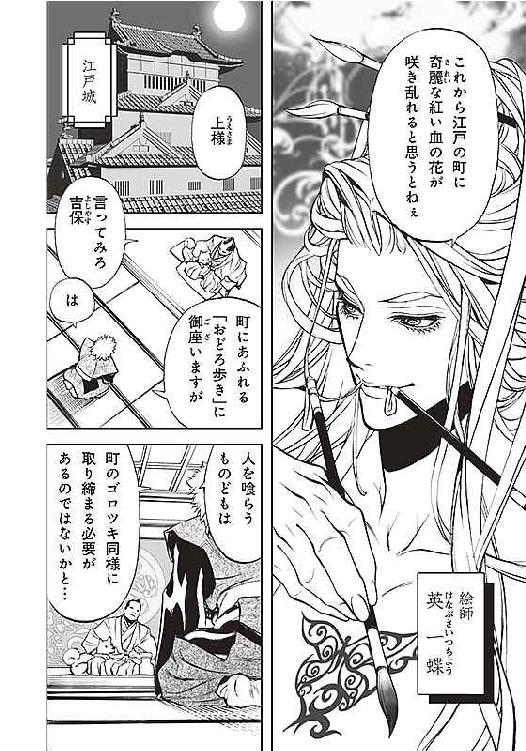
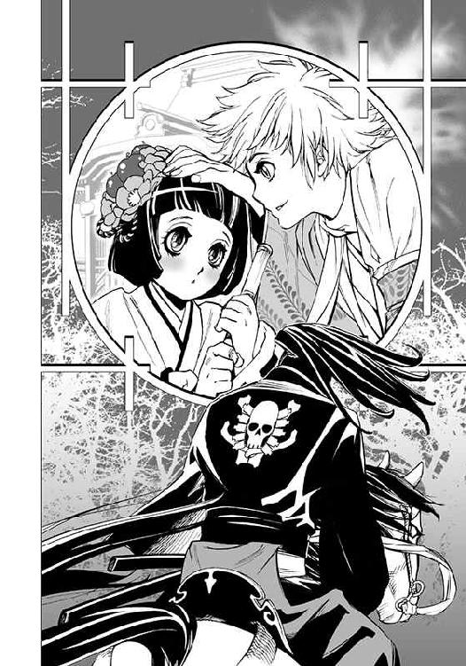
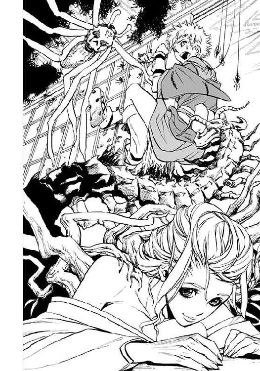
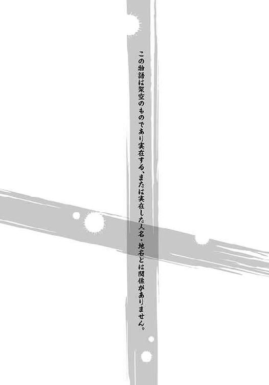

| 奥ノ細道・オブ・ザ・デッド (スマッシュ文庫) | |
| 森晶麿 | |
| PHP研究所 (2011) | |

奥ノ細道・オブ・ザ・デッド
著 森晶麿 Mori Akimaro
イラスト 天辰公瞭 Amatatsu Satoaki

 目次
目次 三つの影、夜の日光街道をてくてくてく。
ひとつの影がどろり崩れた。
二つの影、夜の日光街道をてくてくてく。
崩れた影がひとつに噛みつき、またどろり崩れた。
ひとつの影、夜の日光街道をてくてくてく。
崩れた二つの影に噛みつかれ、どろり影三つになった。
三つのどろり影、夜の日光街道をおどろどろどろ。
しばらく行くと江戸の灯見えた。
おどろおどろ見とれ、おどろおどろ吠え、おどろおどろ歩いた。
＊
江戸の町は、おどろ歩く彼らだらけの灰だらけ。すり足が立てる土埃がそのお供だ。
かつてはいがみ合った者も、愛し合った者も、高利貸も貧乏商人も、こぞって群れをなし、おどろ歩く、おどろおどろ歩く。
歩くだけなら犬や猫も歩くが、彼らの場合は人を噛み殺す。噛み殺すだけならいいのだが、噛み殺された者まで今度は彼らの列に加わるというのだから手に負えない。
江戸は、今ではそんな手に負えない連中で溢れかえっている。隅田川の水辺にはじまってその地獄絵は江戸全土に広まった。庭先にうずくまる女が実は犬を喰らっていたり、それを止めに入った男が噛まれてまた連中の仲間入りをしたりってなことを繰り返すうちに一夜にして数が膨れ上がってしまったのだ。
あわわあわわとどよめくうちに、奴らはそこら中の無防備な江戸市民を食い荒らす。隅田川に飛び込み逃げる者、弘福寺に逃げ込む者、噛まれて白目を剥く者、と多方面へ悲鳴の輪を広げていく。
「何たる美しき調べ」
俺は、その光景を吉原のさる館の最上階より眺めながら暢気に呟いた。
「おいお染、あれを見ろ、隅田川周辺から押し寄せてくるあの者どものおどろ歩きぶり」
「おどろ歩きって何さ、英一蝶のあにさん」
「おどろ歩きはおどろ歩きさ。ほかに言いようがあるか」
お染は俺にしなだれかかって耳元でふぅと息を吹きかけてくる。吉原の女の中ではかなりの上玉だが、俺がお染を気に入っているのはそんな理由じゃない。
「まったく、あの死人の群れには想像力を刺激されるよ」
絵筆を進める俺はご機嫌でそう言った。
「あにさんは生きている女より死人がお好きなのかい？」
「それぞれに良さがあるのさ」
うふふ変態、とお染が哂う。
「こんなに美しい男が変態だなんて、実に残念だね」
「かたじけない」
俺はそう云いながら筆を置いた。絵が完成したのだ。
「あにさんはどうして歩く死人を見ながらそんな美しい絵が描けるのさ？」
「美しいか、これはお主だぜ」
「それなら、あたいを見て描いておくれよ」
その言葉を俺は笑って誤魔化した。
実物を見ながら絵など描けるものではない。
ましてや、その実物のはだけた膝に人面を思わせる瘡のある場合には。完成した絵には、もちろん膝の顔は描かれていない。口も利かぬそれは、「あたいの番頭さん」らしい。
階下を眺めると、布団にわいた蛆のごとく密集した死人の群れが吉原の御門に押しかけている。無理もない、吉原は当代きっての繁華街であって彼らの餌もそれだけ豊富なわけで――。
「なぁお染、下に客がわんさとお出ましだぜ。ただし、死んでるけどな」
「死人はご免だよ」
「くっくっ、楽しいことになってきたじゃないか」
俺がほくそえんでいるうちに吉原の門番が噛み殺され、門からどっと彼らが入ってくる。これまでの悲鳴からさらにひときわ甲高い悲鳴が筝曲みたく心地よい。
「こんな馬鹿騒ぎは明暦の大火以来だな」
俺の愛する二十数名の吉原の遊女たちは今頃この渦中で逃げ惑うか、追いかけるほうに回っているかどちらかなのだと思うと、ぞくぞくしてくる。だがそんな俺の快楽も一瞬で冷めた。一人の男のことを考えてどうにも胸が苦しくなったのだ。
女は死んでも楽しそうだが、死んだ男に何がある？
そう思うと、あのお方への我が秘めたる想いが無性に高まってきた。あのお方の独特の風情、ここではないどこかをいつも見つめている眼差し......。と、あのお方への思いに耽ろうとする俺を、外の甲高い悲鳴が邪魔をする。俺は忌々しく思いながら、本所深川方面へ目を向けた。
その悲鳴が、あのお方も住む本所深川に轟くより遡ること数時間前。
我が恋敵、河合惣五郎は彼の愛する「お山」を見つめて言葉をなくしていた。花模様の着物は破れてはいるものの、その頂はどうにかまだ隠れている。
「......あかね姉さん、よしてよ」
惣五郎の水晶玉みたいに美しい瞳は、あかねの「お山」に釘付けだ。
あかねは惣五郎の従姉だ。
物心つくかつかぬかの頃、惣五郎はあかねが縁側で昼寝なんかをしていると、寝息でゆっくり上下する彼女の「お山」のうえを、ひとさし指と中指の旅人を歩かせた。
てくてくてく、てくてくてく。
はっつぁん、まだ頂上が見えねぇぜ。
いえ旦那、頂上はもうすぐそこです。
ほぉそうかさぞや見晴らしがよかろう。
なんてことを言いながら一人遊ぶ惣五郎を、あかねはあはははははと春の日差しみたいに哂いながら眺めていたものだった。
「いつでもこのお山におのぼり。これはソウちゃんのお山だから」
とか何とか言いながら。
しかし――今はその時とは状況が異なっていた。
あかねは目を血走らせ、涎を盛大に垂らし、両手を惣五郎のほうへ突き出しておどろ歩いているのだ。
「ねぇ、からかわないでくれよ......」
と呼びかけるも、あかねは答えない。
「うろろろぉおおおお、へびれびぃいいい」
舌の使い方の分からぬ赤子のようだ。
そんなあかねの様子を黙って見守る惣五郎に、あかねは容赦なく襲いかかる。
由々しき生命の危機、と惣五郎の頭が警報を鳴らした。
「あかね姉さん......」
狭い寓居がこんな時は恨まれた。嗚呼こんなことならあかねを見張るためとはいえ、あの男の隣の襤褸家なんかに移り住むんじゃなかった、と嘆きつつ、惣五郎はあかねに捕まる寸前で後ろへひょいと退いた。
と、あかねは目が見えぬのか惣五郎が寸前いた場所につんのめって顔面から倒れた。
「だ、大丈夫か！ あかね姉さん」
これが人間なら大丈夫なはずがない。あかねが倒れたところには惣五郎が置きっ放しにしたお猪口があったのだ。立ち上がったあかねは前歯の折れた血まみれの口を開けて、なおも惣五郎を追いかけてくる。
あかねの「お山」はかつてのような豊かな弾力もなく、冷たく硬そうに見えた。
惣五郎の頬を、知らぬ間に涙が伝っていた。
木戸の脇には杖に似せた薙刀があった。思えば護身用にと苦手な武術を無理に仕込んでくれたのもあかねだった。だからその薙刀であかねの喉元をひと突きにした時には思いがけぬ大量の哀愁が押し寄せて胸が詰まって死にかけた。
「ぐぅうううう、がぁあああああ」
あかねは、喉を突かれてなお聞き分けのない子供のようにジタバタしながらどうにか前に進もうともがいている。惣五郎は一度薙刀を引き抜き、大上段に構えた。
「さよなら、姉さん！」
首と胴体を音もなく切り離すと、混沌の美顔のうえを、とめどなく涙が伝った。
――とまれ、このような光景は三日と経たず江戸の日常となっていった。
幕府も手を拱いていたわけではない。時の側用人、柳沢吉保は、あんな奴らを野放しにしていると思われたら、ごろつきどもがつけあがる、と綱吉公に奇策を耳打ちした。
「あの者どもは幕府の命令によってあのようになっているということにしましょう」
苦肉の策というより死肉の策というべきか。おどろ歩く死者を下僕ならぬ「屍僕」と名づけて使役すべしと即座に号令がかけられ、「屍僕狩り」が開始された。
さらに小石川に〈封じ場〉を設置し、そこへ屍僕を連行したものに恩赦ありとの立て札がそこかしこに立ち、屍僕狩りは、一夜のうちに江戸中に広がっていった。
その頃立った噂に、立て札の前に長い時間奇妙な花売りが立っている、という気味の悪いものがある。何でも目が光るだとか、歯が光るだとか......。
とまあ、とにかくこれが元禄二年春、惣五郎めがあのお方と旅立つ前の出来事だった。
あかね姉の首を刎ねて、無秩序で無防備な僕は、とうとうばらばらになってしまった。
「今日からお前は曾良だ」
そんなことを云われれば、そんな気もしてきて、僕は曾良になった。
もう僕は惣五郎じゃない、惣五郎は死んだ。なんまいだなんまいだ。
あかね姉と一緒に死んだのだ。惣五郎は戻らない。
いま鏡に映るのはあかね姉によく似た女だった。
あかね姉の着物のお下がりも、考えようによってはあかね姉より僕によく似合う。それはあかね姉もそう云ってくれていたっけ。
――ソウちゃん、あんた化粧も着物もよく似合うじゃないか。
あの頃、僕はあかね姉に見惚れてばかりだったけれど、あかね姉はよく僕に見惚れていた。僕の睫毛の動きさえもさり気なく観察するようなあかね姉の視線にぞくぞくした。たとえ、一度として男と見られず、嫉妬深い可愛い人形としか見られていなかったとしても。
僕はあかね姉のいるところなら、どこへでもついていった。
でもそれも今日でおしまい。何しろ僕は惣五郎じゃない。
「月日は百代の過客にして、行きかふ年も又旅人なり」
後ろで、あかね姉が愛した唯一の男はそんなことをぼそぼそ壁に向かって喋っている。
「ふん、くだらないね」
僕はばかばかしくなって桶の水で化粧を落とし、鬘も投げ捨てた。
「もっと早くに旅にでも行ってしまえばよかったんだ、あんたなんか」
先生先生と慕っていたのは昨日までの話。今となっては憎いばかりだった。
ずるい、ずるいよ。あかね姉に死ぬまで愛されていたなんて。
でも、一方でこの男が僕を曾良と名づけたのも確かだった。
整いすぎた顔には、虫も殺せないような柔らかな眼差しと言い尽くせぬ高貴さが同居している。だが、それだけではない。猫の抜け穴のようにぽっかりとどこかに穴があって、その奥にある冷たい何かが危険な香りを放っている。「ろくでなし」の匂いだ。
僕はあかね姉に「あの先生はやめたほうがいい気がする」と何度か云ったものだった。
でも、今日からそのろくでなしが僕のご主人様なのだ。
世の中仕方ないことばっかりだ。
せんせぇ。この男のことを今日からこう呼ぼう。もう「惣五郎と先生」の関係には戻れそうにないもの。「曾良とせんせぇ」。今日からこれだ。
と、その時、せんせぇが急に僕に接近して、ぐいと僕の顔を両手で挟んだ。咄嗟に逃げようとしても、強い力で押さえつけられて逃げられない。
自分の鼓動が耳元に移動したかと思うほど高鳴った。せんせぇの目が、がらんとして冷たかったから。
「私はさっきまで壁に向かっていたが、今ではお前の目の前にいる。お前はさっきまで美しい女だったが、今では若き美僧だ。――そういうことだ。あや解き終り」
せんせぇの体が離れる。何だ、何だったんだ？ ドキドキした僕が馬鹿みたいだ。
それでもこの松尾芭蕉という御仁は俳壇では絶対的な存在だというのだから不思議だ。
かく云う僕も俳句をたしなむ一人。と云ってもそれはそもそもあかね姉が惚れた男に少しでも自分を近づけたいからだった。まさか本当の距離まで近づいてこんな狭い部屋で女装した姿で膝突き合わす日がくるなんてその頃は思いもしなかった。
「旅に出るぞ。早く仕度しろ」
「は？ 寝言は寝て言ってくれよ、せんせぇ。僕はこれから隅田川でどぼんと溺れるか首でも括って死むるんだよ。旅も鳶もあるもんか」
「馬鹿だな、死のうとしていたのは惣五郎であってお前じゃないだろ？」
せんせぇは茶人帽を被りながら、至って冷静な口調でそう云う。僕は思わず黙った。
そうか、僕はもう惣五郎じゃないんだった。惣五郎じゃない僕には死ぬ理由がない。
「いいからさっさとしろよ。気分転換になる」とせんせぇ。
僕は癇癪を起こしてせんせぇにおちょこを投げた。でもそれはあっさりかわされた。
せんせぇは整いすぎた顔に微かな笑みを浮かべて僕を見た。
何が気分転換だ。屍僕に喰われて屍僕にでもなってしまえ。いやいや違った、名づけてくださったご主人さまだ。僕、河合曾良は芭蕉せんせぇの作品なんだからこんな繰言をいつまでも言っていてはならない。
「......急いでお仕度いたします」
しおらしく云っていると、なめくじになったような気分になる。
と、その時せんせぇの首筋に歯型があるのを発見した。
何だ、この男も立派になさることはなさってらっしゃる。
「せんせぇも俳諧一筋ってわけじゃないのね、あははは」
「お前、何云っているんだ？」
胸がもぞもぞ歯がもぞもぞしてくるのはどういったわけだろか。ああそうか、まだあかね姉の着物を着てるせいで気持ちが女になって嫉妬みたいな感情が勝手ににょきにょきにょっきと生えてきたのに違いない。まずい、死...死むる。
僕は着物を脱ぐことにした。
「後ろ向いててね、せんせぇ」
声をかけたのに、せんせぇは「早く済ませろよ」と云いながら、なぜか後ろを向いてくれずこちらを凝視している。まるで当たり前の要求みたいに。口元には意地悪な笑み。ちょっと......それはさすがに着替えにくいよ...と思っていると、入り口に誰かが立っていた。
「御免仕る」
一瞬、また屍僕かと壁に立てかけた薙刀に手をかけたが違った。
現れたのは、黒い手拭いを顔に巻いた侍だった。
ぐるぐると手拭いを巻き取ると、その顔がはっきり見えた。
蜥蜴によく似た色男なんてものがこの世に存在するとすれば、それはこの男かというような風貌。顔を隠して来たところを見ると、お偉い方なのだろか。せんせぇは顔見知りらしくお辞儀をする。
「旅に出るんだってな。前の住処に行ったらもぬけの殻だったから驚いたぞ」
「旅支度のために引き払いましてね」
「ああ、前の家の木戸に句を掛けてあったのを見た」
その句なら僕も知っていた。
草の戸も住み替はる代ぞひなの家
みすぼらしい我が家も新しい人が入れば、雛人形が飾られ華やぐだろうと考えたせんせぇ。だが、ふふんと男はその句の存在自体を鼻で哂う。
「その後移り住んだ者は残念ながら一家揃って屍僕となり、今は隅田川の底だがな」
意地悪く云いながら男は僕をやけにじろじろ見やる。
「なぜ旅に出る？ 屍僕が怖いのか？」
「いえ。松島の明月が気になりまして」
松島の明月？ 僕は耳を疑った。
そんなもののために僕は旅のお供をさせられるのか？ 眉間に皺を寄せてぐるるると唸っていると男がこっちに気がついた。
「この可愛い坊やが旅の供か、ふっふっふ芭蕉先生も好きだねぇ」
「旅は我が人生ゆえ」
成り立っているのかいないのか分からない会話だ。
「それで吉保様、今日はこのがらくたに何用で？ まさか、こいつの着替えを覗きに来たわけじゃないんでしょう？」
ああそうだ、この男、昨年より幕府の側用人になった柳沢吉保じゃないか。
芝居小屋ではもっぱら出世の亡者と哂いの対象になっている人物。その出世の虫がこんな世の中のつまはじき者みたいな男に用とは！
さては役立たずの罪で逮捕状かと僕が勘ぐっていると、
「がらくたとはまた被害妄想な。何、江戸城にて内密に話したいことがあるのだ」
やっぱり逮捕だ。
「あはははは、せんせぇ逮捕されちゃうの？」
着物のせいであかね姉みたいな笑い声になる。やっぱり着物を脱がなくちゃ、と僕は思った。すると、蜥蜴男、吉保が僕に色目を使って云う。
「そこの坊やも一緒にどうだ？」
云いながらその目は、僕があぐらをかいている脚に向けられていた。僕は不愉快そうに顔を背け、剥き出しになっていた白い脚をそれとなく隠した。
「やだね、ここにいるよ」
僕だってそれなりに忙しいのだ。あかね姉の着物だってまだ脱いでないし。
と思っていると、せんせぇが口を開いた。
「一緒に来てくれるか、曾良」
「......はぁい、せんせぇ」
着替えを済ませて外へ出ると、久々の白い太陽がまぶしかった。実は、ざんばら髪で外出するのは初めてだった。あかね姉への気持ちを断ち切ろうと髷を切ったのにぜんぜん効き目がない。やっぱり人間、髪ごときじゃ変わらないんだな。
吉保公はお忍びで家臣一人と徒歩で来ていたため、四人で歩いて江戸城へ向かうことになった。
江戸の町の荒れ具合は、僕の想像を超えて凄まじかった。
僕が自宅に引き篭もっていた十日あまりのあいだに何とも言えぬ匂いが町中にたちこめ、大手門に差し掛かった頃にはもう匂いの多彩さに鼻がすっかりおかしくなってしまった。
その間に吉保の家臣がしゅぱっしゅぱっと三人の屍僕の首を刎ねた。
匂いの原因は間違いなくこの屍僕にある。匂いは千差万別、多種多彩な匂いが混ざり合って何とも奇妙だ。甘酸っぱい匂いややけに芳ばしい匂い、鼻をつんざく刺激臭等々が、江戸という容器にぎゅうぎゅうに詰め込まれている。
「柳沢の旦那」
蜥蜴男は僕の声に反応して振り返った。同時に失礼千万とばかりに家臣が僕を睨みつけた。せんせぇは放置。
「屍僕は幕府の命令なんだろ？」
「そういうことになっている」
化け蜥蜴め、と僕は思った。
よくもぬけぬけと。あかね姉が幕府の命令なんか聞くもんか。
「だったら、この匂いも計算ずくなわけ？」
「貴様、言わせておけば......！」と刀を抜きかける家臣を手で制して、吉保は僕の顎をぐいと持った。わっと思うままに蜥蜴男の顔がすぐそばに迫った。
逃げられなかった。
無理やり唇を奪ってから蜥蜴男はニタリと笑って云った。
「生意気を言うじゃないか、坊や。いいか、出る杭は打たずに囲い込む、これが江戸式だ」
僕は蜥蜴の冷たい唇の感触を消したくて地面にぺっぺと唾を吐いた。
せんせぇは知らぬ顔であらぬ方を見ている。がらんとした、透明な眼差し。
せんせぇは何も云わない。そもそもこういう時に意識がここにあるのかどうかもあやしいものだ。ほらあの目、あの焦点の合わない目はどうせ旅先のことでも考えているのだ。
「江戸は何でも飲み込んでこそ江戸だ。カブキモノしかり浪人しかり遊女しかり拝みものしかり、江戸は何でも丸呑みにするのさ」
吉保はそう言ってぺろりと長い舌を動かして見せた。こんな具合にな、と。
僕は蜥蜴男に食べられるような気がして背中がぞぞぞっとなった。
その時だった。蜥蜴男の背後から巨大な影が現れた。
大男の屍僕。生前は大工の棟梁か何かだったのかもしれない。
開けっ放しの口からはだらしなく涎が出ている。すでに何人か喰い散らかしたらしく、顔中にべったり血が付着している。匂いだけ水飴を溶いたように甘やかなのが滑稽だ。
まだ吉保は気づいていない。
黙っていればこのまま食べてくれるんじゃなかろうかと期待したのだが、その前に家臣に気づかれてしまった。
ざくざくざく――屍僕は三度斬られた。
ところが首をいざ斬り落とそうとした時、ちょっとした異変が起こった。背後から別の巨大な屍僕が家臣の刀を手で掴み、首筋に食いかかったのだ。叫ぶ家臣吠える屍僕。
喧嘩と屍僕は江戸の華、あっという間に家臣も屍僕に変わっていく。
だが、二匹の屍僕の動きがぴたと止まった。
見ればどちらの屍僕の脳天にも奇妙な短い槍のようなものが刺さっている。
これは確か――〈くない〉。
芝居小屋の忍者芝居で手裏剣みたいに使われているヘンな短刀をそう呼んでいた気がする。僕はその昔、芝居小屋でそれを見たことがあった。でも何で忍者の武器がここに？
せんせぇは屍僕の脳天に刺さった〈くない〉を順に抜き取ると、何気ない顔でその血を布で拭き捨て、懐に仕舞った。
仕舞った――。
ということは、せんせぇのものってことなのだろか？ しかしそんなことに驚いているのは僕だけだった。吉保は何事もなかったようにさっきまで家臣だった屍僕を眺めている。
「あとで隅田川に流させよう」
するとせんせぇが云う。
「この数日のことで隅田川は死臭が激しくなっていると聞きましたよ」
「隅田川の死臭など昔からだろうが」
「屍僕の肉を喰らった魚たちを獲って喰らった者がまた屍僕になっているという話も」
吉保はその話をふふんと鼻先で笑った。
「なら隅田川での釣りを禁じればいい。魚に限らずあらゆる生き物を食べることを当面のあいだ禁ずるべし。生類憐みのお触れにつけ加えよう。人間、米と野菜あらば不自由せぬ。よし、この旨将軍に伝えよう」
蜥蜴男はまた舌なめずりする。あまりに剥き出しの加虐性質と自己愛の刺激臭。
見ているだけでむかむかするが、その刺激臭が僕を標的にしているというのは妙な気分だった。よくあかね姉が気色の悪い男と夜遊びしていたのは、身を危険にさらす喜びにでも耽っていたんだろか。
そんなことを考えていると、また歯がむずむずしてきた。
まだ僕の心は、死んでしまった者への妄想と嫉妬でこんなにもむずむずするのだ。
鍛冶橋を越え、大名屋敷の小路に入ると、屍僕の匂いはしなくなり、江戸城に入ると、途端に心地よい御香が漂い始めた。匂いはそのまま階級というわけか。いい気なもんだ。
通されたのは、江戸城本丸、桔梗の間。
その襖を開いて驚いた。
「ばふうぅぅぅぅ、がぁぁあああああ」
飛び込んできたのは両手を前に突き出し、今にもこちらに飛びかからんとする屍僕。
しかも腐敗が激しい。ここまで腐乱が進行した屍僕にはまだお目にかかっていない。
「心配するな、鎖でつないである」
吉保はそう云って中に入り、屍僕の背後に回った。確かに天井から続く長い鎖が首に巻かれ、前に進むことはできないようになっている。
思わず手で口を覆ってしまう。やはりこの部屋だけは、耐え難く臭い。
「生前の行いが悪かったせいか、少々匂うが我慢してくれ」
吉保が後ろから屍僕に蹴りを食らわしたので、屍僕は前につんのめって首に鎖が食い込み、その衝撃で嘔吐を催した。
「ひぃ......うぁあああああああ！」
案内係が顔を覆って悲鳴をあげ始めた。吐瀉物が顔にかかったらしい。
吉保は素早く刀を抜くと、案内係の首を刎ね飛ばした。
江戸城ってずいぶん馬鹿げた場所だなと僕は思った。
「この屍僕はな、幕府の貴重な資料なんだ」
蜥蜴男の声の調子が変わった。ここからが本題らしい。
「この屍僕は、実は元は我が幕府の家臣だった。我々は、かの者を含む三名の家臣を伊達藩――すなわち仙台藩に遣わした。日光東照宮の修繕の命を伝えるためにな」
ところが――ともったいぶって吉保は言葉を切り、ちらっと僕に目をやり目配せをする。
「ところが、十日前に戻ってくると、この有り様だ」
「十日前、というと、ちょうど......」とせんせぇ。どうやら運良く今は頭がこの世のために働いているらしい。
「そうだ、こいつが、記念すべき江戸市民第一号の屍僕なのさ。捕えきれなかったほかの二名とともに日光街道から荒川を渡り隅田川を渡り千住宿、吉原と次々駆逐していったに違いない」
僕にはその話がどうしても解せなかった。
荒川方面から広まったというが、そこからだいぶ離れた本所深川で一人いち早く屍僕に成り果てたあかね姉のことはどう説明すればいい？
訝っていると、せんせぇが僕に頷いてみせる。
「お前の気持ちは分かる。庭を見て来いよ。鯉が見たいんだろう？」
違う。ぜんぜん違うが説明する気も起こらないので黙っていた。
「今日は良い天気ですね」
とせんせぇもぞもぞ伸びをはじめる。
ははぁ、どうやら庭に行きたいのはせんせぇのほうで今のは話を逸らす契機のつもりらしい。何と突飛で無茶苦茶な閑話休題。
だが、吉保はそんなせんせぇの気持ちには気づかぬふりで話を続ける。
「とにかく、幕府が任じた屍僕だなどという嘘がいつまで通じるかは知れたものではない」
やっぱり嘘なのか。まあ、そりゃそうだ。
「そこで、だ。旅のついでに日光へ赴き、伊達藩で何が起こっているのかを調べてきてもらいたいのだ」
「そんなの幕府の人間で勝手にやればいいじゃないか」
僕はまだ慣れないざんばら髪をいじくりながらそう云った。
もうこの部屋には家臣はいないし、蜥蜴男はたぶん僕には手を上げないと思ったのだ。
でも違った。左頬を激しく殴られた。
「痛いか？ 坊や。あんまり人をナメるなよ」
「うっ......」
倒れた僕の上に、蜥蜴男が跨る。
「そうやって睨むと、余計に可愛いじゃないか」
僕はあかね姉のことを思った。
あかね姉が十七の頃だったか、お使いの帰り道に、よその男にひどいことをされたあかね姉は男が去った後、着物を直しながら木の影に隠れていた僕に笑いかけた。
――こんなの慣れっこだから。
僕は泣いた。わけも分からず泣いていた。抱きしめるあかね姉の「お山」がとても柔らかかった。
「好きにしなよ。慣れっこだから」
僕はまたあかね姉の台詞をなぞった。そうすると、少しずつあかね姉との距離が近づくような気がした。
「いくら男の形をしても、この突き出た胸は隠せないぜ？」
蜥蜴男はそう云って僕の胸を鷲掴みにした。その刹那、蜥蜴男の表情が翳った。
無理もない。彼が掴んだのはあかね姉が僕に作ってくれた鋼鉄の胸装具だったのだ。
馬鹿蜥蜴は何をしようとしたかも忘れ、呆然としたまま僕から離れようとした。
でもそれはできなかった。
彼の首筋に思いがけないものが押し当てられていたからだ。
〈くない〉だ。
「吉保様、用件は分かりました。これもがらくたの宿命、いたし方ありますまい」
せんせぇは静かにそう云うと、吉保の首から〈くない〉を離し、僕に手を差し出した。
僕はせんせぇの手を握り、起き上がった。
起き上がりながら、「がらくたの宿命」ってどういう意味だろか、と考えた。
吉保は、せんせぇの殺気に怯んだ自分をなかったことにするように衣を正して云った。
「この坊やも連れてくのか？」
僕の心は正直なところ、まだ揺れ動いていた。
だが、蜥蜴男が近寄ってきて「男でも構わん、俺の元に置いてやってもいいんだぜ」なんて言われた日には、何がなんでも旅のお供をしますと言わざるを得ない。
「ふん、まあ芭蕉センセイが密命をたやすく忘れないとも限らないからな」と吉保。
確かにまったくその通りだ。せんせぇなら、重大な任務を忘れるなど朝飯前だろう。
「ならば今日江戸を発て。そして一刻も早く原因を突き止め、江戸に戻ってこい。江戸が死都となる前に」
話が終わると、僕とせんせぇは早急に追い出された。
帰りはせんせぇと二人で深川に戻ることになった。
「せんせぇ、さっき云ってたがらくたの宿命って......」
尋ねようとした時、せんせぇが僕の口に「しー」と人差し指を当てた。
がさり
がさり
「振り返るな。奴らが来る」
僕は耳を澄ました。足音はひとつや二つではなかった。
「走るぞ」
せんせぇは僕の腕を掴むと、風のような速さで駆け出した。僕は一度だけ後ろを振り返った。そして、振り返らなければよかったと思った。
そこにいたのは百はくだらない屍僕の群れだった。
しかも、動きが速い。
「人口が激減して餌がないぶん、飢えて獰猛な屍僕が増えているんだ」
そうか。屍僕が増えれば、反比例して餌は減る。
当然の論理だった。
しかし、何だこの速さは！ 尋常じゃないぞ。
僕はつくづくあかね姉の着物を着てこなくてよかったと思った。
それでもちょっと油断すれば簡単に追いつかれるほどの速さで奴らは追いかけてくる。
どこをどう走ったものか分からないうちに、京橋まで来た。
橋の上では、松明を持った男たちが橋の向こう側からやってくる屍僕と対峙していた。
橋の向こう側の屍僕の数も相当だ。対する男たちの数は八名。僕とせんせぇが加わっても十名。
「どうする気だ？」
せんせぇは男たちに尋ねた。一人が、小石川まで追い詰める、と答えた。
「無理だよ、こんな数じゃ」と僕。
「いや、奴らは火が苦手なんだ」と別の男。
「でも......」
飢餓状態の屍僕たちが、火ごときで獲物を諦めるとは思えなかった。
と、その時――えらの張った男が前に躍り出た。
「俺がこいつら蹴散らしてやる！」
「よせ！」
誰より鋭く叫んだのは、ほかならぬせんせぇ。だが、男はせんせぇの声を無視して屍僕の群れに突進していく。結果は見えていた。男の振り回す松明に、はじめのうち戸惑っていた屍僕だったが、横から回り込んだ一匹が男の腕を捕えると、反対側からもう一匹がもうひとつの腕を掴んだ。松明は橋の上に転がり、屍僕に踏み潰された。
そして男は――屍僕になるまでもなく、首から皮を剥がされ、脳髄までむしゃむしゃと食べられた。「阿呆め」とせんせぇが呟いた。あの男だってそれなりに頑張ったのに。
動揺した男たちは松明を投げ捨てて後方へ退いた。
そして――後方より迫り来る屍僕の群れに飲み込まれた。
悲鳴。
橋のうえには僕とせんせぇ、そして投げ捨てられた一本の松明だけ。
あかね姉、もうすぐ逢いに行けるかも。僕は心底そう思った。
「曾良、助かりたかったら、私から離れるなよ」
せんせぇはまだ僕の腕をしっかりと握り締めたままだった。
反対側の手に松明を持ったせんせぇは、その松明を口に入れた。せんせぇは火を食べた。
次の瞬間――。
暴！
せんせぇは口から火を噴いた。
屍僕が燃え上がった。
そして、その火中を、せんせぇは僕を引っ張ってまっすぐに走り抜けた。
だが、それで終わりではなかった。振り返ると、また僕は後悔することになった。そこには、火達磨になった屍僕たちが僕らのあとを追いかけてきていた。
結局、小石川に走るしかなかった。屍僕の〈封じ場〉が小石川にはあるのだ。
僕とせんせぇはとにかく逃げた。
逃げて逃げて逃げまくった。僕らが逃げる路は、迫りくる炎の波に呑まれ、あまねく火事になった。せっかく明暦の大火から復興の兆しが見えたというのに。
喧嘩と火事は江戸の華。だが、その華が今度こそこの都の息の根を止めようとしていた。
どうにか小石川まで逃げ切り、伝通院へ向かった。
伝通院の裏手にある砂利の広場が、〈封じ場〉だ。大げさな柵がいつの間にか設えられている。僕らを見て、柵の上にいる二人の門番が扉を開放した。その扉の先には深い穴が掘られ、屍僕はその穴倉に集められているという。せんせぇはまっすぐその前まで走っていくと、直前で高く飛び上がり柵にぶらさがった。
火達磨の屍僕たちはそれに気づかず突進し、穴に消えた。
はぁ、はぁ...
〈封じ場〉の穴倉に集められた屍僕どもの阿鼻叫喚。
はぁ、はぁ......
でも、僕には、僕とせんせぇの心臓の音しか聞こえなかった。
とても静かに、燃えさかる〈封じ場〉を見下ろしていた。
芭蕉庵に帰り着いた時には息もきれぎれだった。
せんせぇはと云うとこれが不思議と少しも息が乱れていない。いったいどういう鍛え方をしているんだろか。〈くない〉の使い慣れた手つきといい、さっきの火炎噴射といい、せんせぇがただの俳諧野郎でないのは明白だ。
「ねえ、せんせぇ...せんせぇはもしかしてにん......」
だがせんせぇは一息入れるでもなく、荷物を背負って立ち上がった。
「行くぞ、曾良」
曾良――そう呼ばれて僕のできる返事はひとつしかなかった。
「はい！」
僕は見えない尻尾をふり、隣の自宅へ戻るとすぐに荷物を集めた。
僕は曾良。
せんせぇに作られた人形だ。
あかね姉の着せ替え人形だった惣五郎じゃない。
こうして僕とせんせぇは本所深川から旅立った。
江戸の小道から続々湧き出てくる屍僕の大群を振り切って。
今では町中に火が回り、人々は逃げ惑い、屍僕はその人々をつまみ食いする。
千住まで屍僕との追いかけっこは続いた。屍僕たちは、両手を前に突き出して追ってくる。少しでも歩調を緩めれば捕まる恐れがあった。
「せんせぇ、このままじゃあ......」
云いかけて僕は驚いた。
なぜって、せんせぇは泣いていたのだ。
泣きながら足は早歩きのままだった。
「曾良、焼きつけておけ。しばらく見ることのない江戸の眺めだ」
せんせぇは風景を失うことに泣いていたのだ。屍僕が溢れかえってることが悲しいのでもなければ、怖いわけでもない。
これが――あかね姉の愛した男なんだ。
穏やかな表情の下に隠された冷ややかさは、世界からの離脱の副作用。本当は、体をからっぽにして風景が話しかける声に耳を傾けているのだ。
「その子が先生のそぞろ神ってわけですか」
ふいに後ろから声がした。
振り向くと、そこに派手な柄の着物を着込んだ容姿端麗な男が立っていた。
英一蝶。
破天荒な性格のために、狩野派を破門されたといういわくつきの絵師だ。
「ああ、今日は天気が良くてよかった」
せんせぇは返事にもならない返事を返す。
「俺を連れて行ってくださいよ、その坊やの代わりに」
この男はせんせぇのことが好きなのだな。
僕は代わってやりたいような気持ちになった。でも、残念ながらせんせぇは英一蝶の話を聞かずにすでに船に飛び乗っていた。
「せ、先生！」
一蝶は恨めしげに僕を見た。
「どんな手でそそのかしたんだ？」
「何も。あんたとは違うよ」
一蝶がいっそう恐ろしい顔で睨みつけてきた。
船に乗り込んだ時、川岸に屍僕たちがやってきた。
「せんせぇ、早く出よう、奴らが！」
だが、せんせぇは何を思ったか船頭に指示を与えずじっと立ち、涙を流して屍僕たちのほうを眺めていた。
「せんせぇ！ せんせぇ！」
どうも風流心に囚われると使い物にならなくなるらしい。これは道中が思いやられる。
とうとう船頭が僕らを迷惑そうに見て言った。
「死ぬのはご免だ。悪いがもう出るよ」
船頭は岸から船を出発させた。
走ってくる屍僕の一匹が岸から飛び上がって船にしがみついた。
僕は薙刀でそいつの脳天を田楽刺しにして川に投げ捨てた。
見ると、岸に集まった屍僕たちが次々と川にどぼんと飛び込みながらこちらへ向かってくる。
「うわっ、わわわ」
船頭が間抜けな声を出した、と思うと川から屍僕に脚を捕まえられていた。
僕はすぐさま助けようと動いた――が、遅かった。
どぼん。
「た、助け......ぅあああああああ」
ぶちゅぶちゅっと嫌な音が響いた。
岸では英一蝶が刀を振り回して、ぎったぎったと屍僕を切り刻んでいた。そうする時の彼は、実に活き活きとして見えた。さすがは噂に勝る変態絵師だ。
「先生！ 江戸は俺に任せてくれ」
一蝶は斬りまくりながらそう言って先生に熱い視線を送った。
「うん、よし、任せた」先生は軽々しく云うと、櫓を持ち、ぐいぐい漕ぎ始めた。
川からいくつも顔や手が出ている。見ればみんな屍僕で船をひっくり返してやろうと待っている。でも、それよりも船のほうが速い。
だが、さらに厄介なことに僕は気づいた。船にぴたりとついてきている魚の群れ。その魚は通常のそれではなかった。赤黒く、ところどころ鱗が落ちて身が見えている。
屍僕の魚だ。
屍僕の魚たちは時折跳ね上がっては船に侵入しようと目論んでいた。
さらに、天空を見て僕は暗澹たる気持ちになった。血まみれの鴉や鳩が船に向かって飛んできていたのだ。
「せ、せんせぇ...あれ...」
と思ってせんせぇを見て、僕は二度驚いた。
せんせぇの頬には滝のように涙が流れていたのだ。そして、一句。
行春や鳥啼魚の目は泪
いい句だった。泣いているせんせぇには、世界のほうが泣いているように見えるのだ。
でもせんせぇ、ごめん、それどころじゃないよ。
僕は、薙刀を構えた。屍鴉は一直線に突進してくる。僕は目をつぶって振り下ろした。
屍鴉は――真っ二つに割れて隅田川に落ちた。
こうして、僕とせんせぇの旅は、その幕を開けた。
その夜、草加に着くと、僕は深い眠りに落ちた。まるで死人みたいに。
朝になった。
目覚めても、まだ明け方のあかね姉の夢がこびりついて離れない。あかね姉が屍僕に襲われ、屍僕に変容する夢だ。あかね姉を襲った屍僕がこちらを振り向くと、せんせぇだった、というところで叫び声を上げ、目覚めた。
青白い光。まだ夜が明けて間もない時刻。貝の吸い物のいい匂いが漂っている。
――嗚呼、もうここは江戸じゃないのだった。
隣を見ると、せんせぇの布団はすでに空になっていた。
「食べると屍僕になる？」
宿の朝飯をかきこんでいる時、不意にせんせぇが女主人の話に反応して聞き返した。
女主人は戸惑いながら「ええ、そうですぅ」と答えた。
「〈このしろ〉っていう魚を食べると、屍僕になってしまうって、神社の神主さんが仰るので、みんな食べないようにしてるんですよぅ」
僕はその間、ぼりぼりと沢庵を食べていた。夢のせいか何となくせんせぇに打ち解けられない気分だったのだ。
「聞いたか」
僕は返事をしなかった。こんな時、尻尾でもあって適当に振れたら便利なのに。
「お前、確か吉川神道を学んでいただろ？」
何だ、知っていたのか。
俳諧のこと以外にはまるで興味がないと思っていたので、僕は少し驚いた。仕方なく答えることにした。
「おかみさん、その神社って、室の八島のこと？」
あらよくご存知で、なんて云いながら女主人は顔を赤らめる。
「それで、実際〈このしろ〉を食べないと、屍僕にならないわけ？」
〈このしろ〉とはコハダのことだ。僕の大好物でもある。本当に屍僕の原因が〈このしろ〉にあるなら、僕は当面のあいだ好物にありつけないという困ったことになる。
「それは......」
云い澱む女主人。食べるなと言われてそのとおり食べてないから分からないわけだ。
僕はせんせぇと目を合わせた。
どうやら、せんせぇは室の八島に行くことをもう決めているようだ。
せんせぇは、女主人に満足げに優雅に微笑む。女主人は見惚れてくらくらしている。刺激が強すぎたらしい。せんせぇの皿の上には海苔だけ剥がされ、裸にされたおにぎりが恥ずかしそうに佇んでいる。僕はそこにせんせぇの気だるく高貴な加虐性質を感じ取った。
宿を後にし、いざ室の八島へ――。
鎮守の杜を通って神社近くに来た時だった。
せんせぇが急に足を止めた。なにやらクスノキの木々の遥か高みを見上げている。
猿だった。
僕らを包囲するように、いくつもの光る目が木々の高みから僕たちを見下ろしている。
「ぎぃいいいいいいいいい！」
「屍僕の猿だ」とせんせぇ。
その皮膚の爛れ具合。確かに猿の愉快さと愛くるしさを削げ落とした醜悪な姿だ。
「猿がみんな〈このしろ〉を食べてるとは思えないんだけど...」
僕は杖に似せた薙刀の鞘をはずして構えながらそう云った。
「たまには意見が合うじゃないか」
やはり〈このしろ〉が屍僕の原因というのは無理のある話じゃないだろか。
と、その時、首領らしき屍猿が、せんせぇの目の前に舞い降り、電光石火の速さでせんせぇに跳びかかった。せんせぇは後方に跳び退くが、背後にはすでに二匹目が控えている。はさまれた。
だが、しゅっと音がしたかと思うと、二匹の脳天に〈くない〉が刺さって二匹がばたりと倒れた。せんせぇはその死体に飛びつき回転しながら〈くない〉を回収する。
ところが、体勢を整えると、せんせぇの周囲を五匹の屍猿が取り囲んでいる。
せんせぇは――目を閉じている。
五匹が、一斉にせんせぇに飛びかかったが、次の瞬間には五匹のうち三匹の屍猿の首が宙に舞っていた。
僕が首を刎ねたからだ。
「ぎぃいいいいいいいい」
まだまだいるぞとばかりに木々の隙間から屍猿たちが野次を飛ばす。
「せんせぇ...」
「曾良、全速力だ」
「はい！」
僕は必死でせんせぇを追いかけた。
だが、頭上の木々を器用に渡り歩いて屍猿たちがぴたりとついてくる。人間の脚で猿に勝とうなんて無理がある。あっという間に追い抜かれ、先回りされてしまった。
せんせぇは「やっぱり駄目だったか」と暢気な感想を洩らす。
間近で見る屍猿は、醜悪極まりない。剥き出しの歯茎、赤ら顔は紫顔に変色していた。中には頬の肉がはがれて骨が覗いている屍猿もいる。
薙刀で殺せる数には限りがある。あとはせんせぇ頼みだ。願わくば、ここでだけは風流心に囚われないでもらいたい。
――と、けものみちの奥より、低い奇声が響いた。
「ぐげぇえええええ」
猪だった。そして、案の定これもやはり死んでいる。猪肉というのはただでさえ臭いが、腐るととんでもなく臭い。そしてこの臭い屍猪が勢いよく走ってくる。
そして――ずしん。
あまりに勢いよく走りこんできたために屍猿たちの群れに激突してしまったのだ。
数匹の屍猿が、木と屍猪に挟まれてぐっちゃり潰れている。
そのすきに、鎮守の杜を駆け抜け、張り巡らされた〈竹槍垣〉の隙間を潜った。〈竹槍垣〉はさっきの旅の宿にもあった。この地方の屍僕対策であるらしいのだが、通常の竹垣に槍がついた何とも恐ろしい代物だ。
「どうやら屍僕は〈このしろ〉とは関係なさそうだ」とせんせぇ。
「そりゃそうでしょ」
「だが、ここの神主が〈このしろ〉が原因だと吹聴している」
「〈このしろ〉の言い伝えを乱用してるんだよ」
「言い伝えって何だ？」
せんせぇが食いついた。
「〈このしろ〉を焼いた匂いが、人肉を焼いた匂いと似ているんだって」
僕は〈このしろ〉が好きだけど、そんな風に思ったことはない。だからこれは迷信だ。
「なぜ、そんな言い伝えが残されている？」
せんせぇがそう尋ねた時だった。境内の前方に箒で木の葉を集めている少女が目に飛び込んできた。
大きな目が愛くるしい巫女姿の少女。
「その話はおいおい......」
僕の視線に気づいて少女が頭を下げた。可愛いことはいいことだ。旅の疲れが癒されるし、可愛いものには可愛いってこと以外の意味が必要ないんだから。
「ねえ、ちょっと聞きたいことがあるんだけど」
見知らぬ男二人が近づいてくるせいか少女は怯えている。
僕は「怖がらなくていいよ」と、彼女の頭を撫でた。彼女の頬が林檎みたいに赤くなる。

「さ、触らないでくださいませ！ 触られると......好きになってしまうのです」
「......触る前に言ってくれないと......」
どうするんだ、もう触っちゃったじゃないか！ まあいいや。好きになられるのなんてよくあることだし。林檎ちゃんの心中はさておき気を取り直して、
「このあたりで〈このしろ〉を食べると屍僕になるって本当なのだろか？」
すると――。
赤林檎ちゃんが青林檎ちゃんに変わった。
「そのように神主さまより伺っていますわ」
「だからさぁ、聞いているかどうかじゃなくて、本当にそうかどうかが聞きたいんだけど」
「あの、その...ですから...いくら運命の方からの質問でもそれは...その...」
林檎ちゃんの顔が明らかに引きつっている。それにしてももう「運命の方」呼ばわりか。
ふと、背後に視線を感じて振り返ると、そこに神主らしい男が立っていた。
じっとこちらを見つめているだけで会釈も何もしない。
牛のようにでっぷりと肥えた男。正装を着込み、まだ春なのに体中汗をかいている。
「あれが、神主？」
その時、境内に複数の足音が入ってきた。
僕は咄嗟に薙刀を構えた。
――が、現れたのは人だった。生きている人。
男が数名。女を一人抱えている。女の顔には――。
死相。見開いた目が、虚空を見つめ、激しい痙攣を起こしている。
外傷はないが、屍僕の症状だ。やはり食事による感染だろか。
「〈このしろ〉を食べたのだな？」
牛のような神主が尋ねる。
「食べて...ません！ ほ、ほんとうです！」震えながら女は訴える。
牛神主は表情のない顔で汗を拭きながら、夫らしい男に云う。
「この女はどこぞの家で浮気をしたのだ。その家で〈このしろ〉を食べたから本当のことを言いたくないだけのこと」
その言葉を聞いた途端、男たちの様子がおかしくなる。
「そうか......そういうことだったのか......この淫乱めが！」
男たちは苦しむ女を蹴り始める。
「彼女の生まれ変わりを祝福するか、生と生の境目にある忌魔のうちに叩き潰すか選べ」
牛神主が渡したのは、鉄の棍棒だった。夫はためらいがちにそれを持った。
だが、その一瞬のためらいが命とりだった。
女は――すでに屍僕に変わっていた。
夫が棍棒を振り上げるより早く女は夫にがぶり。棍棒が床に落ちる。牛神主はニタニタと笑いながら、それを拾い上げようとした。
僕は咄嗟にその棍棒を踏みつけた。
「何だ、お前は」
「あんた、神主じゃないだろ？」
牛神主の顔に狼狽が走る。
「本当の神主なら、何でもない日に正装なんかしないよ」
牛神主の汗が冷や汗に変わり、逃げ出した。
偽牛神主が逃げたのは倉庫らしき建物だった。
男たちは悲鳴を上げながら女から逃げようと鎮守の杜に入り込んでいく。林檎ちゃんはその様子を震えながら立ちすくんで見ている。男たちに鎮守の杜に屍猿や屍猪がいることを伝え忘れたけれど、もう遅い。本当の神主はどこに監禁されているのだろか？ それともすでに殺されてしまったのだろか......。
せんせぇは、ゆっくりとした足取りで偽牛神主を追いかける。
扉の前で鍵を開けようと必死な偽牛神主。
その扉に、せんせぇが〈くない〉をひとつ投げ打つ。偽牛神主の耳をかすめて刺さる。
「お前の狙いは何だ？ 牛糞殿」
ぎ...ぎゅうふんどの？ ぐへへへと〈牛糞殿〉こと偽牛神主は下卑た笑いを洩らす。
「〈しもべ〉は庶民の混乱を望んでいないのだ」
――〈しもべ〉？ 何だ？
扉が、開いた。
そこに横たえられていたのは、裸の女の死体。
その美しさに、一瞬、女神の化身かと思った。
偽牛神主は女神に近づき、その顔に己の醜い顔を近づける。
「さあ、供物だ」
女の目が開き、偽牛神主を捉えた。
そして――偽牛神主は血しぶき偽神主に変わった。
僕は薙刀を構えた。
だが、構えたはずの薙刀が宙に浮いた。
いつの間にか、目の前に女の顔があった。
速い！ 相当飢えていたのだろか。僕の頭と肩を素早く押さえつけ首めがけて牙を剥く。
ぶしゃっっ――血しぶきが舞う。
――嗚呼、死むる。こうして僕も死むるのだ。そして屍僕となってせんせぇに殺されるのだ。それはそれで幸せなのだ。自分が圧殺される快楽なのだ。
あれ？ ヘンだぞ、痛くない。
痛くないはずだ。噛まれているのは、僕ではなかったのだ。僕の背後から僕に覆いかぶさるようにして、林檎ちゃんが噛まれている。
「間に...合って...よかった...ですわ」
口から血を流しながら林檎ちゃんは云った。
地面には裸の美しい屍僕が倒れている。その脳天には〈くない〉。
僕は林檎ちゃんを抱きしめた。さっきまで顔を赤く染めていた彼女は、今は死とそのあとに待ち構える世界に震え、真っ白になっていた。
「離れて、くださいませ、わたしもうすぐ......」
僕は離れなかった。
強く抱きしめた。そうだ、僕はこんな風に最後にぎゅっとあかね姉を抱きしめたかったのだ。誰よりも純粋で、誰よりも挑発的なあかね姉を――。幼くして両親を亡くした僕にとっての、世界のすべてを――。
「離れろ、曾良」
せんせぇの声も僕にはろくに聞こえなかった。
だから、せんせぇが屍僕になった血しぶき偽神主に跳びつかれてもがき苦しんでいることに気づけなかった。はっとした時、せんせぇは血しぶき牛に跨られ、地面に倒れていた。
「せ、せんせぇ！」
林檎ちゃんから離れてせんせぇを助けようとすると、林檎ちゃんの腕が、急に力強く僕の腕を握った。林檎ちゃんは、真っ赤に充血した目で僕を見て涎を垂らしていた。
「林檎ちゃん......」
もうそれは林檎ちゃんではなく屍林檎ちゃんだった。匂いまで甘酸っぱい。
「ぬぅああああああああ」
太い叫び声がして、見ると、血しぶき偽神主が目から血を流してもがき苦しんでいる。
せんせぇが何かしたらしい。両手のふさがれた状態で何を？
と思いながら、屍林檎ちゃんの顔を手で抑え、噛まれないように必死に体勢を整えようと踏ん張っていると、せんせぇがやってきて屍林檎ちゃんにふっと息を吹きかけた――わけではなかった。針だった。せんせぇは口に仕込んだ針を屍林檎ちゃん目がけて吹き、目をつぶした。もがき苦しむ屍林檎ちゃんに、せんせぇは容赦なく〈くない〉を打ち込む。
僕はその場にへなへなと座り込んで泣き崩れた。
＊ ＊ ＊
「私に話しかけないでくださいませ」
僕はそう云ってせんせぇに背を向けた。
「......いつまでそんな恰好してる気だ？ 引き裂いてやろうか？」
せんせぇが云っているのは、僕の巫女姿のことだ。その衣装は、林檎ちゃんのものだ。
「ふん、脱ぎたくなったら自分で脱ぎますわ」
僕は怒っていた。僕を守るために死んだ林檎ちゃんをあんな殺し方するなんて。
「お腹がすいているのか？」
違う、全然違う。この男はいつもこうだ。あかね姉が本当に可哀想になる。
僕らは今、日光山の麓に住む、仏の五左衛門と名乗る男の家にいた。今宵の宿だ。このあたりでは、この男の家にだけ頑丈な〈竹槍垣〉が設えられており、他はすでに廃墟だった。
自分から仏と名乗る奴にろくな奴なんかいない。第一、本当に「仏」なら周囲の家の連中をなぜ匿わなかったのか。彼一人が生き残ってるのも奇妙だ。僕らを応対した時の独りよがりな善人振る舞いを思い出したら、何だかむかむかした。
「怒っているのか」
「存じませんわ」
一日経っても、この衣には林檎ちゃんのいい匂いが漂っている。そのせいか僕の喋り方までおかしくなっている。いや、これはもともと僕の体質が服の人格に憑依するからか。
「ところで、昨日から聞きそびれているんだが」
とせんせぇ。何だ、許可なく話題転換する気だ。図々しい。
「〈このしろ〉の言い伝えが残っている理由を、お前は知っているのか」
「あら、木花咲耶姫の神のことでございますかしら？」
「どんな話だ」
「木花咲耶姫の神は、不貞の疑いをかけられて、身の潔白を証明するために出口のない室に入って火を放ったのですわ」
なんと憐れな木花咲耶姫。神話の神々はいつも過激なのだ。
「自虐趣味にもほどがあるだろう。火なんか放ったら、死んでしまうではないか」
江戸に火を放った人物が何か云っている。
「だから潔白の証明なのですわ。不貞でできた子なら、焼け死んでしまうはずですもの」
せんせぇ納得いかない顔をしている。
僕だって納得はいかないけど、神話ってそもそもそういうものだし、そこは納得してくれないと話が進まないんだよ。だって神なんだし。
「で、結果はどうなった？ その自虐的な女神は」
「無事に、三人の子を生みましたわ」
せんせぇはしばらく考え込むように黙ってから、ふたたび僕に尋ねた。
「それと〈このしろ〉とどういう関係があるんだ？」
「火の中で貞操を証明した姫を思いやって、人肉を焼いた匂いのものは食べないってことになったそうでございますわ」
納得したのかどうかは分からないが、せんせぇはふいに詩的な表情になった。
「貞操か......。昼間の女は貞操を証明できずに死んでしまったな」
「男は女を噂で判断するろくでなしの生き物でございますわ」
「本当に、男というのは愚かな生き物だな。薄っぺらで厚かましい」
「あかね姉のこと、薄っぺらで厚かましいせんせぇはどう思ってたのでございますかぁ？」
僕は核心に迫る質問を投げかけてみたが、せんせぇは少しも動揺しなかった。
「好きだったよ。彼女は類まれなる唯美主義者だった」
「あかね姉の良からぬ噂のことが気に懸ったりはしなかったんでしょうか？」
茶屋勤めのあかね姉は、巷の男どもとつねに噂が絶えなかった。その中の何人かに言い寄られていたのは確かだし、中には手荒な真似で力任せに関係を迫ったものもないわけじゃない。
でも、それってあかね姉の本質とは関係ないことだ、と僕は思う。
たとえ何人の男と結ばれていようが、女なんて非力なんだからしょうがないじゃないか。
もしそのせいでせんせぇがあかね姉を拒んだのだとしたら...と考えているとせんせぇが身体を横たえて云った。
「......お前、疲れているのか？ 早く眠れよ」
逃げる気か。そうはいくものか。僕は自棄を起こした。
「ずるいんだよ、せんせぇは！ 死ぬまであかね姉に愛されておいて、僕を守ってくれた娘はむごたらしい殺し方をして......この人殺し！」
と、突然せんせぇが起き上がり、僕の口を手でふさいだ。
殴られるのかと思ったが、違った。
「聞こえなかったか」
今度は何だと云うのだ、こんな夜遅くに。
すたった、すたった、すたった
生き物の足音。〈竹槍垣〉を飛び越えたのだ。
「犬か、狐だろう」
階下で仏の五左衛門の酔っ払った声が聞こえてくる。
「ったく、まぁた来やがったか、この野良犬めが」
どうも、酔うと本性が現れ、「仏」でも何でもなくなるらしい。
がらがら。
「開けたな...」
僕は、せんせぇの服にしがみつき、唾をごくりと飲み込んだ。
をぉっ をぉっ をぉおおおおおおおお がふっ
「うぁ！ こ、こいつめ！」
仏の五左衛門の悲鳴。
その後、ぐしゃっと鈍い音がして、犬の声が消えた。
僕らはおそるおそる階段を降りた。
玄関のところで、仏の五左衛門が震えていた。首から、血を流して。
「......今まで善行を重ねて生きてきたってのに、その報いがこれかよ......」
仏の五左衛門は納得がいかぬという顔で首筋から流れる血を眺めている。
「とうとうお役目が来ちまった......」
せんせぇは仏の五左衛門に近づいた。
「お役目とは何だ？ 誰のお役目だ？」
「よせ！ ...俺を殺さないでくれ...」
仏の五左衛門は勝手に怯えて後ずさり、頭のつぶれた犬の屍につまずいて転んだ。
「伊達藩が絡んでいるのか？」
伊達藩だって？ そうか、幕府の三人の家臣たちは、日光東照宮の修繕を伊達藩に命じた帰りに屍僕になった。せんせぇは伊達藩の謀反の可能性を疑っているわけだ。
仏の五左衛門はぶるぶる震え、口だけぱくぱくと何か動かした。
そして、痙攣。
目がみるみる充血していく。
せんせぇはすぐに〈くない〉を眉間のど真ん中に投げ刺した。仏の五左衛門は、本当の仏になった。その体から溢れる、鼻が曲がるほどの刺激臭は、とても〈仏〉とは思えなかったけれど。
＊ ＊ ＊
翌朝、四月の最初の日、僕らは日光山に参詣した。
誉れ高き日光東照宮を目の当たりにして、せんせぇは風流心に満たされたらしく、一句詠んだ。
あらたうと青葉若葉の日の光
日の光が日光山の威光そのものに見えるという句。
だが、今回はせんせぇ泣いてはいない。ただ、じっと眺めている。
「世界がどうなろうと、東照宮の補修は急いでもらいたいね」
せんせぇにとって人は景色の二の次。屍僕の問題より、しょせん風景が重要なのだ。
やれやれ、と思っていると、背後から何やら男の罵声が聞こえる。
振り返り、思わず絶句した。
そこでは、首輪をつけた屍僕どもが鞭を打たれて木材を運ばされていたのだ。
「早く進め！」
罵声の正体は、馬に乗った侍。伊達藩の人間だろか？ それにしても、真っ黒な着物に髑髏の家紋とは、いささか奇妙だ。
男はこちらに気づき、僕に目配せをしてみせた。それで、僕はようやく、そろそろ巫女姿もやめどきだろかと思った。そういえば、今日は四月一日。衣替えするにはもってこいの日だった。そこで、僕も日光連山の主峰である黒髪山をつかって一句詠む。
剃捨て黒髪山に衣更 曾良
ずいぶん遠くまで来たものだ。あかね姉を忘れたくて、忘れたくなくて、髷を切り、とうとうここまで来た。でも、景色が変わっても、季節が移り変わっても、僕の心の中は変わっていない。世界があかね姉を忘れ去っても、僕の心はあかね色のままだ。死むる。
「屍僕を本当に使役しているのか...。種類が異なるのかもしれん」
確かに徘徊する〈野良〉とは質が違いそうだ。だが労働力としては最低な部類だろう。
この時、僕はふと、偽牛神主が死ぬ前に云ったことを思い出した。
――〈しもべ〉は混乱を望んでいないのだ。
実は、僕には気になっていることがあった。
昨夜死んだ仏の五左衛門。彼が最後に口をぱくぱく開いた時、確かにその口は〈しもべ〉と動いたように見えたのだ。このことは、まだせんせぇには、話していない。僕にだって秘密はあっていいはずだ。
江戸を出て数日、僕はずっと違和感を抱いている。何かが江戸と違う。
――根本的に、決定的に。何だろう？ 何が違うんだろう？
と、その時、侍が明らかにこちらに聞こえよがしに云った。
「この数じゃ足らねぇな。よし、仲間を増やすか」
そして――。
侍は屍僕の群れのうち数匹の鎖を解き、死肉をちらつかせた。自由を得た屍僕たちはその死肉を求めて手を差し伸べた。
侍は、その死肉をひょいと投げた。それも、僕たちのほうに向かって。
屍僕が――やってきた。
「行くぞ」
せんせぇは僕の手を握り、山道を登り始めた。全力疾走で、二十余町登っただろか。
裏見滝というところへ出た。巨大な岩々に囲まれた場所。その遥か高みから一直線に白い滝が落下している。
僕らは屍僕たちから身を隠すべく、岩窟に身を潜めて滝を裏側から眺めた。
世界を裏側から覗き見るような神秘。
その眺めは、江戸から離れて数日の、この混沌とした日々に似ていた。
こんな状況でさえなければ楽しめたかもしれない。
だが、僕は隣を見て驚いた。せんせぇは、こんな状況でさえやはり愉しんでいた。目は感動できらきら輝いている。そして、一句。
暫時は瀧に籠るや夏の初
屍僕から隠れるために籠っている状況を修行の境地のように詠み上げるのはさすが。
「曾良、いかに死んだかより、いかに生きたかを思え。この滝のように雑念なき心で」
いかに生きたか......僕はあかね姉と林檎ちゃんの顔を思い浮かべた。
確かに僕は死に方に囚われすぎていたのかもしれない。
あかね姉にも、林檎ちゃんにも、きっと輝ける生の時間があった。それが大事なのだ。
せんせぇ、ところで滝の向こう側に透けて見える奴らはどうしましょうかね？ なんて尋ねても、たぶん今のせんせぇは使い物にならないに決まっていた。
案の定、せんせぇはがらんとした透明な眼差しで滝を見つめている。お留守なようだ。
僕は薙刀を構え、滝の向こう側にうごめく影を見据えた。
三秒後――奴らが、やってきた。
那須の黒羽に知り合いの家があるとせんせぇが云うので、そこへ向かうことになった。
腕が痛む。薙刀を振り回しすぎたせいだ。死むる。
結局、せんせぇは感動に打ち震えて全然手伝ってくれなかったのだ。巫女の服は血で汚れたから途中で着替えた。気に入っていたのに。さよなら林檎ちゃん。
「せんせぇ、あの髑髏の紋章の侍は何者だろか、やっぱり伊達藩の家臣？」
せんせぇは違うことを考えていたのか、それには答えず、空を見上げていわく。
「雨だ」
「晴れが続けば雨だって降るよ」
天文道を学ぶ僕は、天気に一喜一憂したりしない。すべては陰と陽のあざなう縄だ。
とか云っていたら酷い夕立になった。
ついでに、日も暮れた。
「まずいな、今日中に着きそうにない」
暗くなったらもう歩かないほうがいい。鼻が利くぶん、屍僕のほうが有利だから。
それに、動物の屍僕は敏捷性もかなり高い。
生き残りの農家に宿をとろうということになった。「なった」と言ってもせんせぇが何かしてくれるわけじゃない。せんせぇは雨打つ田んぼなんか見て風流心に耽っているだけ。
その間に僕は三軒の農家を回り、全て断られた。
農民は原則〈竹槍垣〉は持たず、米蔵を改良した〈除け蔵〉に籠っている。そのため滅多なことでは外に顔を出してくれない。
仕方なく僕はあかね姉の着物に着替え、四件目の〈除け蔵〉を訪ねた。
「こんばんは。ちょいと今夜一晩、泊めてくれないかしら？」
出てきた痩せ細った百姓の男は僕の全身を眺め回したあとで、いいですよ、と答えた。
世の中、そんなものだ。
屋内は、お世辞にも綺麗とは言えない感じだが、そこはまあ我慢しなくては。
百姓の男は、生唾を飲み、僕を食い入るように眺めた。こうなると着替えるきっかけがない。そもそも客室なんてものもないらしく、居間に雑魚寝するらしいので、着替えなんか無理なんだけど。
せんせぇは〈除け蔵〉に着くが早いか寝てしまった。その寝顔は、少年のようにあどけない。この男はどんな女と付き合っていたんだろかと僕は不思議に思った。せんせぇはことに及ぶ時でも体温が低そうだ。ああ、いけないいけない、妄想が......。
「お嬢さん、まだ起きてらっしゃるので？」
囲炉裏の前から、男が声をかける。
面倒くさいのがまだ残っていた。
「どうです、こっちへ来て一杯やりませんか？」
早いところ酔わせて寝かしてしまおう。
「あら素敵、それじゃ、晩酌しちゃおうかしら」
僕はしなしなと歩いて囲炉裏の前に向かった。
近くで見ると、この男もそう醜男というのでもない。いや、逆だ。無精髭さえ剃っちゃえばさぞや好男子。あらやだいい男、などと頬が赤くなるのは、あかね姉の着物のせいか。
男は、与助と名乗り、僕は、あかね、と名乗った。
「与助さんは、この家にずっとお一人で？」
焼酎を注ぎながらそう尋ねた。
与助は、微かに表情を曇らせながら答えた。
「昔は......二人でした」
「まあご結婚なさってたの？」
ええ、まあ。
「あははは、この色男！ 女を捨てたりしちゃ駄目じゃないの」
云いながら、早く呑めとばかりにとっくりを傾ける。
与助はぐいと呑み干すと、空の杯を差し出した。
「まあ、イカした呑みっぷり」
「捨ててなどいません...捨ててなど」
じゃあ捨てられたのか、と僕は尋ねた。聞いちゃいけないことをずけずけ聞いてしまうのもあかね姉の特徴だったっけ。
あかね姉の全部を僕の中に取り込むのだ。全部残さず何もかも。
そうすると、寂しさは薄れ、世界が少しだけ体温のあるものに感じられるから。
「屍僕になったのです」
無念そうに与助は云う。無念。そりゃ無念だよね。
恋が成就しなかった僕だって無念なのに、成就して結婚までしていれば、そりゃ無念だよね、僕は何だか悲しくなって泣いてしまった。
すると、与助はどう勘違いしたものか、突然僕の手を掴んできた。
「な、何を...」
「すごくふざけたお願いなのだが...」
ふざけたお願いなら大真面目な顔で云わないでもらいたい。
「妻の代わりに、ここで暮らしていただけませんか？」
ふざけたお願いだった。前置きすればいいってもんじゃない。
「貴女の顔は、妻の顔にそっくりなのです」
そうか、と僕は思う。自分に置き換えると、余計に分かる。もしもあかね姉と結ばれていたとして、あかね姉が死んだところに、あかね姉そっくりの女が現れたら......うん、それは分かる。問題は、僕は現在せんせぇと旅をしているということ、それも実は（実はも何も）男だということだ。
さて、どうしたものか。
「いや、分かっています、あの男の人が貴女のいい人だってことは」
いや、全然分かっていないよあんたは。
「確かにいい男かもしれません。でも、僕はあなたを一ヶ月でもいいから借りていたいんです！」
借りるって......おい。
「あははは、おかしなことを言うじゃないの、与助さん」
僕は不敵に笑って与助の顎をぐいと持った。
「あんた、私を満足させる自信があるのかい？」
あかね姉はここまで挑発的じゃなかったっけ？ まあいいや、云っちゃったし。
「あ...ありますとも！」
どうだかね、と云って僕は笑いながら与助のお猪口を取り上げ呑んだ。
頭がくらくらした。何て強い酒だ。
与助が、近づいてくる。
「試してみますか？」
僕はわけも分からずあはははははははははと哂い続けた。
「な、何がおかしいのです」
その時だった。
天井からぽたりと冷たいものが僕の掌に落ちてきた。
雨漏りかと思って手を見た。
それは――血だった。
僕は天井を見上げた。
また一滴。今度は与助の着物に落下した。
「与助さん......天井裏には何があるんだい？」
僕は酔いも冷めて尋ねた。
「何って......さっきから言ってるじゃないですか」
「だから何を......」
「僕は妻を捨てたりしてないんです」
雷が外で光った。与助の顔が照らし出され、その狂気が見えた。
「屍僕を...天井裏に？」
「頭は割ってありますから」
まるで、悪事を見つかった子供のように声を潜めて言う。
「お陰でおとなしくしてくれています」
ほら、あのとおり、と与助は顔を上に向けた。
「でも、〈しもべ〉にはこのことは内密に......」
――また、〈しもべ〉......。
その時だった。
一滴――天井を見上げた与助の顔にまっすぐ落下した。
「うぅううあああああああああああああああああああ！」
その一滴は、与助の目にまっすぐ入った。
与助は苦しみ出した。
その叫び声のせいなのか、その前からだったのか、せんせぇがずいぶん冷静な表情で起き上がった。
「クソ、はるぅううう！」
はるというのが、妻の名前なのだろか。
僕は与助から少しずつ後ずさった。
「雨のせいで、死体の血が溢れてきたんだろう」
せんせぇはいつから起きていたのだろか？ 少なくとも最後のくだりは聞いてたわけだ。僕はまだ微かにぽおっとする頭でそんなことを思う。
せんせぇは細い鎖を懐から取り出した。そういう秘密道具はいったいどこで仕入れているのだと不思議になるが、今はそのつっこみ時ではない。
「近寄るな！」
与助は僕の首に腕を巻きつけた。
「この女は俺のものだ！ お前には渡さない！」
「悪いが、渡せないな」
せんせぇはそう云って前に出る。
渡せない？ せんせぇは今そう云ったのだろか？
「これはオレのおもちゃだ。返してもらおう」
〈オレ〉って......。せんせぇの顔を見て分かった。本気で怒ると〈オレ〉になるらしい。
「早く放せよ。穢れるじゃないか」
「寄るな！」
それが、与助の最後の言葉だった。
与助の体を痙攣が襲い、牙を剥き出しにして僕に襲いかかってきた。
ぎぐりっ
鈍い音が耳元で響く。続いて、ぐにゃりと床に倒れる音。
僕が与助の首をへし折ったのだ。
「着替えたら出発するぞ」
せんせぇはそう云って身支度を始めた。その後ろ姿を見ながら、僕は思った。
――いつから僕はせんせぇの「おもちゃ」になったんだろか？
＊ ＊ ＊
一時間後、雨がやんだ朝靄の中を僕らは歩き始めた。
「お前の女装は人の心を惑わすらしい。面倒くさいから今後は人前では慎めよ」
何だか怒っているような口調でせんせぇはそう云う。
「ははぁ、さてはせんせぇ、嫉妬したね？」
「面倒くさいだけだ」
ぶっきらぼうにそう答えたあと、せんせぇはむっつりと黙り、自己を振り返りだした。
「嫉妬？ 嫉妬ねぇ......嫉妬......。真新しき私の考えることは、さっぱり分からん」
真新しき私――その言葉どおり、次の瞬間には朝露に光る木の葉なんかを愛でていて、もうこの話は終わったらしい。まあ、これ以上いじめるのはとりあえずやめておこう。
と、そこへ放し飼いの馬が駆けてくる。
「馬か...」とせんせぇが呟く。
せんせぇの考えていることは分かった。
せんせぇだって歩くのに疲れているのだ。この馬をちょっとの区間でも借りられたらそれだけ脚を休ませられる。僕の脚だってもうぱんぱんなのだ。
「持ち主いないみたいだし、乗ってっちゃおうよ」
そうはいくか、とせんせぇ。
僕はとりあえず馬を捕まえようとして、手が止まった。
馬の目が、赤かった。
「せんせぇ、この馬......」
ねへひひ、ねへひひ、と屍馬は、舌なめずりをしてこちらに突進してくる。まずいことになった。あわわと思っていると、せんせぇが高く舞った。舞ったかと思うと、ひょいと馬の背に飛び乗った。
うまく鞍に跨ったせんせぇは、暴れだす屍馬に振り落とされそうになりながら、どうにか手綱を握り、ビシバシと叩いた。
だが、相手は屍馬。ふつうの馬のように言うことを聞くわけがない。
「聞き分けはないが、乗っていると楽だな。駱駝じゃないのに」
こんな時に何を無邪気なことを言っているのだろか。
その時、背後から声がした。
「それは私の馬だ！」
振り返ると、二人の子供を連れた男が立っていた。
「だって死んでるよ、この馬」と僕は云った。
「死んでいるのではない。生まれ変わったのだ」と男。
そう云えば、偽牛神主も「生まれ変わった」という云い方をしてたっけ。どういう信仰だか知らないが、屍僕に生まれ変わるくらいなら、輪廻なんか要らないと思う。
「じゃあ、その生まれ変わり、ちょっとの間貸してもらえないだろか」
男は僕ら二人を眺めながら、旅の者か、と尋ねる。
「そうだよ。黙って盗んだりはしないよ、絶対に」
「良かろう、ただし、この二人の娘をついて行かせる」
僕は二人の娘を見た。まだ小さいじゃないか。
何とも可愛い。鞠のように丸い顔をした少女と、撫子のような可憐な少女。
二人は揃って「よろしくねー」と頭を下げる。か、可愛い。
「それはいいけど、あの屍馬、まさかその二人の娘が連れ帰るのだろか？」
「この子らは、その馬の扱いに慣れているのだ」
本当だろか......。
第一、いくら生活に欠かせないとはいえ、屍僕になった馬をここまで大事にしようとするのは奇妙だった。ここ数日、奇妙なことばかりだ。もはや漠とした違和感じゃなく断言できるが、やっぱり江戸とは何かが違うのだ。
「妙だな、ここの人間は屍僕を本心から殺したくないらしい」僕にだけ聞こえる声でせんせぇが呟いた。それはまさに僕のずっと感じていた違和感だった。
僕は改めて二人の子供を見た。まだ十歳にもなってないんじゃないだろか。
でも、まあ、とにかく屍馬が借りられた。可愛いお供ができたのも、ひとまず嬉しい。
鞠のような子が、あざみ、もう一人の小さく可憐な少女が、かさね、と名乗った。
僕は撫子のような少女かさねの中に、幼い頃のあかね姉の面影を見た。
父母を失い、ひび割れた世界に佇んでいた僕。
もう、死んでしまいたい、と思っていたあの日。
――ソウちゃん、もう人間やめたいんでしょう？ だったらさ、私のお人形におなりよ。
生まれつき唯美主義者だったあかね姉。
あの頃のあかね姉がそこにいるような気がした。
僕はかさねの頬を撫でた。
「ところで、君たち、本当にこの屍馬を持って帰れるの？」
どう考えても無茶なように思えたのだ。すると――。
「さっき餌をやったばかりだから、おとなしいのー」とニコニコ顔でかさね。
餌、という言葉が引っかかった。
「ねぇ、餌って何だろか？」と僕は尋ねた。
「殺した人間の肉だよー」
そうか、そうだよな。つまり、馬が止まる場所が、僕らの殺される場所ってことか。
一瞬の判断――。せんせぇは、屍馬の脳天に〈くない〉を刺し、飛び降りた。
途端に、少女二人は小刀を取り出し、せんせぇに襲いかかった。
挟み撃ち。だが、せんせぇは目を閉じて、静かに微笑んでいる。そして――消えた。だが少女二人は勢い止まらず、互いを刺し違えた。
「かさね......ひどい......」「あざみのばか......」それが二人の最後の言葉だった。
僕は草原に倒れた二人を眺めた。親から与えられた価値観を疑うことも知らない、撫子のごとき可憐な少女。その名前の美しささえ、今では悲しい響きに聞こえる。
かさねとは八重撫子の名なるべし 曾良
「いい句だ。死人への、最上のはなむけになる」とせんせぇ。
「俳句なんかクソ喰らえだよ」僕は号泣してその場にくずおれた。
屍僕どものお調子者めが、おどろ歩くうちにはや四月。
江戸は、今では彼らの町。俺たち人間は息を潜めるようにして生きている。
屍僕狩り？ そんなものはしょせん無理だった。分かっていたこと、知っていたこと。物事には抑えられることと、抑えられないことがある。
幕府はそのあたりの匙加減はうまいものだ。ある日突然、屍僕狩りの立て札が撤去されて、代わりに、四年前から出回っている「生類憐みの令」における殺生禁止項目に「屍僕」が加えられた。つまり、屍僕を保護する条例に塗り替えられたのだ。
〈封じ場〉は〈屍僕村〉と名を換え、そこに集められた屍僕たちには何らかの処置が施され、首に鎖のつけられた〈飼い屍僕〉になった。そして、〈飼い〉だろうと〈野良〉だろうと屍僕を叩き潰そうとした者は、無法者呼ばわりされ、厳罰に処される始末。
仕方なく、江戸庶民はおおっぴらには屍僕を殺さず、夜中にこっそり殺すようになった。ちょうどその頃からだ。幕府が奇妙な着物を来た侍連中を抱えるようになったのは。
白い髑髏の紋章をあしらった黒衣の怪しげな男ども。
彼らは八丁堀の江戸町奉行よりも上位の役目を担い、町の自治と称して日々、屍僕を殺した者どもを捕えて回った。
捕えられた者はどうなったか？
その日のうちに釈放される。ただし幕府にのみ従順な〈飼い屍僕〉にされて。
この三日あまりの間、俺は死人にでもなったみたいだった。
いっそ屍僕の仲間入りでもしたほうが楽しいかもしれない。それもこれも、あの惣五郎めが、あのお方を旅へとそそのかしたせいだ。あのそぞろ神めが。
お染の三味線だけが、俺の心をなぐさめてくれる。
「英一蝶のあにさん、自宅には戻らないのかい？」
「戻れないのさ、髑髏の連中が張っていてね」
本当はそれだけじゃなかった。
髑髏の連中は「生類憐みの令」のことで俺を追っていたが、江戸町奉行は町人の分際で俺が先日刀を振り回したことに腹を立てているらしい。ついでに、町人は釣りもしちゃいけないっていうのに、俺は釣りも白昼堂々やっていた。またそれで釣れた魚がことごとく屍魚だったもんだから......ってこうなると俺の罪状は無限に連鎖していくみたいだ。
かわいそう、と云ってお染は俺の頭を膝に載せた。俺は全然気にしていないし、怖くもなかったが、かわいそうがられるのは悪い気はしない。
「それは何ていう絵だい」
「これか、これは『芭蕉柳図』。あのお方が柳の木の下で疲れを癒しているところよ」
お染はその絵を見ていたかと思うと、急に俺の頭を膝からどけて立ち上がった。
「あにさんはその男のことが好きなんだね？」
くっくっと哂って、俺は答えなかった。あの甘い一夜。俺は初めて誰かに支配された。あのお方は、力を使うでもなく、難なく俺を征服したのだ。それが恋なんてものを超えた崇高なものだと、お染に説明するのは面倒極まりないし、第一退屈だ。
「出て行ってちょうだいよ」
「嫌だね」
お染の体を嫉妬の虫が蝕んでいく様を思うとぞくぞくしてくる。
その時、障子に影が映った。両手をゆらゆらとさせている。
これは新たな手法に使えるな、と絵師としての俺の野心が騒ぎ出した。
でもそれどころじゃない。障子がめきめき破れて、屍僕が入ってきた。〈野良〉のようだ。
嗚呼、こんなにいっぱい入って来たら始末に困る。お染が健気に刀を構える姿がいじらしくって俺は彼女を手で制し、絵筆型短刀の毛を取り外して代わりに屍僕を一匹斬った。
「あにさん、これ以上罪を作らないでおくれ。私が代わりに......」
いじらしいことを云う。
一匹、また一匹と斬りながら、俺はお染に答えた。
「悪いな、お染。俺は罪の塔を立て、その高みからあのお方を眺めてみたいのよ」
あのお方が旅立って数日のうちに、江戸にはこんな風に、黒雲が覆い始めていた。
そう云えば、いつぞやの不気味な花屋の噂にも尾ひれがついた。なんでも、その不気味な花屋の着ていた着物にも、髑髏の紋章がついていたのだとか。
「美しいものを見るために人間は生まれてきた、といっても過言ではありません」
切れ長の目をした整った顔の男は、そう云って僕を見ていた。
「かぐや姫が蓬莱の玉を求めたのも、美しいものを見たいがため。婿探しは口実に過ぎませんでした」
男はさらりとした長い黒髪をかき上げて耳にかけ、僕に微笑みかける。
「まさか今宵、念願かなって玉藻に出逢えるとは」
「玉藻？」
＊ ＊ ＊
ここから遡ること、二時間前、僕らはようやく黒羽の館代、浄坊寺桃雪の館にたどり着いた。ところが、到着前にせんせぇ、苦々しそうな顔でこう云う。
「実は、この桃雪という男、美少年が好きなんだ」
せんせぇは云いながら僕の顔を見た。つまり、現状の姿で行くのは危険という判断だ。
「でも僕の女装は人を惑わすって言ったのはせんせぇだよ？」
「真新しき私の発言じゃない」とせんせぇは一蹴。ま、確かに今回は事情が別だろうけど。
そう云うわけで僕は再びあかね姉の着物を着て、鬘をかぶることになった。
当然、白粉も丁寧に塗った。
「それじゃ、行こうかしら、せんせぇ」
桃雪は非常に好意的に僕らを歓迎してくれた。
女装が功を奏したものか、桃雪はこちらには見向きもしない。せんせぇとの再会を喜んでいる。
「近頃はこの地方も飢饉が起こりましてな、人手不足で大したもてなしもできませんが」
飢饉の理由は屍僕の大量発生だろう、と僕は思った。せんせぇだってそう思っているはずだったが、それは聞かなかった。この地方の人々は、なぜか皆屍僕のことを恐れる一方で殺めてはならない尊いものと思っているところがあり、この男もまた同じ穴の狢でないとは限らなかった。
懐かしい昔話に花を咲かせるせんせぇと桃雪。
その時だった。縁側から砂利を踏む複数の足音が聞こえてきた。どうやって〈竹槍垣〉を乗り越えたんだろう？ 最初の一匹目は僕の薙刀が刺した。だが、その薙刀を掴むもう一匹がすぐに現れる。今度はせんせぇが〈くない〉を発動し、三匹を倒した。
「ひぃ......」と叫びながら桃雪は逃げ惑う。
再び薙刀を取り戻した僕。だが、その時僕とせんせぇは気づいた。
すでに部屋の四方を、屍僕が取り囲んでいることに。
一瞬の静寂。そして――怒涛の攻撃が幕を開けた。首を刎ねても刎ねても、屍僕は終わらない。〈くない〉を使い果たしたせんせぇは、鎖の飛び道具で五匹の頭を吹き飛ばした。だがそれも氷山の一角。
と――突然、屍僕が次々苦しそうな表情に変わった。首が鎖に引っ張られているのだ。
「こんなところで暴れたら駄目じゃないか、お前たち」
入ってきたのは紫の袴に紺の肩衣という雅な出で立ちの男。
「失礼つかまつった。まだじゅうぶん調教ができていないのでね」
男は、鹿子畑翠桃と名乗った。桃雪の弟だという。
切れ長な目、長い黒髪、一目見て田舎の風流人を気取っていると分かる風貌。
桃雪は翠桃の訪問になぜかそわそわと落ち着かなくなった。そして、やましいところでもあるみたいに僕のほうをちらちらと見やる。
翠桃という男は、僕を見つけるや「ほほう」と呟く。それで僕にも分かった。桃雪は好色家の弟に僕を斡旋しようとしたのだ。そのために〈竹槍垣〉も外しておいたに違いない。
「私は美しいものを集めるのが趣味でしてね」
翠桃は言いながらせんせぇのほうを向く。「美しいもの」はせんせぇだって嫌いではない。
いや、そもそもそれを見るために旅をしているくらいなのだ。
「今の騒動のお詫びに、蒐集品をお目にかけましょう」
せんせぇは、嬉しそうに「それはいい、是非」と云う。嗚呼、せんせぇ、そういうことを云ってはいけない。これはこの男の罠かもしれないよと云おうとしても、もう遅い。
「いっそ、こんな屍僕臭い寺ではなく、うちにお泊まりになられたらいかがでしょう？」
案の定、翠桃はせんせぇと僕を自宅に招待しようとする。
僕は横から一生懸命せんせぇに合図を送るのだが、せんせぇは気づかない。本当に気づいてないのか、わざとなのか。僕が災難に遭うのをどこかで愉しんでるんじゃないだろか。
「よろしければ、そうさせていただきましょう」
お前のせいだ、とばかりに僕は桃雪を思いっきり睨みつけた。桃雪は、僕の目から逃れるように下を向いていた。その手は、小刻みに震えていた。何に怯えているんだろか？
翠桃の家は、その空間自体が芸術作品のようだった。
何がしの宝刀だとか、竜の珠だとか、怪しげなる秘宝がさまざまに集められている。これだけのものを収集するのにもたいへんな時間と労力がかかったはずだ。
「自分で言うのも憚られますが、私は優れた目利きなのですよ」
目利きかどうか知らないが、相当な自信家なのは確かだ。
「ああ、それから、ゼッタイにお手は触れないように」
どの作品にも、埃ひとつなく、その神経症的蒐集家ぶりが窺える。
僕は、先ほどの初対面の時の翠桃が僕に投げた視線の意味を修正した。
この男は好色家なのではない。偏執的好事家なのだ。
「美しいものを見るために人間は生まれてきた、といっても過言ではありません」
偏執的好事家は、まっすぐ僕を見据えてそう云った。
＊ ＊ ＊
まさか玉藻に出逢えるとは、という翠桃に、
「玉藻――とは？」とせんせぇが尋ねた。
「鳥羽上皇に仕えた狐美人のことかしら？」と僕は横から云った。
神話の類なら僕はせんせぇよりよほど詳しいのだ。
「ほほほぅ、玉藻が口をきいた」
翠桃は狂喜して扇を開き、ぱたぱたと口元を仰ぐ。
その扇を見て、僕ははたと目を留めた。
髑髏の紋章――。
僕は思わず、せんせぇの顔を見た。だが、せんせぇは部屋に飾られた群青色の花の絵を見ていて、全然気づいていない。その間にも翠桃が僕の周りを回って観察している。
「ふぅむ、どの角度から見ても、実に美しい」
どうやら翠桃にとって、僕は動く鑑賞物らしい。
「わたしが玉藻なら、どうする気なんだい？」と僕は尋ねた。
翠桃は、酒の匂いを嗅ぐように、息がかかるほど顔を近づけ静かに僕を眺め回す。
「無論、蒐集品のひとつに加えたいところよ」
「あははははは、加えてごらんなさいな」
僕は哂った。哂いながら、よく扇を見た。やはり、そうだ。これは日光山で見かけた侍の紋章と同じもの。
翠桃は僕の視線に気づいた。
「玉藻はこれが気になるのか？」
「だって、おもしろい扇だもの」
「これは貰いものさ、あまり私の趣味ではない」
「じゃあ、わたしにちょうだいな」
ほほぅ、と翠桃。
せんせぇは――まだ絵に夢中になっている。
こんな大事なところで。
「ではこうしよう。お主が明日の那須野の犬追物の跡地見物に付き合うならこれをやろう」
犬追物は、的の代わりに動く犬を的にして射る行事だ。
「いいよ。行ってあげるわ」
翠桃の目が、一瞬大きく見開かれ、狂喜に歪んだ。
まるで、獲物を仕留めた瞬間の猫のような顔。
不吉な予感。
翌日。
犬追物の跡地へと僕たちは出かけた。せんせぇはどこか上の空で後ろからついてくる。
ところが――。着いた場所は跡地のはずが見物人でごった返している。
「生類憐みの令」以降、なくなった行事なのに、と当惑する僕に、翠桃は哂いかける。
「この地域の犬追物は、本来、那須野に隠れた玉藻を殺すための行事なのだ」
玉藻を――？
嫌な予感というのは、なぜいい予感よりも的中率が高いのだろか？
「本日は玉藻がいるわけだから、犬の代用品は不要。ならば、綱吉公とてお咎めなさるまいということで、本日限りで復活させようと私が言ったのだ」
周囲をぐるりと囲った観衆から、歓声が沸く。
「いいぞぉ！」
「女狐を射てしまえ！」
「女狐......」
絶句する僕にとどめを刺すように翠桃が云う。
「そう、お主のことだ、玉藻御前」
僕は、せんせぇを振り返った。ところが――せんせぇの姿がない。
「なぁに、心配ない」と翠桃は耳打ちをする。
「鏑矢という刺さらない矢を使う。本当に殺すわけではない、お遊びお遊び」
「あははは、なぁんだ、お遊びなの。じゃ、いいわ。ここに入ればいいのね？」
今さら逃げ出すわけにもいかず、僕は馬場に入った。
続いて、馬に乗った二人の侍が、それぞれに矢を持ち、馬場に入ってくる。
その男たちの着物に、僕はまた驚いた。
髑髏の紋章......。
「では、はじめ！」
翠桃の号令がかかるや、しゅっと僕の頬を矢がかすめる。
僕は慌てて逃げた。一本目の矢は右へ逸れ、二本目は左へ逸れた。騎馬は計画的に僕を挟み撃ちにし、弓を放つ。僕は馬と逆の方向へ宙返りして再び矢をかわした。
何だか見世物小屋にでも身売りされたみたいな気分だ。
でも鏑矢だし当たったところで大した問題はない。
と、そこへもう一本――しゅっ。
観衆がざわついた。
僕が背をのけぞってよけた矢が、まっすぐ一人の観衆に当たったらしい。
当たったのは、肩だった。
その男の表情が、面白い具合に歪んでいく。
最初は哂い、次に泣き、最後に蒼白になった。そして、倒れた。
鏑矢でそんな風に倒れるわけないじゃないかと思ったが、流れ出た血を見てあれっと思った。
男は、直後に痙攣を起こす。
もしや毒矢か？ それとも......。
「皆の衆、逃げよ！」
翠桃の怒声が飛ぶ。
そして――。
「ぬぅああああああああああああああああああああああああ！」
きた――。
がぶり、ぶちゅぶちゅぅうううう。
近くに群がっていた女どもが最初の被害者だった。
「いやあああああああああああああ！」
一人噛んだくらいで屍僕は満足しない。
次々と背中から襲って噛みつく、噛みつく、噛みちぎる。むしゃむしゃごくごく。
僕は、そのすきに、馬場から出た。
逃げ惑う群集の中に、せんせぇの姿を探す。
せんせぇ、せんせぇ...。
だが、せんせぇはどこにもいない。屍僕の数はあっという間に増えてゆく。無限連鎖という奴だ。さっきまで犬追物の観衆だった人々は、逃げる者か屍僕かに二分された。
僕はまだ逃げる者だ。せんせぇはどうだろか？
不意に、肩を掴まれた。
僕は着物の裾をめくって太腿に隠した短刀を抜き振り上げた。
だが、その左手はぐいと掴まれて阻まれた。翠桃だった。
「すまない、私の手違いだ。こんなはずでは......」
表情の読めぬ目。本当に悪いと思っているのかどうかも分からない。
翠桃は、僕を抱き寄せる。短刀が奪われてしまった今、僕にはそれを拒む術がない。
「......せんせぇはどこかしら」
あのお方か、とさして興味もなさそうに翠桃は云う。翠桃の興味の対象ではないらしい。
「あのお方なら、金丸八幡宮に行くと言っていた」
僕が死にかけている時に？
危うく屍僕になりかけたって時に？
「がるるるるる」
唸る僕をいさめ誘って、翠桃は那須の篠原を分け入り、玉藻の前の古墳へと案内した。伝説上の女狐に墓があるのにも驚いたが、現場に着いてもっと驚いた。
「掘った跡があるわ......」
「ああ、私が掘ったのだ」
こともなげに翠桃はそう云う。
「......なぜ？」
「玉藻が眠っているかと思ったのだが、いなかった」
いるわけないじゃないか――この男、やはり頭がおかしいのだろか。
「変だと思ったら、玉藻はここに逃げていたというわけだ」
冗談で言っているのではないらしい。どうやら本当にそう思い込んでいる。たとえや見立てではなく、翠桃は本気で僕を伝説上の狐と思い込んでいるのだ。
どうすればいいだろか？
とにかく、せんせぇを探さなくては。
いったん翠桃と別れてから、僕は金丸八幡宮に向かった。
せんせぇは間違いなくそこにいた。ただし、そこは、あたり一面が血の海と化した戦場だった。僕は思わず息を呑んだ。
壮絶な死闘の跡。
頭を潰された屍僕の大量の死骸。
戦国の世を知らず、平和惚けした江戸庶民の僕には、いささか刺激の強すぎる光景だ。
せんせぇの目が、いつもと違って殺気立っている。
「せ、せんせぇ......」
僕が云い淀んで立ち止まっていると、せんせぇはようやく僕に気づいた。
ところが――。
目の殺気は、それでも消えない。
何かが、普段と違った。
せんせぇは、〈くない〉を左手に持つと、僕のほうに向けて構えた。
「せ、せんせぇ、やめて、僕だ！」
しゅっ
――そんな！
僕は思わず目を閉じた。
鈍い音がして、僕の後方でドサッと音がした。
見ると、巨大な屍僕が倒れていた。これを狙ったのか。
「あの絵の花が、ここに咲いていると聞いたのだが、嘘だった」
せんせぇは、殺気の消えたいつもの顔で、僕を見た。「あの絵」とは恐らく桃翠の部屋にあった絵のことだろう。
「翠桃の毒牙にかからなかったか？」せんせぇは愉しそうに尋ねる。
僕はせんせぇに抱きついた。曾良としてかあかね姉としてかは、僕にも分からない。
「怖かった......」
「少し放置遊戯が過ぎたか」
......やっぱりこの男は......！
「曾良、奇妙だと思わないか、この屍僕たち」
おのれ、話をそらして......！
「何が変なのさ？」
「私が潰した頭部以外に外傷がない。つまり――何の外傷もなくこれだけ大量の屍僕が生まれたということだ」
まるで自然発生のように？
「そう言えば、数日前の室の八島でも外傷のない屍僕がいたわね、せんせぇ」
一体、どういう経路で彼らは屍僕になったのだろか？
何かを食べたのか、それとも......。
「それからもうひとつ、この者ども、みな首に鎖がついている」
「......本当だ」
僕はしゃがんでそのひとつを見た。
そこで、僕は見てしまった。鎖に、髑髏の紋が彫られてあるのを。
「どうした？」
「いや、何でも......」
なんとなく僕はそのことを言い出せなかった。その紋章のもつ不気味さは、あまりに不定形で、言葉に出して何がどうと説明できそうになかったのだ。
翠桃の家に戻った。
本当は死ぬほど戻りたくなかった。
せんせぇにはさっきの犬追物での出来事は一切話していないが、一連の事態に翠桃がまったくの無関与であるとは考えにくい。
何しろ相手は蒐集家。蒐集の対象はすべてモノ扱いだ。
「帰りが遅いので心配しましたよ、顔に傷でもついたら一大事ですからね」
翠桃はそう云って気軽に僕の頬を撫でる。
せんせぇは、八幡宮に行ったが花は見つからなかったと伝えると、翠桃はぬけぬけとああそうですか、変ですね、とヌかし、それから約束だと云って僕に扇を渡した。だが、それはただの真っ黒な扇だった。
「これは......」
「お主の欲しがっていた扇だ」
髑髏の紋章が消えていた。
僕は翠桃の顔を見た。だが、その整った遠近のない顔は、にこりと笑っただけだ。そこには嘘も真実も映っていなかった。
「芭蕉先生、ぜひ宿代がわりにこの玉藻を置いていっていただきたいですね」
「いささか凶暴ですから宿代には不向きです」とせんせぇは哂う。誰が凶暴なものか。
翠桃は、ほほほほぅと哂っている。翠桃の言葉は冗談のようでも本気のようでもある。
本人もそこを区別していないのだろう。そこのところが、実に気味が悪い。
その後、案内したいところがある、というので、誘われるままにせんせぇと僕は修験光明寺という寺に赴いた。役行者の像を祀る行者堂というところで参拝をした。
座禅を組み、拝む。僕は最後列にいた。
その時、ふう、と一陣の風が吹いた。
蝋燭の火が、消えた。
「いろいろもてなしたのに、玉藻を譲らない貴公がいけないんですよ」
翠桃はほほほほほぅと哂う。
「残念ですが、ここが旅の終わりです」
翠桃は立ち上がり戸を開けた。
足音。
松明を持った複数の美女が入ってきた。世の中、美人って案外多いもんだよな、と僕は関係ないことを考えた。これだけ美人が多いんだったら、そのうちあかね姉のことも忘れられるんじゃないだろか。ときどき、そんな風に楽観的に考えることも大事だよな。
ああ、でもお生憎様、みんな死んでるじゃないか。よく見ると首輪もついてる。
「これまで探し続けた美しい屍僕たちだ。だが、どれも玉藻ほどじゃない」
やはりこの男、完全に異世界に生きている。
まあ、異世界に生きているのはせんせぇも同じだけど。
「玉藻、今日からお主も彼女たちの仲間だ」
「犬追物では殺しそびれたね、わたしを」
僕は挑発的な物言いをした。
「あれはほんの余興さ。それに、お主には傷をつけたくないんでね」
傷をつけずに屍僕を作る方法......。
この男はそれを知っているのだ。たぶん、八幡宮の屍僕もこの男が仕組んだのだ。
「ねえ、もう一度確認しなくていいのかい？」
僕は含み笑いをしながらそう問いかけた。
「何をだ？」
「だから、わたしが本当に玉藻かどうかをさぁ」
馬鹿なことを、と翠桃は云った。
「わたしに灯りを当てておくれよ。そしたら確認できるじゃないか」
「愚かな」
翠桃は僕の体に灯りを近づけた。
「あああ！ そんな！ そんなぁあああああ！」
翠桃は腰を抜かした。
「どうしたんだい？ あんたの大事な蒐集品に混ぜておくれよ」
「よ、寄るな、寄るな！」
僕はにやりと哂った。
座禅を組んでいる間に、僕は帯紐をほどき、前を剥き出しの状態にしておいたのだ。
美女を好む翠桃からすれば、最も忌むべきものがそこに見えたに違いない。
翠桃は、腰が立たなくなってずりずりと後ろへ下がっていった。
「あらあら、あんまり下がり過ぎると、お友達の餌になるよ」
僕が忠告する前に、複数の顔が、翠桃に近づいていった。
「ぬぅああああああああああああああああああああ！」
僕は薙刀を向けたまま翠桃に尋ねた。
「屍僕になる前に、外傷を与えず屍僕にする方法を教えておくれよ」
だが、血まみれになった翠桃は叫んだ。
「悪魔、鬼！ 鬼ぃいいいいい！」
やれやれ、鬼じゃないのに。僕とせんせえは翠桃を残して外に出た。
「帯紐はしっかり締めろよ、目に毒だ」
云いながらせんせぇはにやにやと僕を見つめている。僕は慌てて前を隠した。
「しもべ......！ お助けをぉ!!」
翠桃の叫び声は、外に出てもなおよく響いた。
「また〈しもべ〉か。何なんだろか、一体」
僕は振り返り、首をかしげた。
「〈しもべ〉が何なのかは分からずとも、彼らの目的は分かった」
せんせぇの頭はどうやらまともに機能しているらしい。
「目的？」
「ああ、〈しもべ〉は屍僕を増やしたいのだ。だから人々にあらゆる手で屍僕を殺さぬよう呼びかけている。あや解き終り」
当たり前のことを云っているような気もしたが、まあここ数日の現象を総括すると、そういうことになるのだろか。
せんせぇと僕は修験光明寺を眺めた。その向こうには奥羽の山並みが連なっている。
「旅はまだまだ続く。行者堂に祀られた役行者たちにでも、無事を見守ってもらうしかないな」
役行者たちもまさか死人の動き回る世の中が来るとは思っていまいよと僕は思ったが、そこは黙っていた。
せんせぇが、一句を詠み上げた。
夏山に足駄を拝む首途かな
翠桃がその後どうなったのかは知らない。
翌日、せんせぇが知人の家の跡を見に行くと云うので下野国にある雲巌寺に立ち寄ることになった。
これはどうもまた単なる道草の匂いが濃厚だ。あの蜥蜴男はどうしてこんな道草男に江戸の命運を握らせたりしたのだろかと他人事ながら疑問に思ったりもする。
「もう死んでるの？ そのせんせぇの知人って」
「いや、江戸にいる。仏頂和尚さ」
あの人か。恐ろしいほど仏頂面で、それでいて実行力のありそうな人だ。
「あの方が、句を残しているらしくてね」
どこまで俳句馬鹿なのだこの人は！
世は猫も杓子も屍僕で泡食ってるってご時世によりにもよって俳句のために人を好き放題歩かせるなんて......。いや、でも仕方ない。何せこの方は僕のご主人様。
雲巌寺に向かう道すがら、前方に、はしゃぎ合っている若い娘たちの姿が見える。人の迷惑かえりみず、六人あまりが道にばらばらと広がって歩いている。
話の内容はといえば、当代きっての天才は井原西鶴か松尾芭蕉かなんてどうでもいいことを言い合っている。いや、芭蕉さまよ、いや西鶴さまですわ、だって西鶴さまには才覚が...なんてくだらないことを云っているのを、せんせぇがどう思ってるのだろかと思って、せんせぇの顔を見ると、石の下の蚯蚓を見つけた時みたいな苦々しい顔をしている。
自分の噂話を聞くのが嫌なのか、単にうるさいのが嫌なのか......たぶん両方だな。
せんせぇは急に早足になって「御免」と云いながら何とか娘たちの一行をすり抜けた。
「きゃー！ 何いまの帽子被った人！ チョー男前じゃない？」
僕は哂った。せんせぇは哂わない。
と、行きかけて、あれ、と思った。
不意に哂い声が途絶えたのだ。
振り返って僕が見たのは、地面に倒れた彼女たちだった。
彼女たちの周りには、白い霧。その霧は、徐々にあたり全体を覆い尽くそうとしている。
「せんせぇ、倒れてる......」
「土の匂いが恋しくなったのだろう。前世は蚯蚓か団子虫だ」
そんな馬鹿げた会話をした直後、倒れていた娘たちが起き上がった。
ただし、充血した目と涎を垂らした口で。
よたり、よたりとやってくる。
〈くない〉がまず二匹を仕留める。薙刀が一匹片付ける。残りは三匹。
と思ったら、せんせぇが小さい刀をあらぬほうに投げる。これは戦い放棄かと僕は内心焦った。せんせぇなら突然戦意喪失なんて全然ありえると思ったのだ。
でも違った。刀はしゅるしゅると回転しながら大きな弧を描いて戻ってきた。
そして残りの三匹の首がなくなった。
「終わった...」と僕は思わず安堵のため息をついた。
ここ数日、この手の危機感に連続的に晒されて神経がすっかり参ってしまった。
寺に着いたら少し休ませてもらおう......と思っていたら、
「しゃがめ！」
せんせぇ、いきなり僕の首根っこを掴んで地べたに伏せさせた。痛い、痛いよせんせぇ。
だが、次の瞬間その理由が分かった。
白い霧が僕らのいるところにまで濃密に漂いだしたのだ。
「息を止めて寺まで進むぞ」
僕らは匍匐前進で寺へ向かった。蜥蜴や虫たちも同様の姿勢をとって逃げている。
みんなみんな生きているんだ友達なんだ。るんるんるん。でもせんせぇが這って進むわけを教えたので、そんな楽しい気分でもなくなってしまった。
「どうもあの娘たちは、この霧を吸ったようだ」
それって、つまりこの霧をちょっとでも吸うと、屍僕になっちゃうってこと？
一難去ってまた一難。人生山あり山姥ありだ。
総門を潜ったところで、ようやく息をしていいぞとお許しが出た。
ふぅううう、はぁあああ
嗚呼、何て新鮮な空気。空腹状態を新鮮な空気で誤魔化せそうな勢いだ。
「ねえ、せんせぇって忍者でしょ？ さっきの刀、忍刀じゃない？」
すると、せんせぇはあっさり「そうだよ」と認めた。
「私は伊賀に生まれた忍びだ――ということになっている」
何か引っかかる云い方だった。
「本当は違うってこと？」
「分からないし、どうでもいい。確かなのは、私はがらくただってことだ」
どういう意味だろか？ 自分のことなのに、まるで他人事みたいな云い方じゃないか。
だが、せんせぇはもうその話題を忘れ去ったみたいに寺の奥のほうを見ている。
後ろを振り返ると、霧は、ゆっくりとではあるが、まだまだこちらに近づいている。
「あの霧、何なんだろか？」
「霧の正体はともかく、無傷で屍僕が大量に作れる理由はこれで分かった」
確かに、あの霧を吸わせれば、かなりお手軽に屍僕製造産業が行えるに違いない。
これは伊達の人間が仕掛けたことなんだろか？ まさか本気で幕府に謀反を起こそうと考えているわけでもないだろうけど。
一瞬、僕らの目の前を何かがかすめた。
啄木鳥だった。
木を貫通するための鋭いくちばしを人に向けたらイケナイと思うのだが、一回でやめる気がないらしく、回り回って、もう一度やってくる。
今度はしゃがんでよけた。でもまだ来る。これはどうやら......。
「屍僕だろか...」
「試しに突かれてみるのも面白いぞ」
――ご冗談を。
また来る。羽根を一文字に広げ、弾丸となってやってくる。
前方に、まだ若い尼さんが二人、お尻を突き出すような恰好で頭を抱えて震えている。
注意の声をかける暇もなく、屍啄木鳥は尼さんたちを襲撃した。
少しふくよかなほうの尼さんの頭をがつん。一発でこめかみからぷしゅりと穴が開いた。
「きゃあああああああああ！」
もう一人の尼さんが泣き叫ぶ。
屍啄木鳥は、そんな阿鼻叫喚も無視して、倒れた尼さんの上に乗っかり、そのこめかみから器用に食事を始める。
〈くない〉が飛んだ。心臓のあたりに当たったが、心臓は屍僕の急所ではない。気にせず食べ続ける屍啄木鳥に、せんせぇがもう一本〈くない〉を投げようと構えると...。
「死ねぇええええええええええええ！」
何とさっきまで震えていた尼さんが杖を振り下ろして食事中の啄木鳥を叩き潰した。
「お見事」とせんせぇ拍手。
尼さんは立ち上がると、死んだ尼さんのところでおいおいと泣き始めた。
せんせぇはあたりを見回す。
松や杉で仄暗い寺内、その陰翳の中に、まだ屍啄木鳥がいる可能性がある。
僕は尼さんのそばに行って、肩に手をかけた。
「ねぇ、立ったほうがいいよ。また啄木鳥がくる」
「触るな！」
顔を上げた。なかなかの美人。清楚な雰囲気と強気なきりりとした表情が印象的だ。
尼さんは、振り上げた手を止め、僕を見つめている。
「その屍はご友人の抜け殻、そこに本質はない。あや解き終り」
せんせぇが、慰めにもならないようなことを隣から云う。尼はせんせぇを不審げに見る。
と、その時再び屍啄木鳥。今度は二羽だ。
僕は薙刀を振り回すが、如何せん屍啄木鳥の動きについていけない。
体勢を崩し、前のめりになった。顔を上げると、こちらへ向かって屍啄木鳥が猛突進してくるところだった。
「うわああああ！」
目を閉じた。
鈍い音。
目を開けると、目の前に二羽の屍啄木鳥が潰れていた。
結局尼さんが再び杖を振り回し、二羽とも仕留めたらしい。
「大丈夫か、坊や」
さっきまでと違って、勇ましく頼もしい感じで尼さんは僕の体を起こしてくれた。
そして、相変わらず僕の顔を執拗にじっと見ている。
確かに僕は美しい顔には違いないかもしれないけど、あんまり見続けられると居心地が悪いんだよなぁ...なんて思っていると、
「小太郎......」
小さくそんなことを呟く。少なくとも僕は小太郎じゃない。せんせぇだって小太郎じゃない。恐らく小太郎とは、彼女の人生のどこかに登場した人物の名前。そして彼女はその人物に好意を寄せていた。そんなところだろか。その人物に僕を重ねているのだ。
小太郎でも何でもいいんだけど、とにかくこの場にとどまるのは危険と考えて、僕らは雲巌寺の十景を見ながら歩くことにした。
尼さんは紅蓮と名乗った。ぶっきらぼうだが、気立てはいい。
「どうして尼になったの？」
「お前には関係ない」
「関係のある人がこんなこと尋ねないでしょ？」
「......」
「それに僕なら、聞いてもすぐ忘れちゃうから問題ないよ」
彼女は笑った。笑うと、可愛いえくぼができる。
そう云えばあかね姉にはえくぼってあっただろか？
思い出そうとしても、うまく思い出せない。というか、顔さえもはっきり浮かばない。
嗚呼、あかね姉が僕の中からいなくなる、嫌だ。僕は焦りを覚える。
「浮世に用がなくなったのさ。大事な人を亡くしたから」
紅蓮は、そう云ってまた僕の顔をじっと見る。
ああ、そういうことね、なんだ、僕と同じじゃないか。
でも僕は貴女と違って大事な人の顔も忘れかけているんだ。
いつの間にか僕の頬を涙が伝い始めた。
そんな寸劇を繰り広げてる間にも、せんせぇはぐんぐん先へ行く。
「泣いてるのか？ 坊や」と紅蓮。
泣いてないよと僕は答えた。紅蓮は僕の頭をいい子いい子した。僕は何だか耳まで真っ赤になってしまって、また涙が溢れた。
せんせぇは一人暢気に十景を満喫している。
武茂川という川があり、そこに架かる瓜橋という橋を渡って山門に入った。
仏頂和尚の山居跡は、寺の背後の山の岩の上にあった。
ここで、仏頂和尚は修行していたらしい。「竪横の五尺にたらぬ草の庵 むすぶもくやし雨なかりせば」の句が岩に書いてある。
せんせぇは感無量といった様子で号泣している。
僕は山の下のほうを振り返った。そして、思わず総毛だった。
「霧がきてるよ、せんせぇ！」
「案ずるな、どんな屍僕もこの仏頂和尚の庵は、崩せない」
いや、それはどうだろか？ 見てくれ、あの霧の通った後を。
緑に生い茂った木々は一瞬で枯れ、鳥や虫はあまねく屍僕に変わってこちらに迫ってくる。霧から逃げる生物と霧に呑まれた屍僕とが同じ方向に向かっているのだ。
だが、せんせぇはお構いなしで感慨に耽っている。
そして――一句。
啄木も庵はやぶらず夏木立
せんせぇはその句を書きしたため、柱に残した。
「あの霧、どこから来てるんだろか」
僕は山の下からもこもこと上がってくる霧を見て誰にともなく呟いた。
「もしかしたら、源は殺生石かもしれないね」
答えたのは、紅蓮。
「殺生石？ ああ、鳥羽上皇の？」
紅蓮は、詳しいじゃないか坊やと云う。
「その坊やってのはやめてほしいんだけどな」
「泣かなくなったら考えてやる」にこやかな拒絶。啄木鳥に怯えていたくせに。
「殺生石って、鳥羽上皇に追われた狐が殺されて石になったという伝説の石でしょ？」
「その石は全国に散ったと言われている。そしてこの地にも、那須湯本温泉の源泉の北側にあるらしい。その石の周辺に近づいただけで死ぬのだそうだ」
「この近くだよね、確か」
「あとで、温泉に行こう」
一瞬だが、よからぬ想像が頭をよぎる。誰も一緒に入ると云ったわけじゃないのに。
いやいや、そういう意味で誘ってるんじゃないんだこの人は。出て行け、やましい僕。
ん？ 待てよ。僕の中で何かが引っかかった。
そんな由緒正しい殺人石なら、その毒気で屍僕になるのは道理に合わないんじゃないだろか？ 何しろ、屍僕が発生したのはここ数ヶ月なわけだし。
「このところ、死体が歩き回ってるのは、坊やも知ってるだろ？」
だからその坊やはやめてってば。
「殺生石なら死んで終わりだが、そこに何か別の毒物を混合したらどうだ？」
なるほど。確かに有毒気体を発するらしい殺生石に何かが加われば、あるいは......。
「こう見えて私は薬物の調合には詳しいんだ」
へえ、人は見かけによらないな、なんて感心している場合ではない。今はこっちへ向かってくる霧を何とかしなくては。もうあとちょっとで僕らに追いついてしまうじゃないか。
と、その時、せんせぇが奇妙なことを云った。
「飛ぶぞ」
せんせぇ、ちょっと待ってくださいまし。せんせぇが普通の人と違うのも分かった、伊賀の生まれだってことも分かった。だけど、それと「飛ぶ」ってのは話が違ってやしないだろか？
だが、この時せんせぇは正真正銘の本気だったのだ。
僕と紅蓮の肩を抱き寄せたかと思うと、口から何か黒くて丸いものをぺっと吐き出す。
「せんせ...ちょっ...待っ...！」
嫌な予感がしたが、その予感は図らずも的中していた。黒くて丸いものの正体は、煙玉で、あっという間に僕らは黒いもこもことした煙に包まれた。けふけふけふ、胸が苦しい、けふけふけふ。と、突然ぎゅううううっと黒い煙がひとところに吸収されていく。吸い込まれていく先は――せんせぇの口だ。そして――。
覇ァアアアアアアア！
口内に集めた黒い煙を一気に地面に向けて吐き出すと、その噴射力でもって僕たち三人の体が浮かび上がった――というか、飛んだ。
僕たちは飛んでいた。
脚が宙をじたばたと蹴っている。
飛んだのだ。だが、まっすぐに山を降りるまでふわふわとした状態が続いたかと思うと、下降は一気だった。高所恐怖症らしい紅蓮はじっと目を閉じ、僕の服の裾を握っている。案外いろいろ怖がりなのだ。
浄坊寺の見える道の途中の田圃に放物線を描いて下降する。ほぼ落下だったけど。
場所が田圃でなければ確実に脚の骨を折っていたと思う。
ふと横を見ると、紅蓮が倒れそうなほど青い顔をして震えていた。
「......殺す気か、貴様」
「恐怖に歪むと、女っぷりが上がるようだな」
せんせぇ、哂っていたら頬を殴られた。
何はともあれ、このようないささか奇天烈な手段で、僕とせんせぇは那須湯本温泉へ向かった。のどかないい天気。遠くでホトトギスが鳴いている。このホトトギスももしかしたら屍僕かもしれない。まったく、何て世界だ。
道中、馬を引いてくれた男がせんせぇに一句書いてくれと頼んできた。
野を横に馬牽むけよほとゝぎす
風流心に囚われてさえいなかっただろに、せんせぇはさらりと一句詠み上げた。
やはり全精神が俳句に連動しているのだ。男も感動して何度もお礼を云う。
それからほどなく那須湯本温泉に着いた。さあ温泉温泉。まずは旅の疲れを癒さねば。
「では殺生石を見に行くとするか」とせんせぇ。
そうだよね、やっぱり。殺生石が先だよね。ちぇっ。しょうがないや。
源泉は温泉から西へわずかに下った先にある。さほど離れていないが、その光景は天国と地獄ほどの差がある。源泉付近に厳重に張り巡らされていた縄。そして立て札。
『此処より先、殺生石の毒気にて死ぬる恐れあり』
それを証明するみたいに、縄の内側に蜂だの蝶だのが無数に死んでいる。
「殺生石の毒にやられたようだ」
死んでいる。死んでいて、動いていない。
「だが、あの霧は別の方角から来ていた。やはり殺生石とは違うのか」
せんせぇはぶつくさと独り言を言っていたかと思うと、突然縄をまたいで中に入った。
「わっ！ せ、せんせぇ！ 死んじゃうよ！」
叫んだが、せんせぇは振り向きもせず暢気に手なんか振りながら行ってしまった。
「あいつ、変態なのか？」
紅蓮が真面目に尋ねた。
「いや、そういう問題じゃ...」確かに〈ド〉のつく変態だとは思うが、毒も効かない変態って、どんなだよ、と僕は内心で突っ込んだ。だが、せんせぇの肉体が、人知を超えているのは疑いようのない事実だ。源泉の西側、草花さえ生えぬ谷あいをひょいひょいと飛び歩いている。そして、火山岩と思しき巨石の中でもひときわ大きく、周囲に鼠や鳥などの死骸が落ちている石の前に立った。殺生石だ。
せんせぇはしばらくしげしげと殺生石を眺め回した後、再びひょいひょいと巨石の間を飛び歩いて戻ってきた。
「殺生石の下の部分に大きく切り取られた跡があった。まだ切断面が風化していない」
殺生石を、切り取る？
「いったい、何のために......」
「粉末にして、べつの毒物と混合するため、じゃない？」と紅蓮。
不意に、ぞくり薄ら寒い感覚に襲われ、振り返った。
がらんとした荒れ野。だが、確かに今そこに誰かがいたはずだった。
「あの殺生石、実は玉藻らしいんだ」
僕は本当は云いたくなかったことを云った。
「玉藻......つまり、お前か」とせんせぇ。
悪い冗談。でもあえて否定はしなかった。
「鳥羽上皇に狐だと見破られた玉藻は逃げた。その後、追っ手の矢に射抜かれた玉藻は殺生石になったと云われてるんだ」
その殺生石が、江戸の世になって何らかのきっかけで猛威を振るい、一方の僕は玉藻と間違われて殺されかけた。両者には直接的な関係はないが、あるいは何か見えない糸がそこにはあるのかもしれない。
その後、ようやく念願かなって僕らは温泉に入ることになった。〈竹槍垣〉がひときわ高々とぐるりと囲っているが、屍僕騒動で客は見当たらない。ツイてる。名湯を独占できるなんて、滅多にない。気分が高揚して、旅の疲れも消し飛んだ。
僕とせんせぇ、紅蓮は温泉に浸かるべく、男湯、女湯に分かれた。
せんせぇはあとで入ると云って、背後から僕の脱衣姿を見ている。
「せんせぇ、後ろ向いてよ......」
「気にするな、お前の生白い背中を見物してるだけだから」
「だけ」ってことはないだろ......。まだ湯に入ってもないうちから顔が火照ってしまう。
「平安の頃、背中と言ったらだいたい首から尻まで全部入ったらしいけどな」
柔らかな口調で辱める。
「もう、先行くよ！」半ば呆れ、半ば怒りながら温泉に入ると、
「ぎゃああああああああ！」自分の声とは信じがたい叫び声を上げてしまった。
湯の中に、白い肩を露にした紅蓮がいるではないか。
「ぎゃあとは何だ、失礼なガキめ」
いや、だって...。
云いながらも、もう片脚入っていたんだから仕方ない。僕はそ知らぬ顔で入った。
「混浴だったんだ......」と、そんなはずはないと思いながら呟く。
「女湯がたまたま閉鎖されていたのさ。ま、坊やと入りたかったし丁度いいけどね」
あそう、と平静を装う声が裏返ってやしないかと心配になった。
紅蓮が僕に近づいてくる。ふだんはまとめて隠された美しい黒髪がまばゆい。
もうちょっとちゃんと湯船に浸かってくれないだろか。その二つの「お山」の谷間に視線が行ってしまう。おかげで湯船に浸かって間もないのに、僕は完全にのぼせてしまった。
そんなこちらに気づかず、紅蓮がしみじみとした感じで云う。
「お前、私の死んだ子に似てるのさ。どことなくだけどね」
ああ、小太郎というのは息子さんだったのか。僕は何と言っていいのか分からず、じっとしていた。紅蓮は湯船の中の僕の異変に気づき、ため息をついた。
「やれやれ、男ってのはみんなそんななのか？」
ごめん、と僕は云った。
「ところでさ、坊やたちは何の目的で旅をしてるんだ？」
僕は事情を話した。江戸で起きていること、蜥蜴男に頼まれたこと。
「殺生石を切り取った奴は、確実にまだ奥州にいるはずだ。ただ、それを探すのは楽じゃないだろうね」
「なぜ？」
「この一帯は最近奇妙な連中に乗っ取られているからね。伊達藩はとっくに機能停止さ」
「え？」
「道中見なかったかい？ 気味の悪い髑髏の紋章。あいつらのせいでこの辺の連中はみんな屍僕を生まれ変わりだと信じているんだ。だから殺さない」
やっぱりそうなのか。
「どこもかしこも髑髏紋一色さ。そしてその頂点には〈しもべ〉と呼ばれる男がいる」
「〈しもべ〉......そいつは一体何者何だろか？」
「誰も見たものがいないんだ。でも私の仲間は皆そいつの命令で殺され、屍僕にされた」
その目に浮かんだ炎。あるいは「小太郎」もその犠牲になったのかもしれない。
「私の命は、そいつと一緒に吹き飛ばすことに決めてるのさ。これでね」
紅蓮は不敵に笑って赤い髪留めを僕に見せた。これで吹き飛ばす？ どういうこと？
「約束してくれないか。私に何かあったら代わりに〈しもべ〉を、倒してくれるって」
僕は小さく、でも力強く頷いた。今の僕には、生き続けるために約束が必要なのだ。
温泉を出たところで、紅蓮とは別れた。別れ際、彼女は僕の手を一度だけ強く握った。
「死ぬなよ。生きてりゃまたどこかで逢える」
不思議な気がした。僕はもう何度も死にかけていたから。
しばらく道を行きかけた時だった。矢が僕とせんせぇの間をかすめた。驚き振り向きざまにさらにもう一本。
そこに二人の侍がいた。いずれも髑髏の紋の着物。
恐らく、殺生石のあたりからずっと尾行していたに違いない。どうやら、彼らは明確に僕らを敵だと認知し始めたのだ。せんせぇは〈くない〉をしゅっと投げた。そのひとつが一人の侍の左腕に命中する。分が悪いと判断した二人の侍は、すぐさま馬に跨り走り去る。さすがに追いつける速度ではない。と思ったら、さいわいにも、追われている侍が血を流しながら逃げているではないか。もう一本の〈くない〉は馬に当たっていたらしい。
「馬鹿め。これじゃ追ってくれと言わんばかりだ」せんせぇは哂う。
ところが、こんな時に限って後方から屍僕の群れがやってくる。みな腕を前にだらんと突き出し、餌を求めている。もちろん餌は僕らだ。今は相手をしている暇はないのに。
もしかしたら切り取った殺生石の在り処を知ることができるかもしれないのだ。でも何はともあれ屍僕から逃げなきゃと思っていると、急にせんせぇが走る速度を落とす。ちょっと、せんせぇ...こんな時に何を、と歯がゆく思っていると、
「このあたりに確か、西行が歌に詠んだ柳の木があるはずだが......」
本気か！ たまには現実を見てくれ、せんせぇ。今は対峙すべきは柳じゃないよ。
大股でこちらにぎょえええええええと奇声を発しながら駆けてくる屍僕が目に入らぬか！ ってたぶん目に入っていないんだろうな。やれやれ。僕は薙刀を構えた。
「あった、あれだあれだ」とせんせぇ。
どうでも――いい。薙刀が最初の屍僕の脳天を突いた。二匹目がその上をひょいと飛んでやってくる。身軽な屍僕だ。一度目の突きでは急所から逸れた。屍僕は肩を貫通したまま僕の顔に掴みかかる。死むる。
――死ぬんじゃないよ。
なぜか紅蓮尼の言葉が、頭の中であかね姉に置き変わる。頭が、くらくらした。
「うぉおおおおおおお！」
僕は自分に何が起こったのか分からなかった。
気づいた時には、高く飛び上がり、素手で屍僕の首を捻じって倒していた。
一匹の首を刎ね、また一匹を刎ね、最後はまとめて五匹を串刺しにした。
だが、まだまだ後から後からやってくる。と、その時――。
ずぼぉおおおっ
ぬかるんだ足元がむずむずすると思ったら、そこから手が出て顔が出て、はい屍僕でした。その手が、僕の右足を掴む。噛まれる前に左足で脳天かかと落とし。ぐしゃり。
続けて薙刀をぐるぐる回転させ、雄叫びを上げながら突進した。なぜ僕の体がここまでよく動くのか分からない。頭の中ではあかねあかねと繰り返すこと念仏のごとし。
とうとう全員殺し終えてしまった。
その時、僕は少し離れたところに髑髏紋の侍が倒れているのを見つけた。
近づくとすでに虫の息だった。せんせぇに傷つけられた左腕以外に、胸に深い傷を受けている。たぶんもう一人の侍に見切られたのだ。
「死ぬ前に教えろ。切り取った殺生石はどこだ？ 殺生石に何を混ぜた？」
「......場所は...し、知らぬ......花だ...花を混ぜ......」
言いかけた時、突如、額の真ん中から弓矢が突き出た。
僕は背後を見た。馬に跨った侍が構えた弓を下ろし、無言で走り去った。
「あいつ......仲間を簡単に......」
せんせぇはもう死体には興味がないらしく再び柳に視線を戻す。そして、一句。
田一枚植て立去る柳かな
死闘の末に潰えた屍僕たちも、まさか田植えを終えた早乙女たちにたとえられようとは思わなかっただろう。最後の「柳」は、旅を続けるせんせぇのことだろか、それとも我々に手がかりを残して息絶えた髑髏紋の侍だろか。まあ、僕にはどっちでもいいんだけど。
「ていうか、せんせぇ――遊びすぎだよ」
まったくもって、放置遊戯の度が過ぎる。せんせぇはにやにやした顔で尋ねる。
「どうした？ ずいぶん息が上がってるじゃないか」
この男は......。
「つまり、何か特殊な花が関係してるってこと？」
僕の質問に、せんせぇは爪を切りながら答える。
「恐らく。〈しもべ〉は、その花を持って、権力の内部へも軽々と侵入しただろう。伊達藩はもはや見る影もない。面倒な話だが、根っこを見つけるまで江戸には戻れない」
それまでこの殺戮に明け暮れる奥の細道が、続くということか......。
僕はため息をついた。ザンネンだったな、とせんせぇが僕の頭をぽんと叩く。
「もう死むる。せんせぇについてきたりしなけりゃ良かったよ。心底そう思うね」
「首を括っていたなら、そんな口も利けまい」
僕はせんせぇの後ろ姿にあかんべぇをした。おしりぺんぺんもした。
こんな旅なんか......こんな旅なんか！
あれ？ 何だ、今の......。
僕は今、自分の頭の中に浮かんだ光景を、もう一度ゆっくり再現しようとした。
あれは、あかね姉が死んだ日の朝。
嬉しそうな顔で、家に来たあかね姉。
――今日ね、あんたにいいことがあるよ。
いいことなど、何もなかった。
あれは「私を殺せるよ」という、あかね姉一流の冗談だったのだろか？
忘れていた光景だった。
その後の、あまりに衝撃的すぎる出来事のために、その記憶は僕の奥深いところに置き去られていたのだ。
「実は、ちょっと寄りたいところがあるんだ。花と聞いて思い出した」
寄り道すると僕が不愉快な顔をしていることを知っているのか一応許可を求めるようにちらっと僕の顔を見た。この男にも学習能力が備わったのかと思ったが、違った。
「まあ、無駄に終わるかもしれないが」
無駄に終わる宣言。不毛な旅は、まだまだ続きそうだ。
十二、三匹屍僕を斬り倒して歩くうち、白河の関に着いた。
「この関は風雅だなぁ」
せんせぇ、ご満悦。
先人が多くこの地を句に詠んでいるのは知っている。
真っ白な卯の花の花畑。まるで、白い晴着みたいだ。
――あかね姉。
あかね姉を着せ替え人形にしたいという歪んだ願望はいつ頃から持っていたんだろか。
僕はお人形であるだけでは満足できなくて、いつしか彼女を人形にしたいと強く思うようになった。そして、それは嫉妬の塊となり、結果的にはあかね姉を喜ばせるだけだった。嫉妬する可愛いお人形。僕はいつでもあかね姉の掌の中だった。
あかね姉が白い晴着を着ているところを想像する。
想像の中では、昔も今も、あかね姉は僕だけの着せ替え人形だ。永遠に。
そうだ、彼女はやっと僕のものになったんだ。
卯の花をかざしに関の晴着かな 曾良
せんせぇが、ふいに僕の頭を優しく撫でた。
まるで、俳句から僕の心を見透かしたみたいに。
せんせぇは現実世界とはつながっていないが、俳諧とは確実につながっている。せんせぇと心の交流を図りたければ俳句で会話するべきなのかもしれない。
「せんせぇは いったいどこに 寄りたいの？」
「馬鹿、五、七、五なら俳句ってわけじゃないぞ」
バレたか。
「実は、翠桃の屋敷にあった絵に描かれていた場所がこの近くにあるはずなんだ」
ああ、あの花の絵か。
花......。脳でばちんと弾けるような音。
「安積の沼地という場所でね」
翠桃は「実はここだけの話、八幡宮にもあるのですよ」とせんせぇを神社に誘導し、そこで屍僕どもに襲わせたらしい。せんせぇの花への強い関心を利用したわけだ。
「その花、実物見たことあるの？」
「いや。だが、そこにそれがあれば、それと分かる」
......まあいいや。ここまで来たらついていくしかない。
かげ沼というところに差し掛かった。日の差さない曇り空で水面には物陰ひとつ映らない――と、思っていると、沼からがばりと屍僕が現れた。
全部で六匹。でも僕は慌てなかった。薙刀で五匹をざく斬りにし、一匹が腰に巻きついてきたのでひじ打ちを食らわし、離れたところをせんせぇが〈くない〉で仕留めた。
おかしい。何だかだんだん強くなっている気がする。武術は確かに練習すればうまくなるんだろうけど。それとも、死んでもいいと思って動くから思い切り動けるのだろか。どれも当たっているようで、どれも外れているような......。
そうこうするうち、須賀川の宿場に着いた。そこから等窮という男を訪ね、ここに四、五日泊めてもらうことになった。まるで女性のように睫毛が長く、線が細い男だ。
「白河の関のような絶景を、芭蕉先生はどうお詠みになったのです？」
俳人である等窮はせんせぇが道中にどんな句を詠んだか気になるのだろう。でも、残念、白河の関では一句も詠んでいないはず。
と思っていると、せんせぇが一句詠みあげた。
風流の初やおくの田植うた
白河の関を越えると、たくさん屍僕がいて奇声が轟いたのを、田植えうたにすりかえたのか。いやたぶんせんせぇの目には本当にそういう風に映っていたのだな。二重の意味で感動的な句だ、と僕は思った。
等窮は句を詠んでもらった礼を云い、部屋へご案内します、と云った。
等窮という男は、その雅な風貌から男女問わず人気者であることが窺える。
そして、一目見て、せんせぇのことが好きなんだな、と分かった。僕を見る目がおっかないのだ。でも、せんせぇはそ知らぬふりだ。
「芭蕉先生はこちらの部屋へ。あ、君はこっちね」
連れて行かれたのは厩のような小屋だった。〈竹槍垣〉も形ばかり簡易に組み立てられているだけ。何たる差別。これじゃいつ屍僕に侵入されてもおかしくないじゃないか。
仕方ない、四、五日の辛抱だ。残念だろうけど、僕はこんなことじゃ死なないよ。
障子戸を開けると、いい風が入ってくる。僕は筵に身体を横たえた。
むじゅらむじゅらむじゅら。
背中がかゆい。妙だと思って手を入れると、何か小さいものに当たった。僕はそれを払って着物の外に出した。それは百足だった。刺されなくて良かった。
と思っていると、その百足めがけて四方から百足の大群がやってくる。
僕は慌てて障子戸によじ登った。
僕の背中から出てきた百足は逃げ場をなくし、最後には引きちぎられ、食べられてしまった。早い。よく見ると、食べられた百足と食べている百足では色が異なる。
――もしや、これも屍僕だろか。
と、僕は何気なく天井を見上げ、言葉をなくした。
そこには、天井を埋め尽くさんばかりの蜘蛛がいた。
そして、彼らが――僕を見つけた。
ぞろりぞろぞろぞろりぞろぞろ
壁を伝ってやってくる。
障子戸を突き破って外へ出る。屍蜘蛛と屍百足が混ざり合って追ってくる。そのうち、個々の速度では足りないと思ったのか、奴らはぎょろりんとひとつの塊になり、やがて巨大な球体に二本足の生えた怪物のような形態になってのっしのっしとやってきた。
怪物だってここまで醜悪じゃあるまい。目も口も何もない。
全身が口であり、全身が目。
本来合体するはずのない連中がひとつの目的のために心をひとつにしている。
ぶちゃっ。
ぶちゃっ。
脚の裏の役目をしている屍百足と屍蜘蛛は、踏みしめるたびに潰れ、鈍い音を立てる。
しまった、部屋に薙刀を置いてきてしまった、と思ってももう遅い。
醜悪すぎる怪物はぶちゃっぶちゃっと足音を立てながら追ってくる。
僕はひたすら走って逃げた。大股の一歩は僕の十歩分にも相当するだろう。
俊敏に動けないぶんこちらは救われている。
逃げる。
ぶちゃっ。
逃げる。
ぶちゃっ。
しばらく逃げてふと振り返った時、違和感を覚えた。
小さくなっている。
そうか、足の裏側の役目を担う屍僕たちは死んでいくわけだから一歩踏むごとにちょっとずつ小さくなるのだ。
その時――。
「曾良！」
せんせぇの声だった。
振り返った。せんせぇは、怪物の背後にいて、鉤縄をぐるぐる頭上で回転させている。
そして、それを怪物にしゅるるると投げつけた。だが、怪物の力は思った以上に強い。虫も積もれば怪物となる。せんせぇは巻きつけた紐を持ったままぶんぶん振り回される。
僕は立ち止まった。このままではせんせぇもやられてしまう。
もうここらでいいや。死むる。
怪物と向かい合うと、その醜さにむかむか吐き気がこみあげてくる。僕は奴に全身を蝕まれるところを想像した。まず皮が啄ばまれ、次に筋肉や脂肪、血管、内臓、眼球までもがじくじくと駆逐されていく。いいのだ。
死むる。あかね姉の愛した男を守るためにここで死むるのだ。あかね姉の......。
影。
横から影が現れた。気がつくと僕は抱きかかえられていた。抱いていたのは......。
あかね姉......？
そんなはずは......。
僕は、あかね姉に抱えられていた。
そこで、意識が途絶えた。
目覚めた僕が最初に目にしたのは、やはりあかね姉だった。
少なくとも、彼女の外見的特長は、何から何まであかね姉にそっくりだった。
違っているところといえば、背中から何やら細い枝のようなものがぐねぐねと生えていることだった。
部屋にはせんせぇもいて、嗚呼、例によって何か風流心に囚われている気配。
開いている障子戸からは大きな栗の木が見える。
その向こうに、等窮の家が見える。どうやら怪物から逃げ切れたようだ。
「気がついたか」とせんせぇ。
せんせぇは、僕がこのあかね姉そっくりの女性に助けられたことを伝えた。
僧侶風の着物をゆるりと着ていて、ゆるい胸元からはあかね姉よりも立派な「お山」を持っていることが分かる。
僕は改めて背中から生えた奇妙な枝のようなものを見る。
「この枝が気になりますか？」
とても静かで柔らかな声。
「はじめのうちは世の中が怖くてこの栗の木陰の家に移り住んでいたのですが、ある夜、ヘンな夢を見て、気がつくと栗の木の一部になっていたのです」
つまり、彼女は、外に生えた大きな栗の木と結ばれているというのであろか。
平安の昔から、夢で人間以外のものと結ばれて、その後奇妙なことが起こるというのは聞いたことがあるけど、その手合いだろか。
「いいこともあります。確かに外出もままなりませんが、栗の木の一部なのでお腹が減ったりもしませんし、植物だからなのか、屍僕も襲ってきません」
そうか、植物は屍僕の対象外というわけか。
僕は改めて彼女の全身をもう一度見た。

確かに外見はあかね姉にそっくりだけど、中身はまるで違う。
と、その時、彼女がまっすぐに僕の目を見てこう云った。
「私がその方に似ていることを驚いていますね。でも私はあかねさんではありません」
僕は動揺した。
「ごめんなさい。あなたの想像網から画を拝借したのです。私の名は可伸」
画を借りる？
「つまり、いまの君の姿は、僕の頭の中のあかね姉ってこと？」
「そういうことです」
可伸は、読心術が使えるらしい。栗と結ばれたことに関係があるのかもしれない。僕は可伸をじっと見た。そうか、僕の中のあかね姉か......。道理で実物より少し胸が大きく誇張されているわけだ。
いい発見もあった。彼女を見ていて、僕は自分が、外見的な美しさのためにあかね姉に惚れていたわけではないことが確信できた。そんなの分かっていたけど。
可伸には表情がない。あかね姉の一瞬一瞬豹変する大自然のような豊かな表情が。
「それから、そちらの俳諧の先生」
何だ、とせんせぇが返事をする。
「貴方は花を探していますね？」
「いかにも」
「その花は、もうすでにこの世にはないかもしれません」
せんせぇは、にこりと微笑み返した。
「ああ、すべて分かっているのですね？ 失礼いたしました」
彼女は最後に深く頭を下げ、旅のご無事をお祈りいたします、と云った。
と、その時だった。
家の外で、栗の木が揺れた。
怪物がそこにいた。相変わらず吐き気のする容姿のまま僕らを覗いていた。
「逃げてください、早く」
彼女は僕らを押し出した。
「久しぶりに人と話すことができて楽しかったです」
彼女は、もはや忘れてしまったであろう微笑みを、試みた。
歪んだ微笑が、悲しかった。
その家を出ると、怪物はさっきと違った形に変形して僕らを出迎えた。細長く、蛇のような体型になっている代わりに巨大化している。と、その時......。
旋！
せんせぇは僕の腕をしっかり掴むと、ぐるぐると回って竜巻を起こした。僕もせんせぇも竜巻の中にいた。竜巻の中は無風だった。
「どうやら、私はただの忍びってわけじゃなさそうだ」
無風地帯で、せんせぇは夢見心地にそう呟いた。
「この身体はかつて忍びだった。だが、それは身体の基礎仕様に過ぎない。そこに何かが加わり、特別仕様になった。それが私だ。あや解き終り」
新発見らしいが、どういう発見なのかよく分からない。「ただの忍びじゃない」ってどういう意味なんだろか。と、そうこうしている間にも、怪物はこの竜巻に近づき、もともとばらばらだったので、当然のようにばらばらに散ってしまった。
竜巻がやんだ。
栗の木が、まだ残りの風にそよいでいる。
あの栗の木の下の家で、あかね姉の顔をした女と暮らすところを想像してみた。僕が彼女を人形みたいに操って暮らす生活。でも、それで何が満たされるとも思えなかった。
それに――。
「人間をやめて植物と結合すれば屍僕からは逃れられるらしいな。どうだ曾良、あかね殿に似た栗の木と同化するのも、新しい生き方かもしれんぞ」
「...そんなの...意味ないよ」
植物と同化して生きられるくらいなら、人間はもっと普段から平安に生きられるはずだ。
「まったくだ。植物は辱めても声を出さないからな」
......。
それから、せんせぇは、一句詠んだ。
世の人の見つけぬ花や軒の栗
せんせぇも、彼女の中にあかね姉を見出したのかもしれない。
僕らはその後、等窮の家から五里ほどの安積の沼地へ出かけた。
沼地はどうも屍僕が多い。沼に隠れて人を殺すほうが、楽に食糧を手に入れられるからだろか。とにかく、僕らはそのたびに屍僕を倒した。
せんせぇは二百三十六匹、僕は百十五匹。いずれも煩悩の数より多い。
それでもどこからともなく湧いて出る。
空からは屍鳥が襲い、草むらから突然屍狐だの屍熊だのが出てくるから参ってしまう。
そんな中、せんせぇはずっと問題の花を探すつもりらしい。
「せんせぇ、その花、何て名前なの？」
せんせぇは僕の問いに、「花かつみ」と答えた。
「古来から幻の花として和歌にも登場するが、実際に所有する者には逢ったことがない」
「...花かつみ？ そんな......え、本当に？」
そんな馬鹿なことがあるだろか...。唇が思わず震えた。
「どうした？」
あかね姉の死の前日、僕はあかね姉が、茶屋の店先で不気味な花屋と談笑しているのを見かけた。その時、彼女は突然大きな声で云ったのだ。
――本当に？ 本当に花かつみを手に入れられるのね？
花売りは、何度も安心させるように頷いていた。
顔は僕の角度からは見えなかったが、何だか薄気味悪い男だと思ったのを覚えている。
「なるほど、その翌日にあかね殿は屍僕に......」
せんせぇは唸った。
「こないだの髑髏紋の侍、花を混ぜるって言ったよね？ もしかして......」
「......花かつみが、屍僕の毒気を持っている...か。......やはり」
一度こじ開けられた記憶。僕は再度、その深みに足を踏み入れる。
嗚呼、そうだ。なんでこんな重要なことに気づかなかったんだろか。
「そうだ、あかね姉、その花屋に呼びかけたんだ――〈しもべ〉って」
その時は、勝手に頭の中で「志茂部」という苗字だと思って気に留めなかったのだ。
やっぱり〈花かつみ〉はどこにもなかった。
もしも〈しもべ〉たちが、〈花かつみ〉を手中に収めているなら、永遠に見つかるまい。
その夜、僕らは福島に宿をとり、明けて翌日、せんせぇの意向で偲ぶ文字摺りの石を訪ねることになった。「完全なる寄り道」との事前宣言つきだ。せんせぇは、あの会話以降、ふっつりと言葉数が少なくなった。何か思うところがあるみたいに黙っている。
信夫の里に着くまで、僕らは一度も生きている人間に会わなかった。
それだけこの地方の荒廃は進んでいた。掃いて捨てるほどの屍僕に、最後にはせんせぇも僕も、血で鈍った刃を研がなくてはならなかったほどだ。
一本道も、屍僕が湧けば茨の道。
ようやく信夫の里に着いても、お目当ての偲ぶ文字摺りの石はひっくり返っている始末。
「いよいよ、世界が終わる時か......」
せんせぇは無表情にそう云った。
「せんせぇ、もう〈花かつみ〉は探さないの？」
「可伸が言っていたじゃないか、もうこの世にないのさ」
「でも......」
「そして、ないということは、あるということでもある」
またわけの分からないことを云う。
「死ぬとは生きること。この世が終わるとは、つまりこの世が始まるということ」
「......全然分からないよ、せんせぇ」
「あや解き終り」
気のせいか、せんせぇの目が、寂しげに見えた。顔は哂っているのに。
田圃は荒れ果て、そこかしこに散った早乙女たちの残骸が、腐臭を漂わせている。
一人の脳みそが飛び出た少女の手には、今は茶けてしまった苗がなお握られている。苗摘みの最中に屍僕の襲撃にあったのだろう。せんせぇはその少女を見ながら一句詠んだ。
早苗とる手元や昔しのぶ摺
と、その時、田圃の中で何かが蠢いているのが見えた。走り寄って確かめると、なんと髑髏の紋章の侍。「手を引っ張ってくれ！」と僕らに怒鳴っている。
どうやら、地中から屍僕に引きずりこまれているらしい。
せんせぇは僅かに離れたところから片手を差しだす。ぎりぎり届かない距離。
「あんたらの狙いを言え。そうしたら手を貸してやる」
男はへらへらと笑った。
「平泉に行けよ、この国の新しい中心にな」
男はそう云ってせんせぇの顔に唾を吐きつけた。せんせぇはゆるりとそれをかわした。
「交渉終了。曾良、行くぞ」せんせぇは立ち上がる。
男の体がずるずると田圃の沼にどんどん埋まっていく。
「ちょ...ちょっと待っ......言う！ 言うから！」
だが、男の声は、そのまま叫びに変わった。
振り返った時、田沼には気泡がぷかりと浮かんでいるだけだった。
せんせぇは、それを見ながらふぁあっとあくびをした。
「さて、この死体、どうしたものかな」
仕方ないこととは云え、髑髏紋の侍を殺したのはまずかった。
しかし、やらねば俺の居場所はたちまち幕府の知るところとなり、強制連行のうえ屍僕にされて放免と相成ったのは間違いあるまい。
発端はといえば、これはいたって単純な話。俺がお染に耳掻きをされている最中にこの男が入ってきたのだ。無理もない。見張りの番頭が屍僕となってどこかへ消えてしまったのだ。遊女と遊びたければ、勝手に敷居をまたぐしかない。それとてかなりの危険を冒しての行為。その危険を冒したこの侍は、俺のことを知っていたばっかりにお陀仏となってしまった。だって俺の顔を見るなり、叫ばれたら俺だって怒るよそりゃ。
――貴様ぁ！ 指名手配の...。
勇ましく刀を振り上げるより先に俺の絵筆型短刀が男の腹を裂いていた。
――おうよ、俺が英一蝶よ。
侍は急にあらぬほうを向いたかと思うと膝をがくっとついてものも云わずに死んでしまった。
――あにさん、ちゃんと始末しといておくれよ。
お染がそう云い置いて別室の客のところへ行ってしまったので、俺は彼女の飼い猫の團十郎と二人、死体と睨めっこしている。でもそろそろ飽きてきた。
そのうち腹が減ってきた。何で死体を眺めていて腹が減るのか自分でも皆目分からないが、実際に減ったんだから仕方ない。
結局、下谷あたりの醤油煎餅が食べたくなったので、團十郎をそそのかし、侍の死体を抱き上げて女郎小屋を出た。出てすぐに屍僕がおどろおどろ歩いていたのでこれ幸いと、侍の死体を彼らに放った。みなわっと群がって食べる。
ほほう、餌を使えば案外飼いならすこともできるかもな、とその時思った。
それから下谷方面に散歩しているうちに別の考えも出てきた。これだけ大量化しているのだから、犬鍋よりも屍僕鍋のほうがさらに安価に作れるのではないだろうかと思ったのだ。これは俺は天才かもしれぬ、絵師などやめて明日から屍僕鍋屋を開こう。屍僕によって匂いもいろいろだから、いい匂いの奴を選べばそれなりに芳ばしいやもしれん。
きっとお染もこの考えには狂喜乱舞するに違いないと思い、俺は一人ほくそえんだ。
だが、そのためには屍僕の肉が、煮て毒が抜けるのでなければ困る。
そこで俺は神田川で屍魚を釣り上げ、つい近頃上京してきていたごろつきの友人に声をかけ屍僕鍋を試してみることにした。この近松という男、人形への異常な愛着心があり、いつも偏愛する人形のお初を連れている。近松自身、人間の肌とは思えぬほど肌理の細かい瓜実顔で、お初と並ぶとなかなか似合うから余計気持ち悪い。
「死ぬのは怖くないんどす。けど、屍僕は困りますえ？」
近松は難色を示す。すると人形のお初が隣から云う。
『もしモンさんが屍僕になったら、あたしをがぶりと噛んでおくれやす』
「馬鹿なことを言うなお初、お前だけは生きてもらわんと」
この二人には真っ先に死んでもらったほうがいいかもしれぬと思いながら俺は
「それならまず、この團十郎に味見をさせようではないか」と申し出た。
團十郎は何も知らずに毛づくろいに余念がない。
俺は屍魚を適当に切り分けて鍋に放り込んだ。
「なんだか匂いだけは一丁前どすな」
『ほんに』
「何、味も絶品、屍僕鍋で世直しと行こうじゃないか、くっくっく」と俺。
こんなやりとりをしているうちに煮立った。確かに匂いだけはうまそうだ。猫の團十郎もこの匂いはお気に召した様子ですぐに鍋に近寄ってくる。俺はその一枚を箸でつまみ上げるとふうふうしてやってから團十郎の口に入れてやった。
にゃっくにゃっくと口を忙しく動かして喜び食べていた團十郎だが、いざ食べ終わってみると様子が変だ。ぐるぐる同じところを回り始めたと思ったらぶるぶるっと震え、次いで毛を立てて唸りだす。かと思うとのたうち回る。
「んん、失敗どすな？」
『むごい話どす、生類憐みの令も出ているのに無駄に殺生を増やすなど...』
そうは云っても、屍僕に変わってしまったのでは殺さぬわけにはいかない。ふじゃららとこちらに牙を剥く團十郎の首をちょぴらららんと刎ねた。
「そう言えば、先日綱吉公に招かれてお城へ行ったんどす」
近松は團十郎の首を拝みながら唐突にそう云う。
「ほう江戸城に？」
「へえ、ま、江戸に来るのも、そう何度もあることではありまへんから」
この近松は京の都を住処としていて、人形浄瑠璃の巡業があるとたまに江戸に出てくるという具合だった。出不精で、たまに出てきたかと思うと、人形をお供にしているので気味悪がられている。
「そこで奇妙なものを見たんどす」
「ほうほう、奇妙なものを？」
『あれは異人どす』
「ああ、異人ね」
異人がいるのは不思議ではない。阿蘭陀人が何人か出入しているという噂は聞いたことがある。ところが、この近松が見たのはそういうものではないという。
「影みたいに黒くて、目がぎょろぎょろ動くんどす。なんでも、花売りの御仁らしいんどすけど」
俺はぴくりと反応した。
今や江戸ではちょっとした怪談のひとつとなっている花屋。
「もしやその花屋、髑髏の紋章の羽織をはおってはおらんかったか」
「へえ、ようご存知で」
どうやらただの花売りではない。同じ紋の着物を着ているということは、屍僕を殺した者を取り締まっている連中と深いつながりがあるのは間違いない。問題は、なぜ幕府がそのような者と関わりを持ち始めたのか、だ。
そもそも、花屋の噂が流布している理由は、ちょうどその出現が屍僕の蔓延と時を同じくしているからなのだ。匂う匂う、匂うぞ、と思っていたら、ひそひそ話す我々の間に、一匹の屍僕が顔を寄せて混ざってきていた。すんでのところで首の骨をぐきりと折る。
その後、近松が公演の準備をしなくてはというので、そこで解散となった。
「そう言えば、その時将軍様にもお目見えしたんどすけんど、綱吉公っておなごだったんどすなぁ？」
つまらぬ冗談を。俺は一笑に付して家に帰った。
その夜は團十郎の件でお染と血を見る大喧嘩になった。
「鬼！ 馬鹿！ ひょっとこ！ 團十郎を返せ！」顔を引っかくやら、お猪口を投げるやら。
起業には犠牲がつきものだという言い訳は、無残にも即刻却下された。
どうして女という生き物は...と思うと、俺の心はまたあのお方を求めてしまうのだった。
屍僕の匂いは、いよいよ複雑に絡み合い奇臭を創造する。僕らの旅の道中には必ず髑髏侍が配されていて、直接こちらに手を下さず、一度引っ込み〈飼い屍僕〉を野に放つ。
山の上から雪崩のごとき屍僕の群れ。
僕とせんせぇは風になってその屍僕を斬る、斬る、斬る。その繰り返し。
「もう死むる」
僕は本当にもう嫌になった。屍僕の斬りすぎで腕に神経痛が走る。脚も腰も疲労が絶頂に達している。
「もともとこんな旅いやだったんだ」
せんせぇは僕の泣き言を静かにやり過ごす。
「ところで、お前その恰好は何だ？」
「あたいの恰好かい？ これは忍者だよ」
僕は自分の衣装を誇らしげにぴんとつまんで見せた。
「じゃなくて、なぜくのいちの装束なのかってことだ。しかもそんな目立つ色......」
だって恰好いいじゃんと僕は答えた。
ちょっと丈が短すぎたかもしれないけど、動きやすいし、あかね姉が僕を着せ替え人形にしていた時の衣装のひとつなんだから、派手なのは仕方ないのだ。
そして、こういう恰好である以上、長い髪を後ろでひとつに束ねた鬘をつけるのも当然のたしなみ。それに合わせて喋り方が変わるのもこれ致し方ないこと。
「第一、そんな目立つ色、忍者は着ない」
やはり忍者には一家言あるらしい。と思ったら、忍者に一家言あるからではなくて、問題は僕の衣装の丈が短すぎることが原因らしい。
「白い生脚を剥き出しにしていると、引き裂いてくれと言わんばかりだ」
「それはせんせぇがそうしたいって考えていいのかい？」
「まあ、私はいろんなものを頭の中で引き裂くからな」
初耳だ。せんせぇの頭の中で僕がどんな風にされてるのか一度覗いてみたいものだ。
怖いけど。
「確かこのあたりだ」
見渡す限りの廃墟。
たとえ何か目的の場所があるにせよ、其処もどうせ壊されてるよ。すべての景観は失われてしまったのだ、きっと。せんせぇ、もう旅は終わりだよ。回れ右して帰ろう。
僕たちは今、奥州藤原秀衡に仕えた佐藤庄司の旧跡にいる。
あの、沼に消えた髑髏紋の侍が云っていたことが本当なら、事態の中心地は平泉である。平泉といえば奥州藤原氏。奥州藤原家と何らかの因果ありやなしやを確認するべく、まずは奥州藤原氏にゆかりのある土地を訪ねることになったのだ。
はたして、佐藤庄司の墓碑は奇跡的に残っていた。ところが、墓には最近掘られた形跡がある。まだ掘り返された土が柔らかい。
「誰かが、墓を掘り返したのかい？」
「それならまだいいが...」とせんせぇが云い澱んだ直後だった。
ざぐっ
血。
せんせぇの肩から血が噴き出た。
「ぐぅっ.........」
せんせぇが倒れた。
「せんせぇ！」
僕は背後を見た。そこに侍がいた。現代の侍ではなく、平安末期の武具。
木乃伊化した屍僕だ。目玉はすでになく、鼻もなく、それぞれに穴が開いているだけ。
そのがらんどうが、刀を持っている。
「ぎゃじゅふじゅぎゃじゅふじゅぎゃじゅふじゅ」
声帯がぼろぼろなせいか、声にならぬ鉄をこすったような音を立てて近づいてくる。
そして、動きは――猛烈に速い。
何より刀さばきがすさまじい。武将時代の感覚を骨が記憶しているのか、現代の江戸ではお目にかかったことのないほど剣術に手だれた様子。
しゅぴんしゅぴんと振り回す刀を、よけ切れたのは二度までだった。
三度目のしゅぴんで長い髪の赤い紐で結わえた部分がちぎれて、髪の短い少女みたいになった。そこで僕はつまずき、倒れた。
倒れた先にいたのは、せんせぇだった。僕はせんせぇと抱き合うような恰好で倒れてしまった。こんなにせんせぇを間近に見たのは初めてだ。何だか少しどきどきしてしまう。
せんせぇは、僕に抱きつくと自分が上になり、刀を振り上げた木乃伊の脳天に〈くない〉を投げた。
ところが、かぁんと鋭い音がして、〈くない〉が跳ね返る。鎧兜に当たったらしい。
と、その時、僕は信じられないものを見た。
せんせぇが、目の前で三人に増えたのだ。
木乃伊の動きが、一瞬止まる。やがて、右端にいるせんせぇに向かって刀を振り上げる。
せんせぇがばっさりと斬られた。
「ハズレだ」
真ん中のせんせぇがそう云って、忍刀を顔面にぐさりと差し込んだ。
鎧武者木乃伊は、そのままばたりと倒れた。
気がつくと、せんせぇは一人に戻っていた。しかし、頭を押さえている。
「せ、せんせぇ......大丈夫？」
「何でもない......ただの記憶の混乱だ」
「......記憶の混乱？」
「時折、身に覚えのない記憶が脳裏をかすめる......」
せんせぇは一瞬の混乱をつくりものめいた顔の裏に逃がす。猫の抜け穴だ。やっぱりせんせぇには猫の抜け穴みたいなものがある。僕はそんなことを思う。
それから、せんせぇは肩の傷を手早く処置し始めた。包帯の端を噛んで押さえ、ほどよく筋肉のついた肩に巻きつける。こうした包帯の使い方にも慣れているらしい。彫刻のごとき肉体に、白い包帯がとてもよく似合う。
「そんなにじろじろ見るな」とせんせぇ。
自分はじろじろ見るくせに。基本的に身勝手なんだよな、たぶん。
「見ろ、奥州藤原の家紋だ」
せんせぇが武具を指差す。
何百年もの時を経て、奥州藤原家の家臣が蘇ったわけだ。
これが、あの下敷きになった男が云っていた「平泉へ行け」の意味か。
「何で今さら奥州藤原家なのさ？」
「それを、これから調べるんだろ？」
僕はまだ掘られていないほうの墓を指差した。
「これは？」
せんせぇの目が、がらんと透明になる。
「継信と忠信の二人の妻の墓だ。二人の息子に先立たれた老いた義母を慰めるために...甲冑を身につけ戦ったという......」
嗚呼、せんせぇの風流心がここに満ちてしまった。
まあ、木乃伊を倒した後で本当によかっ......。
ん？ 僕の目が墓の地面に止まった。土が......動いている。
きた――。
長い黒髪、鎧をかぶった女の木乃伊が二匹、土から這い出てきた。
今はまずい。今だけは――。
「せ、せんせぇ......」
嗚呼、やっぱり。せんせぇ、涙を流してここならぬどこかに行ってしまっている。
二匹が刀を振り上げる。
僕は薙刀を盾にして受け止め――折れた。
武器を失った。死むる......。
骨だけの口を開いて一匹が迫る。僕はその顔面に飛び蹴りを食らわす。
首が簡単に飛んだので、首なし木乃伊の刀を奪って、もう一匹からの攻撃を防ぐ。
腹部に膝蹴りを食らわし、距離の開いたところで顔面を刺した。
はぁ、はぁ、はぁ
それにしても
はぁ、はぁ、はぁ
僕、強くなった。
あかね姉のことも、何だか思い出せない。
肉体を酷使していると、いろんな記憶が遠い過去の絵物語のような気がしてくる。その記憶にあった匂いも消え失せていく。
そうか、強くなるって、馬鹿になることなんだな。
だんだん馬鹿になってるんだ、きっと。だから悲しくない。
僕は、悲しくないことが悲しくて泣いていた。
そして、何ともいえない虚脱感に襲われた。
新しいお人形になったはずなのに、
相変わらず僕はあかね姉の人形の真似事をしている。
僕――幽霊みたいだ。
その後、せんせぇと僕は近くの寺に入った。そこは義経の使った太刀や弁慶が使った笈を所蔵していた。
「五月なんだからちゃんと飾ればいいものを」とせんせぇ。
ああ、今日からもう五月なんだ。もう一ヶ月も旅をしてるんだな。
――と、その時、せんせぇが一句。
笈も太刀も五月にかざれ帋幟
僕はせんせぇに尋ねた。
「せんせぇは、なぜ歴史が好きなのさ？」
「歴史は、いじくり甲斐があるからだ」
「い、いじくり......」
「どんな恰好を取らせても自由だからな。お前はなぜ天文を学んだ？」
「それは......」
――空を覗くことはね、私を覗くことでもあるんだよ。
ふいにあかね姉の言葉が思い出された。
「覗き見趣味...だろか」僕は耳まで真っ赤になって答えた。
せんせぇは哂った。
「ねえ、せんせぇ」
「今日は質問が多いな」
「もう一つだけさ。せんせぇは、女装させたり、演じさせたり、そういうの求めないの？」
せんせぇは、哂った。僕はなぜ哂われたのか分からなかった。
せんせぇは僕に背を向けて歩き出した。
「なんか、こう......宙ぶらりんな感じがして嫌なんだよ」本音が、出てしまった。
せんせぇが振り返った。整いすぎた顔に、優美すぎる笑みを浮かべて。
「風景も人も、そのまま放置がいいんだ。放置遊戯が一番。お前は曾良だ。空のように自由に生きろよ。もう誰かのお前じゃないんだ」
そんなの――僕、分かんないよ、せんせぇ。
「そして――そんな自由に苦しむお前の顔を見るのが、何より愉しい」
この人は――。
――やっぱり、正真正銘のド変態なんだ。
せんせぇが行ってしまう。僕は、その背中を追いかける。
その夜は飯塚に宿を探すことになった。だが、このあたりは〈除け蔵〉さえもう荒らされており、そもそも生きている人間を探すのさえ困難な状態。宿なんか見つかるわけが...と思ってあたりを見回した時、視界の片隅で何かが一瞬光った。わずかに土の盛り上がった部分から二つの目がこちらを覗いている。近くまで行くと、土に隠された扉が微かに開く。
土の下が住居になっているらしい。〈壕居〉という奴か。
「泊まりたいのか？」
現れたのは、鉈を構え、むきたての卵のような肌に蟷螂のような目の光を持った美少年。土間に筵を敷いたばかりの粗末な貧家にこんな美少年が住んでいるとは。
「何だ、あんた一人じゃないのか」
少年は、せんせぇのほうをちらっと見た。それから、「まあいいや」と云った。
「入れよ、何もないけど」
確かに何もない、そして暗い。所狭しと武具が装備されている。農民なのに。
「囲炉裏の前ででも寝てくれ」
せんせぇの体調が優れなかった。たぶん、肩の傷のせいだろう。あんな錆びついた剣で傷を受けたのだ。破傷風にでもかかっていたら、命にかかわる。
せんせぇは、青白い顔をしている。
囲炉裏のあかりがさすところに寝床をこしらえてせんせぇを横にならせた。
雨が、降ってきた。
眠れない。雨の隙間に、どうしても奴らの足音を探してしまう。
「うう...よせ...馬鹿...曾良」
せんせぇが夢で魘されている。僕はせんせぇの額によく湿らせた布巾を乗せた。
蟷螂少年は、まだ起きていて、木戸の隙間から外を眺めている。
「その男、死ぬんじゃないのか？」
「......せんせぇは死なないよ」
「死ねばいいのに」
蟷螂少年はそう云って薄気味悪く哂った。
「みんな死ぬよ、馬鹿だから。そうしたらあんたを俺の奴隷にしてやるよ」
少年はそう云って僕に視線を寄越した。
「かつてこの地にあんたみたいな美女が現れたよ。一人の厄介者を連れてさ。あいつさえ来なけりゃ、平泉は安泰だったんだ」
「あいつって......？」
「源義経。で、あんたが静御前ってわけ」
――また、見立て......。
「静御前――義経を奥州藤原家に押しつけて破滅させた女狐だよ。ま、俺なら義経から取り上げて自分の奴隷にしたね」
傲慢で狂った論理だ。それにしてもまた女狐とは。
「もし俺がこの国でいちばん偉くなったりしたら、おねえさん、一生俺の言いなりになってもらうぜ。俺はご先祖の皆々様みたいに馬鹿じゃないんだ」
こいつ、完全にイッてる。
でも、どうせ飼われるなら、これくらい支配的でイッちゃってるほうがいい。こんな風に思ってしまうのは、たぶんあかね姉に飼われた時間があまりに長すぎたためだ。
僕は、せんせぇの顔を見た。夢の中で戦っているのだろか。腕がときどきぐっと力が入り、筋肉が浮き上がる。僕はその手を握った。
「見せつけてくれちゃってよぉ」
背後から僕の口に手がかかった。
「大きい声出すと、大事な大事な先生が起きちゃうよ。今目覚めたら、間違いなく殺しちゃうからね」
殺されるのはたぶんお前だ。
僕は蟷螂少年の腹部に肘鉄を食らわした。
「ぐは......」
「ねぇ、坊やさぁ、しょんべん臭いんだよね。離れてくんない？」
蟷螂少年は涎を垂らしながら後ろによろめいて倒れた。なぜかこの狂気に駆られた美少年を見ているうちに、僕はかつての自分を思い出してしまった。
惣五郎。それはあかね姉一色に染められた、狂気の産物だったのかもしれない。
――もう誰かのお前じゃないんだよ。
そうなのかもしれない。でもさ、せんせぇ、自由ってすごく怖いんだ。すごく怖くて怖くて、死にたくなるから、せめて不自由の檻の中なら生きられるって思ってるんだ。なのに、名づけたせんせぇが檻を壊しちゃ駄目だよ。
そんなの卑怯だよ。
「お前、こ、後悔するぞ...」
背後で、尻餅をついたまま、蟷螂少年が何か云ってる。でもその声は僕の耳の手前でぼとりと落ちた。
「俺は...選ばれし者...なんだからな」
寝言は寝て云え。
その夜、僕は一睡もせず、せんせぇを見ていた。
そして、蟷螂少年がどこかへ出かけて帰ってきたあと、そそくさと眠りに就いたのを確かめてからせんせぇを担いで歩き出した。
〈壕居〉を出た時、せんせぇが背中で小さな声で囁いた。
「見たか、壁にかかってた家紋......奥州藤原家の家紋だ」
「......」
――俺は...選ばれし者...なんだからな。
「せんせぇ、まだ寝てたほうがいいよ」
「そうもいかないらしい」
「なんで？」
ハッとした。
闇の中にかちゃ、かちゃ、と音。
甲冑を着た木乃伊の屍僕。
完全に囲まれた。さっき蟷螂少年が外出したのはこの仕込みのためか――。
「そういうわけだ」
せんせぇはそう云って背中から下りた。
下りる時、一瞬だが、せんせぇはぎゅっと僕の肩を抱いた。
振り向いた時、せんせぇはいなかったけど。
隠れ身の術。
これには屍僕も太刀打ちできない。
というわけで、締めの一句の代わりに屍僕の断末魔の叫びをどうぞ。
ぎゃじゅがぁあああああじゃぶじゃふじゃぁあああああああ！
笠嶋郡に藤中将実方なる人物の墓を尋ね、相変わらずの廃墟の道を進んでいた。これもまたせんせぇの完全なる寄り道だ。この人は息抜きのために生きているのかもしれない。
ところが、雨でぬかるんだ道が歩きにくいことこの上なく、なかなか前に進めない。
思い切りぬるっと脚を突っ込んだと思ったら、そのままずぼっと引き込まれてしまった。
泥の中に屍僕たちが隠れ住んでいたのだ。
僕は必死で逃げようとするが、屍僕たちが脚にすがって離れない。一度でも噛まれたら終わりなので、必死で脚をじたばたさせる。
せんせぇが屍僕の首を蹴り飛ばし、その衝撃で屍僕の顔は百八十度後ろを向く。何を食べようとしていたのか分からなくなったのか、混乱して空に噛み付く。
そこをせんせぇは縄で背後から絞め殺す。
「ところで、藤中将実方が何者なのか、お前知っているか？」
なぜこのようなことの後にそのようなことを尋ねるのか皆目分からなかったが、恐らくせんせぇの中では優先順位的に間違っていないのだろう。
「あたいそんなの知らないよ」
「いかんな。無知は最悪。鞭は最高だ」
「......それは『罪悪』でしょ？」一応突っ込んでおく。
「藤中将実方は、平安時代の歌人だ。かつて清少納言と交際していたとも言われている」
「へぇ、じゃぁ、いい男なのかい？」
「あれだよ、百人一首の『かくとだに』の句の人だ」
ああ、あの句か。
「今よりも寿命は短い時代とはいえ、赴任したこの地で急逝したというのだから、悲しい話だ」
せんせぇの涙腺は、現実世界のためではなく、失われた時間のために機能するのだ。
藤中将実方の墓を探し歩くこと一時間。もうこうなると自棄だ。
道中、一度だけ、壕に隠れて生活する人間に遭遇したので尋ねると、
「ここから遥か右に見えるあのへんを箕輪・笠嶋って言ってね、今でも道祖神の社だとか形見のすすきが残っていますよ。まあ、屍僕どもに荒らされてなければ、ですが」
さもありなん。それはさておき腹が減った。
かつては市場だった場所が近くにあったので、食糧の切れた僕らはそこで乾物を食べることにした。恐らく、市を開いている最中に屍僕に襲われ、商品だけが置き去られてしまったのだろう。腐敗した魚や野菜の匂いは耐えがたかったが、乾物だけはしっかりと香ばしさを失っていなかった。
「さらに屍臭が強まった気がするわ」
「五月雨のせいだ」
僕はため息をついた。死むる。
こんな匂いを嗅ぐための鼻なら、鼻なんか要らない。
でも、海の匂いが染み込んだ乾物を食べると、少し気分が楽になった。
武将姿の木乃伊化した屍僕たちとの死闘によって、僕の忍者姿はだいぶ破れかぶれになっていた。でもこれがやっぱり一番動きやすい。さすが忍者。もっとも、ぼろぼろになるほど、せんせぇと目が合う回数が増えてきてはいるんだけど。
せんせぇはというと、荒れ果てた町並みをじっと見つめている。
まるで、その目の中で、復元作業でもしているみたいに。
「この旅で詠んだ句は、やっぱりいずれ一冊にまとめるの？」
「この世界を救うためには、そのほうがいいかもな」
「救うために？」
「世界の美意識が五・七・五の限られた語で記録される。詠む者の頭の中で、世界が復元されればそれでいい」
「そんなの、救ったって言わないよ、せんせぇ」
「命あるものはいずれ滅びるが、失われた世界は滅びることがない。あや解き終り」
本当に身勝手にまとめに入るんだから。ぷんぷん怒っていると、背後から声がした。
「こんにちわー」
振り向くと、こんな廃墟にはふさわしくないほど豪奢な江戸風の着物に身を包んだ町娘が立っている。本当にまったくふさわしくない。改めて、江戸が恋しくなる。
「もしかしてー、もしかしてー、あなたがバショーセンセーで、そっちが可愛いソラちゃん？」
可愛いソラちゃんではなく河合曾良だ。
可愛いことは否定しないけれど。
「なぜ僕らのことを？」
せんせぇを知っているのは理解できる。せんせぇは有名人だから。
でも、僕のことまで、しかも「惣五郎」ではなく「ソラ」と呼んだ。
「やったー、当たり？ 朝奈うれしー！ ねぇねぇ。朝奈すごくないですかぁ？ 何か朝奈にご褒美くださぁーい」
頭のねじが二、三本失われているようだが、それを除けば化粧も薄いのにはっきりとした顔立ちの美人だ。すらっとしていて女性としてはわりに長身。胸が若干小さいのは本人も気にしているところかもしれない。
「誰に聞いてきたんだ？」とせんせぇ。
「えー、誰ってゆーか、何ってゆーか、いわゆる、ば、く、ふ？」
柳沢吉保の使いか。
朝奈と名乗った女は、大きく一回咳払いをした。
そして、
『芭蕉先生、旅を楽しんでおられるかな？ さて、伊達藩を調べろという例の件だが、私の勘違いだったことが判明した。もうこの件は忘れろ。別件で頼みがあるからすぐに戻ってまいれ』
朝奈の口から、蜥蜴男の声が流れた。
声帯模写という奴か。
「お前も忍びか」とせんせぇ。
朝奈はにこにこの笑顔に戻る。
「ぴんぽーん。大正解！ ご褒美に、江戸までの旅籠代をあげまーす」
朝奈が胸元から取り出したのは金一封。
だが、せんせぇは、受け取らない。
「吉保殿に伝えてくれ。問題の根は深い。暗躍している組織の実体を明かすまでは帰れない、と」
「それはできませーん」
朝奈はにこにこしながら云う。
「できない？」
「はいできませーん。もし、バショーセンセーが帰れないと云ったら、朝奈の手で殺すように言われているからでーす」
云い終わった瞬間、朝奈の姿はそこから消えた。
そして、せんせぇが後方に吹き飛んだ。
朝奈はせんせぇの目の前に瞬間移動していたのだ。
いつの間にか、晴着も脱ぎ捨て、紫の忍装束になっている。
朝奈は両手に手裏剣を構えて矢継ぎ早に打つ。せんせぇは宙返りをしてそれをよける。
だが、着地しても何もしようとしない。
せんせぇが攻撃をやめた、と思ったら、違った。勝負はすでについていた。朝奈の忍装束がいつの間にかひらひらと破れ、白い肌が露になった。
おお、久々の「お山」。
だが、その弾力あるむちむちとした「お山」が一瞬にして木の葉の山に変わる。
次の瞬間、朝奈はせんせぇの目の前に移っていた。
そして、せんせぇに口付けをした。
だが、せんせぇは身動きひとつしていないのに、自然と朝奈の身体が離れていく。
「ちょっと、ちょっとー、何したんですかー？ えーちょっとー、こーゆーのってどーなのー？」
朝奈が踊るような足取りでよろめきあとずさりする。
僕はせんせぇの目を見た。
せんせぇの目は、高速回転していた。
うー、こっちまで目が回る...、まずい...僕は慌てて目をそらした。
せんせぇは朝奈に詰め寄るように歩を進めながら、
「初めての接吻で舌を絡めるのはいただけないな」
「ううう......せっかく舌を抜き取って殺そうと思ったのにー」
ああ、そのための口付けでしたか。
いや、それにしても立派な「お山」だ。小さく見えたのは着やせしていただけか、なんて暢気な感想はすぐに吹き飛んだ。その二つの「お山」の中央から角のようなものが生えたからだ。
角？
いや、そうではない、朝奈の背後から矢が刺さったのだ。
僕は矢の飛んできた方角を見た。
一人の侍が逃げていく。
その背中には、最近では見慣れてしまったあの紋章があった。
「そ...そんな、ひどいですよー......朝奈がんばったのにー...でも、バショーセンセーと接吻できたしー......冥途の土産には......サイコーですよ......ねー？」
死ぬ間際までよく喋る。朝奈は吐血し、苦しそうにげほげほと裸身をくねらせて地面に転がった。
「でもー...センセーもソラちゃんも...このあたりが潮時かもしれませんよー？ ......流行に乗り遅れちゃいますよー......みーんな屍僕になってるんだしー」
「ザンネンだったな。私の思想は不易流行といってね。つまり、私はつねに流行の最先端なんだよ。あや解き終り」
え......せんせぇって流行の最先端だったの？
全然存じませんでした。
「〈しもべ〉はそーゆーの、許さないと思いますよー」
江戸からの使者まで〈しもべ〉を口に？
僕はさっき立ち去った男の後ろ姿を思い出した。
あの蜥蜴男、柳沢吉保さえも、〈しもべ〉と関与しているのか？
だとしたら――。
――もう、江戸には帰れない。
痙攣が始まった。さっき刺さったのは、毒矢だったのだろう。
「そ...それじゃー......バショーセンセー、ソラちゃん、ご機嫌よ......」
それが、最後の言葉だった。
目が大きく見開かれたかと思うと、見る見るうちに充血する。
「ぬぅああああああああああああああああ！」
僕は朝奈の軽薄でからっぽな美しさをせめてとどめておきたかったので、朝奈の後頭部を大きめの石で叩き潰した。きゅっと引き締まったお尻から太腿、脛にかけての程よく発達した筋肉は、彼女の日頃の修行の熱心さの現れだ。
もう終わったことだけど。
もう失われた話だけど。
せんせぇは見渡す限りの荒れ野を見つめて云った。
「こう荒れ果てていたのでは、墓の跡を探すのは無理か」
「せんせぇはどうしてすぐに墓を見たがるの？」
「なぜお前は、死んだあかね殿に気に入られようとするのだ？」
質問返し。しかもキツい質問。
僕は自分の着込んだ忍装束を見やる。
「死んでからのほうが、あかね姉がずっとあたいのここらへんにいる気がするのさ」
僕は胸のあたりを指でとんとんと叩いて云った。
「そういうことだ」
それから、せんせぇは、「それにしても本当にひどいぬかり道だな」と呟いた。
そして一句。
笠嶋はいづこさ月のぬかり道
ぬかり道。
ええ、それは確かにぬかり道。
しかし、せんせぇ、さっきまでここにあった朝奈の死体が消えてしまったのはどういうわけだろか？
そして、泥の中から覗いているこのあまたの手は何だろか？
「せんせぇ、もう行こ......」
言いかけた時、僕は泥の中に完全に吸い込まれた。
息が苦しくなる。僕は夢中で手足をじたばたさせた。まだ脚を引っ張っている手は離れない。
せんせぇ......。
意識が朦朧とした。死むる。嗚呼、本当に今度こそ死むる。あかね姉の顔が浮かぶ...いや、顔ではなく、もやもやとした概念みたいなものが。
こうやってみんな生暖かい泥の中でひとつになるのだ。
世界の混沌は泥のように溶け合い、新たなる世界を作るのだ。
ぎゅうるぎゅるぎゅるぎゅるぎゅるぎゅる
嗚呼、何だろかこれは。僕が噛まれる音か、いや溶ける音か、ずいぶんうるさい。そう云えばうるさいというのは五月蝿いと書くな。うるさいというのも季節感があるとすれば今まさに五月にして、これはもしや季語...。季語がぎゅるぎゅる鳴っている。うるさい季語だ。うるさいから季語だ。
嗚呼、僕は季語にはなれない。秋とか冬とか、そういう移り変わり続ける普遍の存在じゃない。
僕は死んだらおしまい。
でも五月はまたやってくる。
うらやましい。死ね五月め。死んでしまえ五月。
ええい、うるさいうるさいうるさい五月蝿い。
あれ？
僕は目を開けられることに驚いた。
さらに驚いたことに、僕はいつの間にか泥の外に出ていた。
せんせぇが、ぐるぐるとめまぐるしく回転していた。片脚を突き立てて、それがぬかるんだ大地に穴を掘り、僕を地上に戻してくれたのだ。
と同時に、せんせぇは回転しながら〈くない〉を打ち続けていた。
そこらじゅうの屍僕の脳天に〈くない〉が深々と刺さる。
「泥になるのかと思った」と僕は云った。
「泥になったら、持ち運びがラクになる」
せんせぇは哂いながら僕に手を差し伸べた。勢いよく引っ張るので、僕はせんせぇの胸に飛び込む恰好になった。せんせぇの鼓動に、しばらく僕は耳をくっつけていた。
「曾良、これが世界の音だ。泥には聞こえない」
「――はい」
僕は、目を閉じて耳を澄ました。その顔同様、せんせぇの心拍数は整いすぎていた。
まるで、つくりものみたいな心臓の音が、世界の終幕を数え上げている。
その夜は、岩沼に宿をとった。
武隈の松が見事だったからだ。二股に分かれた樹形はかねてより歌人に詠まれる名所だ。
せんせぇは何事か思い出している様子。
「どうしたの？ せんせぇ」
僕は寝そべりながらそう尋ねた。
せんせぇは僕のほうを見た。
「......肩をしまえよ。今宵は月が大きい。私も何をするか保証はできない」
泥まみれになったので、服を着ないで布団に入っていたから、肩が露になっていた。
「あ、ごめん」
せんせぇは目をそらし、開いたままの戸から再び武隈の松を見上げた。
「挙白という者が、『武隈の松みせ申せ遅桜』と詠んで送り出してくれたのを思い出したのだ」
奥州の松に呼びかけながら、せんせぇの旅の安否を気遣う歌。
「もう江戸には戻れないのだろか」
「〈しもべ〉の名が江戸にまで馳せているとなると、かつての暮らしは望めまい」
やっぱりそうか......。
江戸に未練があるわけではない。
ただ、江戸には僕の記憶が詰まっていた。記憶を失いたくなかったのだ。
あかね姉と初めて見た千鳥が淵の夜桜。
不忍池であかね姉につき合わされ日がな一日見つめていた水面。
女装した僕と二人で出かけた浅草の縁日。
悲しみって奴は、時間を置いて手を替え品を替え迫ってくる。
「振り返るな、そこにもう我々はいない」
「え？」
「我々はここにいる。そして明日にはここにもいない」
「明日は......どこへ？」
「松島だ」
せんせぇの当初の旅の最終目的。
「それから平泉を目指す。屍僕たちの増殖が奥州藤原家と関係があるのは間違いなさそうだからな」
甲冑を着た木乃伊どもの復活は、確かにその可能性を濃密に匂わせていた。
それからせんせぇは、松を見つめたまま一句詠んだ。
桜より松は二木を三月越し
その句は、まるで挙白の歌に対して聞こえない返事をしたみたいに、夜の静寂に響いた。
せんせぇは云った。
「あの松の影に、髑髏の紋の輩が隠れているようだ」
「え？」
僕は松を見た。
微かに、影が動いた。
「我々はどうやら彼らに見張られている。接吻でもしておくか？」
「あのね......」
彼らの目的は何なのだろか？ なぜ僕らを監視するのだろか？
僕らが屍僕に食べられる瞬間を見るためだろか？
そして――世界は、どうなるのであろか。
五月雨は、相変わらず思考をかき乱すように降り続く
――嗚呼、五月蝿い。
あのお方は今頃、どこかの風景に心打たれて涙ぐんでいるのだろうか。
あのそぞろ神の惣五郎めは、とっとと屍僕になって死んだであろうか。
俺が月夜の晩に思うことと云ったら、このところはそんなことぐらいだ。あのお方の目には世界がありのまま映っている。俺はその目と並んで世界を見つめたい欲求に駆られている。だが、そういう満たされぬ欲求がある時ほど、絵というのはうまく描けるから不可思議不可思議。
「新しい猫がほしいか」
お染はあの一件以来怒って口を利いてくれない。
「團十郎じゃない猫なんか要らないよ、あにさん」
吐き捨てるように云う。これでも口を利いたのは十日ぶり。良い兆しだった。ようやくお染と仲直りができそうだ。女という生き物は結局根気よく謝り続けるに限るのだ。ただ謝って駄目なら少しばかり手心を加えるまで。
と、お染のほうに手を伸ばしかけたところ、来客が入ってきた。お染ではなく俺の客だ。
先日の鍋騒動の近松。
「ちょうどいいところに来た。おいお染、実は團十郎を殺したのはこいつなのだ」
俺は近松に目配せをしてそう云うのだが、俺の猿芝居を意に介さぬ近松は、
「濡れてもないのに濡れ衣どすな」と云ってお初と哂い合う。馬鹿者。
「今日来ましたんはな、早々にお別れに参りまして」
いつになく元気のない調子でそう云う。
「どうもしばらく浄瑠璃は江戸ではできないかもしれんのどす」
屍僕が原因かと聞けばそうではないのだと云う。
「綱吉公が、『やはりお人形はつまらぬ』と申しておられるそうなんどす」
「綱吉公が？」
『あのおなご、あたし嫌いどす』
「滅多なことを言うてはあきまへん、お初」
また「おなご」。どうも深刻な勘違いがこの近松及びお初にはあるようだ。だが、まあ変態の思い込みを直すのはしんどいものだから放っておく。
「ただ、美しい世界には違いないと、そこは認めてはるようで、こんなものをくれたんどす」
差し出たるは乾燥した毒々しい朱色の花。
「これを持っていれば、屍僕に煩わされることなく京に帰れるそうなんどす」
「ほほう。そんな便利なものがあったとは。俺もひとつほしいくらいだ」
あげまへん、要らんわいと、くだらぬ掛け合いをやった後、近松は身を乗り出した。
「あにさんの本命の方、奥州に旅をされていると聞きましたが......」
俺はお染の顔色を見ながら小声でそうだと返した。
「それがどうかしたか」
「柳沢吉保という御仁が言うておられたんどすけど、もはや奥州は壊滅状態なんだそうどす。芭蕉先生、心配どすなぁ」
なんと。
俺の心がざわついた。あのお方は無事だろうか。
なぜそんな危険な地へあのお方は旅をされるのだろうか。いやいや、悪いことばかりではないはず。そんな危険な地なら、あの惣五郎めはもうとっくに死んでいるかもしれぬと思うと、それはそれで俺の本日の生きる糧となりそうだった。
「しかし、いい男どすなぁ、あの柳沢吉保殿というお方は。たいそう甘い顔立ちで」
鋭い眼光の爬虫類くさい顔つきのあの男か。あれのどこが甘い顔なのやら。同じ穴の狢とはいえ、まあ変態の考えることはいずれ分からぬもの。
近松はその後もくだらぬ話をして帰って行った。乾燥花は宣言どおり一輪たりとも寄越さなかった。今度逢ったら、こっそりとお初を分解してやろうと思う。
その頃――噂の柳沢吉保は大変なことになっていたようなのである。
彼の心はもっぱら河合惣五郎一色に染められ、それはそれは眠れぬ夜を過ごしていた。なぜあの時芭蕉から引き離して自分の元に留めなかったのかと悔やむこと鬼のごとし。
庭先の岩にがんがん頭をぶつけている吉保。実はこのところ彼は城内で不遇にあった。綱吉公と二人で狭い一室に閉じ込められ、将棋だの囲碁だのをして日がな一日を過ごすのがすっかり日課になってしまったのである。
発端はあのお方が旅に出て間もないある日のこと。綱吉公が高らかに宣言した。
「今日からお前と御座の間にこもって将棋などして過ごそうと思うのじゃ」
「上様。お言葉ではございますが、それでは御国が立ち行きませぬ」
「大丈夫じゃ、その間、この者がちゃんとやってくれるそうじゃ」
綱吉公の影から、影のように黒い男が現れた。と云うより殆ど影そのものだった。
この数日、よく城内で見かけると思ったら、いつの間にか綱吉公からの信頼を勝ち取ったらしい。不気味な異人め。
「大丈夫です、はい私にお任せください」
任せられるかと疑心に満ちた目で吉保は男を見たが、男はニタリと白い歯で哂ってみせた。
その日から、吉保は綱吉公と将棋に囲碁にと明け暮れる地獄の日々を送った。もちろん、その間もぼんやりしていたわけではない。密偵を城内に紛れ込ませ、あの黒い異人めが何か企んでいるようなら即座に耳に入るようにしておいた。
ところが、この密偵が待てど暮らせど何の報告もしてこない。
そうしてもうまるひと月が経つかという頃、青ざめて別人のようになった密使がようやく顔を見せ、吉保の耳に良からぬ噂を届けた。
「柳沢吉保」が生類憐みの令に「屍僕」の項目追加法案を可決したというのだ。それも、だいぶ前の話だという。江戸庶民の前で自らが公表したのだと。
「ただし、ずいぶん甘い顔立ちをした吉保様でしたが」
誰かが自分の名を騙っている。
「ふざけた真似を......」
と部屋を出ようとすると、密偵の男が必死に止める。
「もう城内には貴方の居場所はございません。将軍様さえも」
それから密偵はぷるぷると震えだしたかと思うと、屍僕に変わって吉保に襲いかかった。吉保はそれのこめかみに短剣を刺すと、怒りと恐怖に苛まれるようにして将棋盤を蹴飛ばした。
「あ、わしが勝ってたのに......」
呟く綱吉公を捨て置き、吉保はすぐさま城を飛び出したのだとか。
仙台を通り、多賀城だの、塩竈の浦だのと、せんせぇお得意の寄り道はあったものの、どうにか松島にたどり着いた。
道中、湧き出る泉のごとき屍僕の群れに辟易したが、もちろん僕らに一息ついている暇なんかなかった。屍僕の数が増えているということは、せんせぇの寄り道癖を短縮するには、ある意味もってこいなのかもしれない。
仙台で菖蒲の花を見かけたので、せんせぇは一句だけ詠み上げた。
「菖蒲の花は、〈あやめ草〉といって、邪気祓いの花といわれているんだ」
あやめ草足に結ん草鞋の緒
そう詠んであやめ草を草履に差したのがよかったのだろか、その後は何とか無事で松島までたどり着いた。縁起は担いでみるもんだ。ところが、到着すると、とうとう着いてしまったな、とせんせぇは残念そうに云う。
「目的の場所に着くってのはつまらんな。もっと松島を焦らしてやるべきだったか」
おのれどこまで変態なのだ。だいたいもう寄り道なら十分したであろが！
「真新しき私は、つねにひとつ前の私の欲望を哂うんだ」
そのようだ。過去の自分に対してさえ、せんせぇの静謐なる加虐性質は機能している。
初めて訪れた、日本一の絶景。
なのに、過去に何度も来たような気がする。
この世ではない場所。
静寂の楽園。
海の中に、数え切れない島々が思い思いの形で佇んでいる。
それぞれが、神々に見える。
何の神かって云われると、困るんだけど。
「小太郎！ ......じゃなかった、坊や......」
魅入っていると、背後から声。
振り返ると、そこに紅蓮が立っていた。
「えー！ ど、どうして紅蓮さんがここに？」
「とか何とか言って、お前、尾けてきたんだろう？」
いやいや......。
「私は、すぐそこの瑞巌寺にいるんだ。お前こそどうして」
気がつくとせんせぇは遥か遠くを歩いていた。
砂の上を走って島の形状をひとつひとつ目で追って楽しんでいる。
あの人は、好きなんだなぁ......。
あかね姉は、せんせぇの中のああいう部分を好きだったんだろか。
僕と紅蓮は砂の上に腰かけ、海を眺めた。
「元気？」
「そういうことは、池の鯉にでも聞きな」
この人は池の鯉に話しかけるのだろか。そういう性格には見えないが......。
「坊やはどうなんだい？」
「元気になったよ、今」
僕はにこっと笑ってみせた。この人と喋っていると、不思議と安らぎに満たされる。
僕は海を見つめた。
そして、唐突に、江戸に来て間もない頃、あかね姉と一日だけ不忍池をぼんやり眺めて過ごした日があったことを思い出した。あの日の前日、僕はあかね姉が店の使いの帰りに男の人に乱暴されるのを目撃していた。あかね姉もそのことは知っていた。
翌日、あかね姉は何も云わずに僕を外へ連れ出し、不忍池で一日ぼんやりと水面を眺めていた。
――ソウちゃん、今日が私たちの一生なんだから、よく覚えておいておくれ。
――今日が、一生？
僕はそんなのおかしいと思ったんだけれど、あかね姉の目がえらく真剣だったものだから、その言葉は飲み込んだ。あかね姉がそうと決めたら、それはそういうことなのだ。何だか分からないけどまあいいや、と思った。
今だって、その言葉の意味は分からない。
そう云えば、あの日のあかね姉は、珍しくほとんど化粧をしていなかったし、僕に女装させたりもしなかった。ただ僕の腕にそっと手を添えて歩いていた。
死に方ではなく生き方を記憶せよ、とせんせぇは云ったけれど、
愛した人の生き方をなぞるのは、悲しすぎる。
でも、もっと悲しいことは、もうその悲しさに流す涙が出ないということだ。
「悲しみって奴はさぁ、どうして玉葱の皮みたいに剥がれていくんだろうな」
紅蓮がそう云った。
僕は驚いた。紅蓮と僕は、ほぼ同時に同じことを考えていた。それは、景色が僕らの思考を支配したとしか思えない瞬間だった。僕らは宇宙から同じ伝言を受信したのだ。
「玉葱の芯にたどり着くと、その答えが分かるかもしれないよ」
僕は隣を見なかった。
隣にいるのは紅蓮だが、もしかしたらあかね姉かもしれなかった。
いや、これはあの日の不忍池かもしれない。
ここは松島という仮の姿をした不忍池で、
僕は紅蓮という仮の姿をしたあかね姉と水面を眺めている。
だから僕は砂の上で、あかね姉の手を強く握るのだ。
「この手を離しちゃ駄目だよ、死ぬまで」と僕。
「いいよ」とあかね姉。
空があかね色に染まる頃、僕は一人で海を見、握られていたはずの手は砂を掴んでいた。
もう手を握る相手はいないが、見渡すかぎり空も海もあかね色だった。
僕は充足した時間の中で、あかね姉を少しずつ自分のものにしていく。
「はいそこまで、思い出浸り終了」
耳元でせんせぇの声がしてハッとした。
「曾良、雄島の磯へ行くぞ」
あまりの意識の乖離に、これまでのすべてが幻だったのではないかとさえ思われた。
いつの間にか夜になっていた。
「ほれ」とせんせぇが手を差し伸べる。
僕はその手に掴まり、立ち上がった。
せんせぇは、僕の時間が満ちるのをどこかで待っていてくれたのだろか？
それともたまたまその時間に戻ってきただけだろか？
「さっきそこで紅蓮に逢った。明日、瑞巌寺に自分を訪ねてほしいそうだ」
やはり、幻想ではなかった。本当に僕は紅蓮と海辺にいたのだ。
そして僕は紅蓮を通じてあかね姉と出会い、
紅蓮はたぶん、僕を通じて小太郎と逢っていた。
本当に、幻みたいに充足した時間。
――今日が私たちの一生なんだから......。
今ならその意味が分かる気がした。
どこからともなくホトトギスの声がした時、地続きで海にせり出した雄島が磯が見えた。そこに、雲居禅師の別室の跡が見える。
昼の海とは別の顔だ。月が海に映りこむ。
江戸を出てからの絶え間ない屍僕との争いに、ぽっかり空いた楽園の時間。
「せんせぇ、句は詠めたの？」
「いや。何も」
「ふぅん、でもそれはいいことなんだね？ きっと」
「ああ、とてもいいことだ。それに、美人は褒めるとつけ上がるからな」
......。
その時、夜空に一羽のホトトギスが舞った。
「どうせならホトトギスより、鶴が似合ったな」とせんせぇ。
僕は、せんせぇの言を受けて、一句詠んだ。
松島や鶴に身をかれほととぎす 曾良
「松島ではね、みんな仮の姿なんだよ、せんせぇ」
そう、ホトトギスも、僕も、せんせぇも、みんな仮の姿。
いや、待て。
あのホトトギス......こっちに向かってくる......。赤い目をして...。
逃げよう、と僕が云うより早く、せんせぇが僕の手を引っ張った。
「屍僕は松島まで侵食する気らしいな......」
真っ二つに割れたホトトギスの死骸をまじまじと見ながらせんせぇは云った。
逃げても逃げてもついてくるホトトギスは、薙刀に真っ二つに切り裂かれた。
肉はぐずぐず、骨も溶けかけている。
よくこの体で飛んでいられたものだ。
僕の中にひとつの疑問が浮上した。そもそも、なぜ、この松島だけ、これまで屍僕の侵食から守られていたのだろう？ 周囲に張り巡らされた〈竹槍垣〉も松島全土を守れるほどとは思えない。ほかの地になくて、松島の地にあったものとは何であろか？
「せんせぇ、この松島の地が守られていた理由は何だろか？」
「誰かが松島を保護しようとしているのさ。〈しもべ〉か、それ以外か」
〈しもべ〉以外――。これだけ髑髏紋で埋め尽くされた中で、〈しもべ〉以外の何者かが松島を守り抜いているというのは、どこか絵空事めいている気がした。
「いずれにせよ、それも今日までのようだが」
せんせぇは砂浜を指差した。
小さいものが蠢いている。何だろう、と目を凝らし、うへぇと間抜けな声を上げた。
「蟹だ」
ぞろぞろと小さな蟹たちが、半ば飛ぶような速さで砂上を駆けている。
いや、確実に飛び上がっている。飛び上がりながら僕たちのほうへなだれ込んでくる。あのハサミで切り刻み、傷口から小さな口でわしゃわしゃと獲物を食べるわけだ。
僕は生唾をごくりと飲み込んだ。
「来るよ、せんせぇ......」
せんせぇは一度だけ頷くと、僕の前に立った。そうして広げたるは一枚の布。それを一瞬上下に素早く動かす。すると......。
轟！
それだけの動きがどういう因果でか、砂嵐を巻き起こす。
だが、それで吹き飛ぶ屍蟹はわずか。小さいとはいえ、立派な甲殻類。海辺の風をやり過ごす時みたいにしばらくじっと動かないでいると思ったら再び走り始める。
十のしなやかな脚を使って、着実に砂を駆け上がる。
僕とせんせぇは歩きにくい砂の上をもつれるように走り、大きな松の木に登った。
だが、考えてもみれば彼らだって木くらい登れる。ずいぶん間抜けなところに逃げてしまったものだ。あっという間に樹木にぎっしりと目の赤い屍蟹が付着し、迫りくる。
その時、僕はさらに恐ろしい光景を目の当たりにした。
海の浅瀬から、何かが上がってくる。
でかい、とてつもなく、でかい。そう云えば、海底には普段陸に上がらないだけで、この手の巨大な生物がわんさといると聞いたことがある。特に大蟹といえば寺の住職を喰らうという伝説が浮かぶが、いずれ怪談の類だと信じきっていた。しかしその全身を見せ付けられてはぐうの音も出ない。牛をまるまる三頭は飲み込めるほどの大きさの蟹がのっしのっしとやってくる。
と思っていたら一匹の屍蟹が足首に這い上がってきた。
払おうとしたが、離れない。僕は太腿に差してある短刀を引き抜いて松の木の枝を切り取ると、その枝の松葉の棘を蟹に向けた。すると、何と屍蟹が少しだけ後退した。
それを見ていたせんせぇ。
「なるほど、松葉か...」
次の瞬間、せんせぇは矢継ぎ早に〈くない〉を投げ打ち、松を丸裸にした。そして、松葉が落下するよりも素早く、僕を抱き上げそのまま松の木の下へ飛び降りた。
飛び降りながら、巨大な風呂敷で僕とせんせぇの身体をしっかり包み込む。
直後に、上からぱらぱらと切り取った松の枝が幾重にも重なり落ちる。僕とせんせぇは絡み合った姿勢のまま松の枝の下敷きになった。
「せ、せんせぇ......何、これ...」
「静かにしろ」
せんせぇが僕の口を手で抑える。
「ウニだ。今、奴らからは、巨大なウニに見えているはず」
「ウ、ウニ？」
「ウニの棘は有毒だからなるべく近づきたくない。その習性がまだ屍蟹に残っていれば、ウニと間違えて近づけずにどこかへ行ってしまうはずだ」
なるほど。松葉で覆われた我々は、確かに緑色のウニだ。
のっしのっし。のっしのっし。
大屍蟹がやってくる。がさり、がさり。何度か松の枝をハサミで突いている気配はあった。不審に思っているのか、しばらくうろうろしながら、回り回って突きまわっていた。
が、それだけだった。どれくらい経ったのだろう。足音が遠ざかったのを確認してから、僕たちは〈ウニ〉の外へ出た。屍蟹は、跡形もなく消えていた。海へ帰ったのか、陸へ消えたのか。
今のうちに瑞巌寺に行こう、とせんせぇ。
「それとも、蟹に服を切り裂かれてみたいか？」
「結構です」憮然と答えておく。まったく、緊張感のない戯言はどうにかならんものか。
「お前ら、ひどい顔してるぞ」
到着した瑞巌寺では紅蓮が、怒っているような顔で微笑んで立っていた。
「曾良、ちょうどいいところに枕があったぞ、ひと休みでも......」
云いながら、紅蓮の「お山」を指で突いたせんせぇの左頬に紅葉紋ができた。
せんせぇはそれでもなおへらへらと哂っている。暢気な人だ。
紅蓮は僕のほうを見て、ふっと違う空間を作り出す。
――さっきのは幻じゃないんだ。
――そう、幻じゃないよ。
僕らは見えない世界で、見えない言葉を交わす。
せんせぇが、つまらなそうにその様子を見守っている。そういう時のせんせぇの顔って、昼間の猫みたいなんだよな、と僕は思う。
「そうか、ついに......」
中に通された僕らは、海辺で見たものを話した。せんせぇは畳にごろりと横たわったきり、寝息を立てだす。この人、本当にどこでも眠れるんだな。
「結界が破られたんだな」と紅蓮。
「けっかい？」
僕は思わず聞き返した。
「見仏聖って、聞いたことないか？」
こう見えて、天文道、陰陽道は一通り習っている。
「とてつもない法力で、数々の奇跡を起こしたっていう伝説の上人でしょ？」
「よくできたな、ご褒美のちゅーをくれてやる」
僕の顔は真っ赤に染まった。
「冗談だ」
何だ...焦って損した。
寝ていたはずのせんせぇが、わざとらしく咳払いをするとがばりと起き上がった。
「で、その見仏聖がどう関係するんだ？」
「見仏聖は、松島の景観を守るために結界を張った。今から四百年以上も昔だけど」
そうか。法力で屍僕が防がれていたのか。これは新説。
「もしかしたら、見仏聖堂を壊したこととも関係があるのかも」
雲居禅師は、七つの堂をそれぞれ改築したが、まだ見仏聖堂の修理の目処はたっていないという。僕たちは紅蓮に案内されてその七つの堂を見た。いずれも目を見張る出来映え。
一面、黄金の光を放つ荘厳なる壁。
仏のいる世界がこの世に現出したような大伽藍。
「素晴らしい......」
せんせぇは生唾を飲み込まんばかりにその世界を堪能していたが、やがて静かにこう云った。
「見仏聖の寺は改築予定は？」
「それは、未定」
つまり。
「結界の復活はないということだね？」
僕は紅蓮に尋ねた。
「今のところは......」
と、その時、紅蓮が云い淀むつかの間の沈黙を、思わぬ雑音が埋め尽くした。
わさわさわさわさ
わさわさわさわさ
寺の門のほうから尼の声が聞こえる。
「まあ、可愛い蟹さんの行列......」
僕はせんせぇと顔を見合わせた。
「その蟹は......」
「きゃあああああああああああああああ！」
遅かった。
僕とせんせぇはすぐに廊下に出た。廊下の中央に黒い塊が蠢いている。
屍蟹の大群が尼さんにかじりついている状態だと気づくのにしばらくかかった。
「あああああああああああああああああああああああああ」
黒い塊はもがき続けている。
僕の背中に、ぴたっと紅蓮が張り付いた。震えている。
「怖い......小太郎......」
「大丈夫だよ......」
何が大丈夫なのか、自分に言い聞かせるみたいに僕はそう云って紅蓮の手をとった。
緊張のために、その手は少し冷たく、汗ばんでいた。
天井から埃がぱらぱらと落ちてきた。
そして――。
揺れる。
建物全体が、激しく揺れる。
ぎゅちぃ、ぎゅちぃ
頭の上から呪うようにあの大屍蟹の声が聞こえてくる。
紅蓮は生き残っている尼さんたちを集め出した。
そして、薙刀を配布する。だが、薙刀は屍蟹を潰すのにはあまり向かないのだ。
あっという間に全身屍蟹に這われて尼さんたちは苦しみの叫びを上げ始める。
クソっ、この十本脚の化け物めが。
僕は室内に飾ってあった石を使って、寺中を駆け回り始めている何匹かを潰したけれど、これはだいぶ腰に悪い。そのわりに効率も悪く、気づけば屍蟹の海と化している。
「曾良、よけろ」
せんせぇは言うが早いか火炎噴射で、そこらじゅう火だらけにしてしまった。
屍蟹が盛大に、焼ける焼ける。匂いだけは本物の蟹以上に香ばしい。
その向こうでは、火の車になった屍僕の尼さんがおどろ歩いている。
素早く〈くない〉を脳天に投げ打つ。
屍僕は、壁に貼り付けられた。
嗚呼、場違いにも蟹が食べたくなった。
その時。
ぎゅちぃ、ぎゅちぃ
みしり、びきばきぶきばき
「天井が落ちる......逃げろ！」
見上げた僕は、声が出なくなった。
すぐ間近に大屍蟹の顔があった。天井の裂け目から、大屍蟹はハサミを伸ばす。
長いハサミが、僧侶や尼を次々と突き刺す。
やがて、そのハサミのひとつが紅蓮を捉える。
服が刻まれ、彼女の白い肌が覗く。
せんせぇ......。助けを求めようとあたりを見回すが、せんせぇの姿がない。
僕は薙刀を握ると、目いっぱい助走をつけて大屍蟹に投げ打った。
見事に命中したけど、特に何も変化がない。そもそも人間の屍僕の場合と違ってどこが急所なんだかまるで分からない。
小さな口をむしゃらむしゃらといやらしく動かしている。
そして再び、ハサミが始動する。ところが、そこを何かがざざっと横切って、気がついてみると、ハサミが手前でぼとりと落ちていた。
せんせぇだった。
せんせぇは両掌に〈くない〉を持ち、そのまま連続宙返りでもうひとつのハサミを切り落とした。

それでもまだ脚は八つ。
せんせぇはやや目が回っているのか、ぐったりよろよろしている。
と、その時――。
大屍蟹の脚のひとつが、せんせぇを跳ね飛ばした。
「せんせぇ！」
せんせぇは飛ばされ、石壁に全身を強打し、倒れた。
僕はすぐにせんせぇを助けに行こうとした。
でも、僕の身体に大屍蟹の脚が巻きついた。咄嗟に、巻きついてきたのと同じ方向に身体を回転させた。すると、大屍蟹の脚が千切れた。
僕は、ばたりと床に落とされた。と、そこをさらに別の脚が襲いかかる。
僕はそれをよけた。その脚は若い僧侶の腹部を貫いた。
「ぐぅわぁ......ああ......」
僧侶は息絶えた。
その時、背後にいた紅蓮が、僕の肩を掴んだ。
「あの先生連れて早く行きな」
僕は首を横に振った。
「みんなここにはいないほうがいいんだ、紅連も一緒に行こう」
僕は紅蓮の手を引っ張った。
だが、彼女は動かなかった。
ただ、静かに僕を見ながら首を横に振る。
「蟹は嫌いじゃない。それに、私はここを離れられない」
彼女の頬から、一筋の涙。
「ここには......息子の......小太郎が眠ってる」
それから僕の視界が一瞬閉ざされた。
彼女の柔らかな唇が僕の唇に接触し、そして静かに離れた。
唇が離れていく時、蝶を引き裂くような痛みが全身を貫いた。
もっとも、蝶を引き裂くのにどんな痛みを伴うか、僕は知らないんだけれど。
「あの浜辺での時間を忘れるなよ。あの時間がお前と私の一生だ」
また一生か。いろんな瞬間の中に、いろんな一生があり、僕の心はもうへとへとのぐじゃぐじゃだ。
「それから、必ず〈しもべ〉を殺してくれ」
僕は小さく頷いた。僕はまだ手を握っていたが、彼女はその手を乱暴に振り払うと、庭のほうへと僕を突き飛ばした。
その瞬間のことを、僕はあとあとまで何度も頭の中で繰り返し再現することになる。
手を離した直後、大屍蟹が、彼女に近づいた。紅蓮は尼の頭巾を外し、まとめあげた髪から、赤い髪留めを外した。そして、大仏の前に供えた線香で髪留めに引火する。しゅるしゅると音を立てて髪留めが光る。
思い出した。彼女は、薬品の調合が得意......。当然、爆薬の調合も得意なのではないか？
――私の命は、そいつと一緒に吹き飛ばすことに決めてるのさ。これでね。
「駄目だ！ 紅蓮......」
次の瞬間、大屍蟹が彼女を丸呑みにした。
「ぎゅちぃいいいいいいいいいいいいいいい！」
一瞬だった。轟音。ぴかっと光ったかと思うと、大屍蟹の甲羅が粉々に吹き飛んだ。
赤い髪留め状爆薬をつかって、紅蓮は命と引き換えに大屍蟹をこの世から消し去った。
静寂。僕はせんせぇのそばに近づいた。
せんせぇは息をしていなかった。
嘘だ――。
「せんせぇええええええええええええええ！」
反応がない。ゆすっても叩いても鼻を噛んでも駄目だった。
とにかくここを出なくちゃ。すでに第二段の屍蟹たちが押し寄せてきている。
僕はせんせぇを抱き上げて走った。
怖かった。死むる。
もう一人になりたくなかった。
たとえ死んでいてもせんせぇは連れて行く。どこも噛まれてないし。
せんせぇを失ったら、僕はまた一人ぼっちだ。それだけはもう、本当に嫌だったのだ。
そして――完全に方向感覚を失った。
僕は壊れた羅針盤になった。
どこをどう進んだものか、やみくもに走るうち、石巻という港に出た。
金華山の前にやってきた時、僕は耳元で聞きなれた声を聞いた。
「こがね花咲く金華山か......思いがけない場所にこそいい女はいるもんだ」
その声は、背中から聞こえてきた。
振り返ると、せんせぇが静かに哂っていた。
息を吹き返したのだ。せんせぇは僕の背中から降りると、身体をぐきぐきと回した。
僕は安堵で哂った、哂いが止まらなくなった。
「あは、あは、あははははははは」
「どうした？」
僕はせんせぇにぎゅっと抱きついた。
「もう、一人は嫌だ。死むる」
目をつぶると、紅蓮の最後の手の感触が蘇る。
――あの浜辺での時間を忘れるなよ。あの時間がお前と私の一生だ。
そんな風にまるまる信じ切れたら、人間はすごく生きるのがラクになれるのだ。
「決めた......僕はゼッタイにせんせぇが死むる前に死むる」
「......と、今のお前は思っているわけだ」
「今だけじゃないよ、明日も明々後日だって......」
「古池は、蛙に飛び込まれるまで、まさか自分が波立つとは思っていない。蛙が飛び込む。すると、波紋が広がる。蛙がお前、波紋が明日だ」
何のことかさっぱり分からなかった。
「お前が動けば、景色が変わる。景色が変われば、世界が動き出す。どうせなら引きずり回せよ。よがるばかりが人生じゃないぞ」
そういうことか。
って、どういうことだ？
「この世界にゼッタイなどない。《ゼッタイ変わり続ける》というゼッタイ以外は。つまり、私の言葉はつねに真実でつねに嘘っぱちだ。これこそ不変論理。あや解き終り」
やっぱりよく分からない。でも、僕は思った。
せんせぇがいてよかった、と。
その日は、貧しい家に宿をとった。どうしてこの家が生き残ることができたのか理解できない程度の粗末な竹垣。
おかしいと気づいたのは、夜半を回ってからのこと。
複数の足音が家の周りを囲んでいる。
そして、一頭の馬の足音。
――司令塔か。
僕はせんせぇの布団を見た。せんせぇはすでに布団から抜け出て、家の主に〈くない〉をつきつけている。
「た、た、頼まれたんだ......あんたたちを泊めろって」
せんせぇは屋内を見回した。
逃げ場はなさそうに見えた。
「雨は好きか？」
せんせぇは家の主に尋ねた。
「え？」
「しばらくひどい雨漏りがするようになる」
せんせぇはそう云うが早いか、天井まで上っていって、天井板を蹴り外す。僕も慌てて後を追って屋根の上にのぼった。
「見ろ」
身をかがめて外を覗いた。
首に鎖をつけた屍僕どもがぐるりとこの家を囲んでいる。だが、様子が変だ。死の密度というのかなんというか空気が違う。そう、それは全員、木乃伊化した屍僕武者だった。
「鎖を外せ」
馬にいる男が云った。その男の背中には、やはり髑髏の紋。
鎖が、外れた。
一気に木乃伊化した屍僕武者どもが襤褸家になだれ込む。ばきばきと木戸が破壊され、壊れたところからひょいひょいと屍僕武者が飛び込んでくる。
「ひ、ひぃいいいいいい！ た、たす...」
家の主の悲鳴が下のほうから聞こえてくる。どうやら明日以降の雨漏りを心配する必要はなさそうだ。
「ああああああああああああああああああああ！」
僕にはどうやら見てはいけないと分かっているものをどうしても見たくなる困った性分があるらしく、この瞬間もしっかりと目撃してしまった。そして、やっぱり見なけりゃよかったと思った。というのも、ちょうど見下ろしている僕の視線と、屍僕木乃伊の目のない視線とがぶつかり合ってしまったから。
まずい、と思ったが、幸いなことにこの危機にきちんとせんせぇが反応してくれた。
せんせぇは僕を抱きかかえるようにして飛び上がり、家から少し離れた野原に着地した。
まだ屍僕たちは燃え上がる炎に戸惑っている。
せんせぇは僕をその草むらに残すと馬に乗った男に向かって走りだした。男はしずしずという足音ですぐに気づいたが、気づいた時にはせんせぇはすでに男の後ろに跨り〈くない〉をつきつけていた。
「〈しもべ〉とは何者か言え。さもなくば......」
男は、恐れることなく笑い声を上げる。
「〈しもべ〉は〈僕〉さ。屍僕の父上様にしてこの世界の影。誰でもあり、夜にはひとつになる。いずれはお前もそこの坊やも飲み込まれる。どぼんさ。ぐっふっふ......」
男は、最後まで言い終わる前に、せんせぇに喉を引き裂かれて死んだ。
「悪いが、オレは飲ませるほう専門でね」
〈オレ〉に変わった。せんせぇの幾重にも包まれた加虐性質が剥き出しになっている証拠だった。
屍僕は、落馬した男の死体に群がる者と、せんせぇに追いすがる者の二手に分かれた。
せんせぇに飛びかかってきた二匹の屍僕は、馬に襲いかかった。
だが、そこにはすでにせんせぇの姿はなかった。
二匹の屍僕は馬にかじりついたまま大木にぶつかり、枝に突き刺さって動かなくなった。
せんせぇはその後〈くない〉で四匹の屍僕の脳天を刺し倒した。その時――。
「嗚呼、食ベタイ」
僕は耳を疑った。
せんせぇの動きも止まった。
声のするほうを見た。
喋ったのは、甲冑を着た屍僕木乃伊の中でも、ひときわ巨体の武者だった。
「食ベタイ食ベタイ食ベタイ」
重々しい甲冑を装着しているとは考えられない身のこなしで、その巨体はせんせぇの前にやってきた。これだけの質感を木乃伊が保っているということはちょっとした不思議だ。
それに、口が利ける屍僕というのは、初めて見た。
ありえない。
だが、そこに現実にいる。まあ、ありえないというなら屍僕という存在自体がありえないわけで、喋る屍僕というのも、そのわずか斜め上の存在と考えれば許容の範囲か。
「食べたいか」とせんせぇは尋ねた。
何と順応性が高いのだろか。さっきまで喋るはずのなかった屍僕が、突如喋る存在へと変化したというのに、まるで動じていない。
「それではまず、ここを齧るのだ」
あろうことか左腕まで手前に差し出している。
何といういい人。いや、いい人なんかじゃ済まされない。死んでしまうよせんせぇ。
「せんせ......」
叫ぼうとした僕の前に二匹の屍僕。こんな時に邪魔なんだよ。僕は二匹の頭部を手早くぐだぐだに砕いた。案外料亭の厨房なんかも僕に向いているかも、などと考えた。
だが、もう遅かった。せんせぇに向かって巨体の屍僕は突進していった。
「せんせぇ！」
巨体がせんせぇの腕にかじりついた――。
――はずだった。
残像？
せんせぇの身体はまだそこにあったが、もう一人のせんせぇは巨体の真横にいた。
ザク――。
〈くない〉が鮮やかに打ち込まれた。
せんせぇは僕のほうへ走ってきた。
「嫌な予感がする......とにかく平泉へ急ごう」
せんせぇが云っているのは、喋る屍僕のことだろか、と僕は思った。
今の屍僕は頭が悪かった。でも喋ることはできた。もしもう少し高等な頭脳を持った屍僕が存在したら......こうなるとどんな事態もありえないことではない。
僕は暗澹たる表情でせんせぇの後に続いた。
振り返ると、屍僕たちが甲冑をかちゃかちゃと揺らしながら僕らの後を追ってきた。
「あぁ...もう死むる、ゼッタイ死むる......」
その群れの前で、僕は足を止めたくなった。
このままさっさと噛まれて世界が終わるなら、そうしたいと思った。
サヨナラ、せんせぇ。
「身体は記憶の箱だ。お前が死んだら、あかね殿の居場所が消えるぞ」
せんせぇが僕を抱き上げながら云った。
あかね姉はせんせぇが覚えていてやんなよ。そんな薄情な云い方...あんまりあかね姉がかわいそうじゃないか......。
僕はあかね姉の「お山」を思った。
紅蓮の「お山」を思った。
それから、おまけのように林檎ちゃんとかさねちゃんのことも一瞬考えた。
せんせぇは風になって走る。
木々が揺れ、廃墟と化した家々の木戸が震える。
僕は――ただその腕の中でめそめそ泣いているだけだった。
僕は、少しも強くなどなっていなかった。
相変わらず弱虫で、誰かの支配を待っているお人形だ。
――せんせぇ、約束してよ、ゼッタイ死なないってさぁ。
僕はせんせぇの胸で涙を拭いた。
いつの間にか、木乃伊たちはいなくなっていた。
「ねえ、せんせぇ......本当は気づき始めたんでしょ？ この世界の秘密に」
あるいは、せんせぇ自身の秘密に。
せんせぇは、俳諧師で、忍びで――でもきっとそれだけじゃないのだ。
少なくとも、普通の忍びではない。
通常の人間の常識を遥かに逸しているもの。
せんせぇは一瞬沈黙した後、こう云った。
「分かっているのは、自分の知らない記憶がここに詰まってるってことさ」
せんせぇは自分の頭を指差した。
「記憶も、串で刺して取り出せるとラクなんだが......」
「.........」
それから僕は、あかね姉の服を着て、気まぐれに死者の喪に服した。
せんせぇは僕を眺めながら放置遊戯に耽る。僕も、少しずつ慣れてきたかもしれない。
平泉に着いたのは昼過ぎだった。髑髏紋の侍の言を信じるなら、ここ平泉で何かが分かるはずだった。その「偉大な」ナントカが。
だが、そう思って緊張して到着したのに、そこには屍僕の気配はなかった。騙されたのか、とも思った。
「お昼休憩とかであろか？」
せんせぇは僕の発言を放置した。冗談さえ、せんせぇにとっては辱めの対象なのだ。
「高館に上ってみるか」
せんせぇにしたがって、僕たちは中尊寺の東南にある丘陵に上った。せんせぇのあや解きによれば、ここでかの泰衡が敵に囲まれ自害したという。せんせぇが風流心に捉えられた気配をわずかに感じ取った時、背後から聞き覚えのある声が聞こえた。
「おねえさん、云ったろ？ 後悔することになるってさぁ」
振り返ると、飯塚で宿を借りた蟷螂少年が立っていた。
「ここで逢えたのも運命だよね。きっといい主人と奴隷の関係になれると思うよ、俺たち」
「ぞわぞわする台詞、ありがとね、坊や」
あかね姉なる僕は答えた。前回と衣装も喋り方も違うことに気づいてくれている気配がない。意を解さぬはお客の恥だよ、まったく。それにしても、と僕は改めて蟷螂少年のいでたちを見て吹き出しそうになった。蟷螂少年は、不似合いにも甲冑をつけていた。
「自己紹介が遅れたね......我こそは、奥州藤原の末裔、藤原禄衡。元禄の世を滅ぼし、奥州藤原家を再興する使命を果たす選ばれし者なり！」
錆びついた刀を高々と掲げて蟷螂少年は高らかにそう宣言した。
末裔――この少年が？
「苦労したぜ。先祖の死体掘り起こして、一匹一匹丁寧に蘇生させるの」
こいつが、やっていたのか。
つまり――。
――この少年が、〈しもべ〉だった......のか？
「コイツ、まだ生きてたのか」
蟷螂少年はせんせぇを見ながら云う。
だが、せんせぇはもう蟷螂少年を見ていない。風流心に帰っていく。
背後から聞こえてくる足音も、せんせぇの耳には届いていないだろう。
「秀衡の館跡は野原になってしまったんだなぁ」
広がる田園風景を見下ろしながらそんなことを云う。
「見ろ、曾良、北上川って大きいな。ここに奥州藤原家は一時代を築いていたわけだ」
せんせぇの目には、奥州藤原家の隆盛期の光景が復元されているに違いない。だからあんな夢見心地な顔になっているのだ。やれやれ。
奴奴奴奴奴奴奴奴奴奴奴奴奴奴奴奴ォォオオオオオオオオオオオオッ
背後からとうとう屍僕たちがやってきた。僕はその夥しい数に青ざめるのを通り越して透明になりかけた。その軍勢、およそ千はくだらないと見えた。多勢に無勢とはまさにこのこと。はっきり云って無茶な展開である。
「これか......偉大な企みって」
平泉の地で行われていること。それは、奥州藤原家の再興。江戸までも死の色に染め抜いたその源流がここに集結している。
「ほほう、かつて功名を競った忠臣どものお出ましか」
よかった。せんせぇが敵を認識している。
木乃伊の屍僕は、どうやらせんせぇの風流心の対象にもなったらしい。
と思ったら、次の瞬間にはせんせぇはすでにあらぬほうを見ていた。せんせぇが見ているのは、足元に生い茂る夏草だったのだ。そして、一句。
夏草や兵どもが夢の跡
その時――。
せんせぇの顔色が変わった。
せんせぇは視界の隅で何かを捉えたらしかった。僕もせんせぇの視線を追う。
蟷螂少年。
その口元に、花を持っている。毒々しい朱色の花。
少年は、その花びらを一枚、むしゃむしゃと食べた。
あれが――花かつみか。
色が違うけど、形は翠桃のところにあった絵に描かれていたのとよく似てる。
うぉおおおおおおおおおおおおおおおおお
蟷螂少年が苦しみだしたのと、空に暗黒が立ちこめたのは殆ど同時だった。
暗くなると、それと相反して屍僕木乃伊たちの濁りきった瞳がぎらぎらと光を帯びる。
雷鳴――。そのつんざくような音を合図に、木乃伊軍勢が攻め込んでくる。
せんせぇの投げ打った〈くない〉が、だっだっだっと三連発で敵の脳天を捉えた。だが、倒れた屍僕を蹴散らすようにして、次の屍僕がやってくる。せんせぇも負けてはいない。
分身の術で十人に増え、十匹の脳天を貫き、さらに巨木を引き抜いてぶんぶん振り回す。軽々と二十数匹を液状に潰してしまった。
僕は倒れた屍僕の刀を二本奪うと、その刀をぐりぐりと振り回しながら迫り来る屍僕木乃伊の首を刎ね飛ばして回った。木乃伊化しているから、当たると簡単に首が飛ぶ。
ただし、外れると......。
どろどろに溶けかかった木乃伊に襲われることになる。
白い髪が、長く垂れ込めている。老いた木乃伊だ。僕は、「義経記」に登場する、義経の北の方の守り役、十郎権頭兼房を思い浮かべた。そのせいか、逃げ遅れて後ろの木の根の出っ張ったところに脚をひっかけて倒れてしまった。
その上にどろどろの白髪木乃伊が覆いかぶさってくる。
「ぎゃふじゃらふじゃららぁああああああああ」
何と云っているのか翻訳してほしい。
顔や首に泥のような液体が降りかかる。
「くっ......」
......どろどろの口が近づいてくるのをどうすることもできない。そうこうするうち、さらにもう一匹がその上からかぶさる。万事休す。
もうここで死むる。
人はいずれ泥に帰る。どろどろのどろどろに。
そして、やがて花が咲くのだ。倒れた顔を横に向けると、そこに白い花が見えた。
卯の花に兼房みゆる白毛かな 曾良
十郎権頭兼房のことを白い花にかさねた。義経への忠義を胸に、最後まであきらめず、白い髪を振り乱して敵に向かっていったその勇姿に...。
そうか、最後まで...。
――約束してくれないか。私に何かあったら代わりに〈しもべ〉を、倒してくれるって。
紅蓮......。そうだ、僕には約束がまだ残されていた。
「うぉおおおおおおおおおおおお」
僕は身体を激しく回転させた。
一瞬だが白髪木乃伊に隙ができた。手足が自由になった。
手刀打ち。
首を刎ねるつもりはなかったのだが、どろどろなので刎ねることになってしまった。
さらば兼房。
その時だった。
「モウ、オ遊ビハ終ワリダ」
屍僕木乃伊が喋った。首のあたりに縫い合わせた形跡がある。
「オノレ、静御前、ウラメシヤ」
「泰衡のお出ましだ......」とせんせぇが嬉しそうに呟いた。
確かに首の痛々しい痕跡は、奥州藤原家、最後の武将の証だった。敵に囲まれながら腹を切り、斬首されたという。それにしても、何で屍僕木乃伊まで僕を静御前と間違えるのやら。僕は自分の美貌をつくづく呪った。
「今度ハ、オ前ト義経、全部バラバラ、食ベル」
完全なる勘違い。誤解が解けないだろうことは明らかだった。
せ、せんせぇ......僕はせんせぇを見た。
せんせぇは――。
――感動に打ち震えていた。泰衡を目の当たりにしてほろほろと涙を流している。
「食ベル」
泰衡が、まずせんせぇに襲いかかる。
せんせぇは、よけなかった。
がぶり。
また分身の術だろうと思った。でも――。
せんせぇはそのまま気を失ってぐにゃりとなった。まるで魂が抜けたみたいに。
――嘘だ。
――嫌だ。
――死むる死むる死むる死むる死むる死むる死むる死むる
「うぁああああああああああああああああああああああ！」
そこから先の記憶は、あるようなないような。
雨が降ってきた。いや、あれは涙だったのか。どっちでもいいや。
目を見開くと、今度はもう瞬きができなかった。
泰衡が僕を見ていた。
ころすころすころすころすころすころす
異変が起こったのは、その時だ。
後ろに控えていた八百近い兵士たちが、磁石に吸いつく砂鉄のごとく泰衡に吸い寄せられ、あっという間に巨大な団子のようになった。転がれ。念じるより早くその真っ黒な巨大な団子は高速回転で高館から転がり落ち、荒野を駆け巡って彼方に消えた。
磁力を泰衡の体内に移動させたのだ。
したがって、もう僕には磁力がない。だが、すぐに第二陣が攻め込んでくる。一度だけ眼を閉じ、まぶたの裏に、千の火矢を描いた。そして、眼を開く。すると――。
あるはずのない数千の火矢が四方に飛び交った。あっという間にそこら中が火の海だ。
僕は放心状態でその様子を眺めていた。からっぽになった。
「ぐぎゃらがらがらがらぁああああああああああ」
背後で声がした。
振り返ると、蟷螂少年が屍僕となっていた。その顔色は青黒く染まり、目が真っ赤に充血している。だが、何かが普通の屍僕と違っている。それは、目の奥の感じだった。
「サァ、俺ノ奴隷ニナル時ガキタヨ、オネエサン」
蟷螂少年は歩きながらまた一枚花びらを食べる。
「俺ニハ理性ガアル。馬鹿ジャナイカラネ」
蟷螂少年は哂う。哂うと涎が垂れる。力尽きた僕は、それをぼうっと眺めていた。
その時、世界が――光った。それが雷だと分かったのは間髪いれずに、ががががががががっと乾いた重低音が鳴り響いたからだ。すぐそばの松の枝に雷が落ちたのだ。
一気に炎が野原一面に広がり、何百もの木乃伊の焼ける腐臭に覆われる。
せんせぇの倒れているところにまで火が近づいていた。僕はすぐに走ってそれを止めようとした。が......先客がいた。禄衡だ。
「粉々ニシテヤロウカ」
禄衡はせんせぇの頭を脚で踏みつける。僕は首を横に振った。震えながら。
「ナラバコレヲ喰エ」禄衡は瞬間移動で僕の背後に回り、首に鎖を巻きつけ、口に花びらを入れた。僕は云われるままに食べた。
禄衡のお人形。嗚呼、また安住の世界。振り返ると、先ほどまでとはまた別の地獄絵が広がっている。
――ごめん、紅蓮。復讐失敗しちゃった。
かつて源氏に攻め込まれた平泉を、かつての兵どもが歩く火の玉となって、闊歩している。彼らを歩かせているのは復興の意志だけ。
「クソ！ ......」
怒りに打ち震える禄衡。だが、すぐに禄衡は僕を見てニヤリと哂う。
「俺ニハオネエサンガイル」
禄衡は僕を抱き上げ、軽々と動く火の群れを飛び越えた。しゃなしゃなと降り注ぐ五月雨の中を、向かうは中尊寺、光堂。確かあの中に藤原家四代の棺が、あるはず。
ぎいいと扉を開くと、じめついた静寂と暗闇がぽっかりと口を開いている。
「ソハ何者」その暗闇の奥からしゃがれ声が聞こえてくる。
白髪をした屍僕木乃伊が二匹控えていた。
「奥州藤原家子孫、藤原禄衡也」
「ソコノ女ハ」
「コレハ俺ノ奴隷ダ」
「チガウ、静御前ダ！ 食ワセロ！」
「食ベナイ、奴隷ニスル」
「食ベル、食ベル！」
三匹の屍僕木乃伊が寄ってくる。保存状態の悪い順に、清衡、基衡、秀衡か。三匹は一斉に禄衡に飛びかかる。だが、禄衡のほうが遥かに動きが早い。ぱっと消えたかと思うと、天井に張り付いていた。奥州藤原三匹の屍僕木乃伊がうろうろと見回しながら騒ぎ立てる。禄衡が再び闇に溶けたかと思う間に清衡の体がぱんと爆ぜ、褐色の体液が飛散する。
「先代ノ皆様方、オ鎮マリクダサイマセ」
だが、先代の方々の食い気は治まらない。再び僕に襲いかかろうとして、基衡が腕を突き出した。が、次の瞬間、二本の腕だけ僕の肩に残された。基衡は納得のいかない表情でなくなった腕の跡を見ている。秀衡のほうは襲いかかろうとする前に首がなくなっていた。
「あははははははは」
僕はおかしくなって哂った。
「哂ウナ！」
腕のなくなった基衡がぼろぼろの歯を剥き出しにして迫り来る。
「あはははははははははははははは」
「ぶふぎゅるどらぶふぅううううううううううう」
基衡が頭を抱えながら痙攣し始める。
「あはははははははははははははははは」
基衡からどろどろとした液体が流れ出し、次の瞬間その脳が爆ぜた。
「木乃伊には、ちょっと哂い声が大きすぎたみたいね」
木乃伊の腐りきっている脳が爆ぜた。空気振動。
真正面に、禄衡が現れた。僕は、哂いかけたが、次の瞬間にはその頬を殴られ、腹を蹴られた。だが、天井から鎖でつるされているから倒れることもできない。
「奴隷ガ勝手ナコトスルンジャナイヨ」
「......はい、ごめんなさい、禄衡様......」
不意に脳裏をよぎる光景。まだ幼い頃だ。
――お人形は私がいいって云うまでおしっこしちゃ駄目なんだからね。
僕はあかね姉の部屋から出て行くことを許されず、その場におもらしをした。あかね姉はそんな僕を哂いながら、あはははは駄目じゃないかソウちゃん、と云った。
――ごめんなさい。
あかね姉はその後で、暖かく湿らせた布巾で僕を丁寧に拭いてくれた。
何でこんな時にこんな光景を思い出したんだろ？ これが走馬灯って奴か。
これからここで死むるのだ。
死に場所には最高じゃないか。床面、壁面、いたるところ金尽くし。
黄金の一生に、黄金の幕。
「あはははははははははははは」何がおかしいのか、何もかもおかしくて哂った。
その哂いが禄衡に見えたかは分からない。
禄衡の意識は静かにその幕を閉じたはずだからだ。額の真ん中、深く刺さった〈くない〉。
「それはオレのおもちゃだ」
その姿を見た瞬間、僕の意識も遠のいていった。世界でただひとつ、信じきれる声を聞きながら。
五月雨の降り残してや光堂
「やっと逢えたわね、芭蕉せんせ......」
とうとう本当にあかね姉は、せんせぇに逢えたのだ。
嗚呼よかった、よかった、よか.................................................................................................................................................................................
食ベタイ食ベタイ、人肉ニガッツキタイ、ムシャムシャゴクゴク存分ニ食ベタイ。
――ガチャリ。
エエイ、コノ鎖ガ邪魔ダ。
――ガチャリ。
「秘密の話をしようじゃないか、曾良」
僕ノ餌、黙レ。ウルサイ。オ前ヲガブリブチュブチュト食ベテヤルノダ、ハヤクコノ鎖ヲ解ケ。
コラ餌ノクセニ唇を寄セルナ。噛ミ切ッテヤロウカ。
――水...
水ナド...飲マセルナ
「曾良――いいか、よく聞けよ」
マダ云ウカ。
「がうふぅうううううがああああああああ」
「お前も私も、旅の前から死んでいるんだ」
――何ヲ...云ッテイルノダ...
「我々は初めから死んでいる。だから、今さら屍僕になどならない」
――え？
あ、ホントだ、何ともない......何ともなかった。
室内は仄暗い。ここは――まだ光堂か。
「ただ、江戸のほかの連中とは感染経路も違えば、感染種も違う」
感染種？
「はじめに〈それ〉に感染したのは、あかね殿だ。感染源は恐らくこの花だ」
首から血を流したせんせぇが手に持っているのは、毒々しい朱色の花。
――あの花売りがあかね姉に売りつけたのはこの花だったのか。
「私がうっかり〈花かつみ〉を探していることを洩らしたのがいけなかったのかもしれぬ」
ああ、それであの喜びようだったわけか。
あかね姉は、せんせぇに〈花かつみ〉を届けて喜ばせようとした。
「あかね殿はその後お前のもとを訪ねた。そして――お前に噛みついた」
「僕は噛まれてなど......」
僕は身体を確認しようとした。そこで初めて、現在の自分の状態を知った。
半裸で、背中に手を回され、帯でしっかり結ばれていた。
せんせぇは、僕の服を突然びりびりと破いた。
「ちょ...せんせ...やめっ...」
「案ずるな、露骨なのは好きじゃない。それより左肩を見てみろ」
僕は、恐る恐る左肩を見た。そこに、くっきりとした歯型があった。
――なぜ？
――僕はあかね姉を斬ったのに。
「刎ねたあかね殿の首が、お前の肩に飛んで噛みついたのさ」
嗚呼、思い出した。
――さよなら、姉さん！
首と胴体を音もなく切り離すと、あかね姉の首が宙を舞った。
ただし、その首にはまだ若干の意識が残されていた。
目を見開いたまま......薙刀を振り下ろした僕の左肩に、降ってきたのだ。
――それから、どうなったのだろか？
「屍僕となったお前は私のもとへ来て、私を噛んだ」
せんせぇはそう云って、首の噛み跡を見せた。
この噛み跡は、せんせぇが何かの情事でつけたものではなく、僕が、僕自身がつけたものだったのか。
「でも僕は自分の意思で動いてる。少なくとも、自由に喋ってるし......」
「自由とは、しょせん見えない壁に囲い込まれた意識の運動にすぎない。もちろん、お前はふつうの屍僕ではない。ふつうではない屍僕に噛まれ、さらに最初に襲った獲物が、生まれつきの死人だったのだからな」
「生まれつきの......死人？」
「そうだ。私は生まれつき死んでいる。話せば長くなるが、その生まれつきの死人の血を吸ったお前もまた、私と同族になった。現在流行している屍僕の病よりも、私の血のほうが強いということだ」
頭がくらくらした。
僕が死んでる？ え？ せんせぇは、もともと死人？
ええと、ええと、ええと......。
「あまり気にするな。急に金持ちになったり貧乏になったりするようなものだ」
いやせんせぇ、それとは全然違う。違うと思うんだけど...。
「なぜあかね姉はせんせぇの家に花を見せに行くはずが僕のほうに来たんだろか？」
「あかね殿は――お前と私をくっつけたかったんだ」
――え？
「あかね殿はお前の美しさを骨の髄まで愛していた。そして、同時にお前があかね殿を好いていることをつねに嘆いていた」
――な、嘆いていた？
「あかね殿は、可憐なお前に陰間...つまり、男色であってほしかったのだ」
なんとなんと......。
「男色ものの浮世草子を読むだけでは物足りなかったのさ」
そう云えば、あかね殿は陰間茶屋の前をわざと何度も散歩で通ったりしていたっけ。
「彼女は、私とお前を三次元男色浮世草子に仕立てるという一大計画を打ち立てた。お前を私の家の隣に住まわせて基盤をつくり、私の探していた〈花かつみ〉をお前に届けさせて、私の気を引かせることで物語の幕開けをするつもりだったはずだ」
――今日ね、あんたにいいことがあるよ。
あれは、僕とせんせぇを花かつみの縁で結ばせられると思ったからなのか......。
あかね姉......それ、あかね姉にとってのいいことじゃないか。
拍子抜けした。がくっとなると、首に鎖が食い込んでオエッとなる。
「ところがあかね殿は、花の花粉でも吸ったのか、花かつみをお前に渡す前に屍僕になってしまった。摂取量や接種法、調合その他で効果も違うようだから、そこのところは不明だが」
あかね姉は僕とせんせぇの恋という筋書きを胸に抱いたまま、死んだのか。
「詳しい話は、そこにいる花売りに聞くとしようか」
せんせぇはそこで意味深に言葉を切った。僕は耳を疑った。花売り？
光堂には今、僕とせんせぇしかいない――はずなんだけど。
「いつまで見物しているつもりだ？」
「できることならば、もうしばらく」
低い、しかし必要以上に明瞭な発音。江戸の者とてここまではっきりと一語一語丁寧に喋ったりはしない。しかし、問題の発言主の姿が見えない。
――どこにいるのだ？
「見物は終りだ、〈しもべ〉とやら」
その時、闇が動いた。
ひどく大柄な男の影が、光堂の隅で蠢いている。
黒の麻で全身を覆い、頭には黒い頭巾。そして――黒い肌の中で、白い目がぎょろぎょろと動いている。
異人か......。風の噂で、長崎の出島に出入する商船に、黒い異人が混じっていると聞いたことがあった。どこの国の者とも分からない。公式な取引をしていないにも拘わらず、彼らは自由に出島を行き来しているらしかった。
「すべて、貴様が企んだことなんだろ？」
静かな口調で、微かな身振りを加えながら〈しもべ〉は、とんでもない、と反論する。
「すべては、天の織り成す理。私はその天の采配に寄り添ったまででございます」
「歩く死者で埋め尽くされた世が、天の采配か。ずいぶん便利な言葉だな」
「納得がいきませんか？」
〈しもべ〉は哂ったような声で云う。
「この世は混沌。事態はしばしば思いもしない方向へ進むものです」
意味ありげに言葉を切ると、〈しもべ〉は指を一本ぴんと立てる。
「一人の、美に憑かれた男がおりました。その男は、絶世の美女を手に入れたかった」
――どこかで聞いた話だ。
「絶世の美女といって、男には伝説の美女、玉藻しか思い浮かびませんでした」
やはり――翠桃。
「ところが玉藻はすでに殺生石になっていて手に入れるのは無理でした。そこに、異国の花売りが通りかかり、物語は新たな局面を迎えます」
〈しもべ〉が言葉を切ると、身振りも同時に止まる。話し始めると、身振りも始まる。
「この花売りは、日本国ではもはや絶滅して存在しない花を大量に持ち歩いていたのです」
「なぜだ？」
「無論、その者の国では、滅びていないからでございます。ただしこの国の花とは、色の相違がありますが......。この国で花かつみが絶滅したのは毒性のためでしょう。美しい花ほど強烈な毒を持っているもの。この国では高貴な方が屍僕になった例を、鬼、と描写しています。すなわち、平安の頃は、魑魅魍魎の跋扈していた時代。どなたかその原因が花かつみにあると気づいた者が、伝説だけの花にして絶滅種にしたのでしょう」
――それで可伸は、この世にない、と云ったのか。
「なぜ貴様の国には花かつみが大量にある？」
「我々の国では屍僕を重要な労働力として用いるからです。ただし、それには適量を適切な用法で施さなければなりませんが――。さて、話を戻しましょう。男は玉藻を復活させたいがために、その花を所望しました。そして、私の説明をあまり聞かずに、殺生石に花かつみの粉末を混ぜ合わせたのです。これは――きわめて誤った用法です」
目が闇の中でぎょろぎょろと動き続けている。
「結果、猛毒を含んだ気体が広がり、云うことを聞かない屍僕が作られてしまいました。しかし、一度生まれた屍僕を殺すことは許されないことですから、そのように伝えました。私はこの地方の人々に屍僕を殺さぬように説いて回りました。まるで宣教師のように」
そうか――僕は気づいた。それで翠桃は僕を見て玉藻だと思い込んだのだ。自分の施術がうまく行った、と。ところが、それが偽者であることを知り、錯乱して自滅した。
「奥州藤原家の復興は、そこにどう絡む？」
「それにはまた、別の男の話をしましょう。男は藤原家の隠れた末裔です」
――禄衡......。
「この男は天下統一という野望を抱いていました。ところがこの男は農民に身をやつしていたのです。これでは折角の野心も意味がありません。そこで――ご先祖の力を借りるのがよろしかろうと進言いたしまして、正しい屍僕の作り方をお教えしました。たまたま、そこに奥州藤原家とゆかりの深い静御前によく似た御仁が通ったことで、彼の野心に拍車がかかったのも確かでしょう」
「子供の妄想を、貴様が本気に変えただけだ。〈おせっかい〉という言葉は、貴様の国にはないようだな」
黒い巨体が哂う。
「私は影でございます。人が動けば、動いて見えるもの。しかし、動いているのは影でしょうか？ それとも人でしょうか？」
「狙いは何だ？」
「影に狙いなどございません。狙うのは、人の業。〈しもべ〉は人の業につき従うまで。無論、その者が国を滅ぼしたいならば、そうなりましょう」
美を求めるあまり、欲に駆られた翠桃が世界崩壊の種を蒔き、その種を野心家の禄衡が巨木に育てた。それが、この屍僕騒動の真相というわけか。
何だろう――この据わりの悪さは。
嗚呼、そうだ。この男だ。対面してもなお、その存在の不気味さが薄まらないのだ。
「実は、申し上げにくいのですが、私がこのように親切にお教えするのには理由があります。つまり、ここがお二人の終幕なのであります。お二人の役目はここで終わるのです」
「......どういう意味だ？」
「誤った調合による誤った屍僕の始末をするには、死んでいる人間に始末してもらうしかありませんでした。生身の人間にそのような罪深いことはさせられませんから」
「――オレを動かすためにあかね殿を利用したのだな？」
――そんな。この旅自体が〈しもべ〉の意図したものだった？
「〈利用〉という言葉は好みませんね。せめて〈聖務を与えた〉と言っていただきたい」
〈しもべ〉のぎょろぎょろとした二つの目玉が――光った。
「お名残惜しいことではございますが、お二人の聖務にもお時間がきたようです」
一瞬の沈黙。
次の瞬間、〈しもべ〉の身体から無数の矢が飛んできた。
終りの瞬間には何もかもがゆっくりに見えるもの。矢がゆっくり僕の鼻先までやってくる。僕はそれを目で追う。が、その僕の首の鎖をせんせぇが引きちぎる。これもまたゆっくりに見える。そして――横に飛んだ。
壁に叩きつけられると、時間感覚が元に戻った。
せんせぇが〈くない〉を投げ打つ。だが、何本刺さっても、〈しもべ〉は一向に動きを止めない。おかしなことに、脳天に刺さっても心臓に刺さってもまったく倒れる気配がない。
せんせぇは忍刀を持って走った。直接斬る気だ。だが――そのせんせぇの身体に、無数の矢が突き刺さった。蜂の巣にされたせんせぇが、大量の血を噴き出して倒れる。
「申し上げたでしょう？ ここが終幕なのです」
僕は血まみれのせんせぇを抱きしめた。言葉は出てこなかった。涙さえも。
「逃げろ......曾良。そして......生きよ......」
「せんせぇ...もう喋らないでよ...」
「あの日が......はじまりなのだ、お前と私の......あの日より前は...ない...」
「しっかりしてよせんせぇ！ 死人なんだろ？ もう死なないんだろ？」
「曾良......お前のこと......」
言いかけたせんせぇの後頭部に矢が刺さり左目に貫通した。せんせぇはがくんと倒れた。
僕はその身体を抱きとめた。心は、思ったよりも冷静だった――と思う。
「さあ、時間です。用意はよろしいですか？ 第三弾参りますよ」
「用意？」僕はくぐもった声で尋ねた。
「用意は容易にはできませんってね？ あははははははは」
哂う僕は、すでに〈しもべ〉の目の前にいた。身体は、時に次元を超えるのだ。
何しろ、もう死んでるんだからね。
「人が冗談言ったら哂えよ」
その声は、僕の声だったけど、これまで自分でも聞いたことのない種類の声だった。
誰の真似でもない声。曾良の声。
せんせぇから奪った忍刀が〈しもべ〉を縦横無尽に切り刻む。
さんざんバラバラにした後で、気づいた。
〈しもべ〉は、からくり人形だった。
――ここだ！
その時、外で声がした。
扉が開いた――。
弾！ 弾！
二発。鉄砲を構えた侍。髑髏の紋章......。
何だろか、この頭の違和感......。額に手を当てると、ぬるりと生暖かい手触り。
額の真ん中から、血が噴き出ていた......
嗚呼、死むる。いや、もう死んでるのか。
そして、僕の意識は途絶えた。
空。何色にも染まる空。
僕は無意識の世界で、その空に翼を広げた。
――曾良......お前のこと......
せんせぇ、あの後、何て云おうとしていたの？
「まさか吉保殿とこんなところでお逢いできるとは思わなんだ」
俺はそう云ってくっくっくと哂った。可笑しけりゃ、屍僕しかいない世の中だっていくらでも哂うことはできる。何しろ哂いってやつは馬鹿みたいにタダなわけだから。
「黙れ、腐れ外道絵師め」
「〈腐れ〉は余計さ。俺はまだ屍僕になってない」
「フッ、時間の問題だ」
俺は可笑しくて可笑しくてまたくっくっくと哂ってしまった。
「まあ、吉保殿まで追い出されたとあっては、確かに時間の問題だな」
何を、と憤る吉保をまあまあと諌め、酒を注ぐ。
うふふふふふと隣でお染も哂う。へへへと普段は無口な膝の〈番頭〉も哂う。
何しろ、人の身体は大抵のものは二つあるので、二人の男がいても取り合う必要がない。「しかし、お染も俺のいる時間に客をとるとは悪趣味なことよ」
いや、これはこれで新趣向。楽しいは楽しいのだが、そこはそれ、遊女の思うままにさせすぎては男が廃る。膝に寄生したる〈番頭〉にまで哂われたのではなおさらだ。
「同時に二人相手にすれば、商売繁盛だろ？ 英一蝶のあにさん」
吉保は苦々しく酒を飲み干す。
お染が煙管をふぅっと吹くと、室内に煙がもわっと立ち込める。
部屋の壁も天井も、今では血しぶきで一面真っ赤に染まっている。その赤が、お染をいっそう妖艶に見せている。俺は、障子戸をわずかに開けて外を盗み見る。
「吉保殿、ほれ、外を見ろ。あそこに、新しい吉保殿が見えるぞ」
くっくっくっく。見ろあの新しい吉保殿の立ち居振る舞い。
「クソ！ 少しも俺に似ておらんではないか！」
「でもあんたより色男かもしれないな」
ほっとけ、と吉保は云って睨む。
加虐性嗜好の吉保と俺とでは馬が合っているのか合っていないのか分からないが、恋愛の対象にだけはなりそうにないのは確かだ。
外の〈新しい吉保〉は甘い顔立ちを誇りながら馬に乗って屍僕を引き連れて歩いている。
屍僕を殺す〈ごろつき〉を取り締まっているのだ。もうこのへんに〈ごろつき〉などおらぬのに。ここ以外には。
「あんたを探してるんじゃないのかい？ 吉保殿」
吉保はそれには答えず、暗い情念を押し殺した声で囁いた。
「このままで終わる俺と思うなよ、愚か者どもめ！」
俺は哂った。追われる身の二人がこうしてここで同じ遊女を共にしている構図が愉快だ。元禄の世も、犬公方様のご乱心とともにいよいよ面白くなってきた。
でも、俺の心はからっぽなままだ。もうあのお方が江戸を出て一ヶ月以上が経つ。
その時、吉保が妙なことを口走った。
「芭蕉を探すしかないな」
「...先生を？」
俺は以前、あの方を尾行して三日ほど過ごしたことがあるので、吉保をはじめとする幕府の重臣たちが出入りしていたことは知っていた。どうやらあのお方が、俳諧師という顔以外に、忍びとしての顔も持っていたらしいことも。
「いやいや、あの男はただの忍びではないぜ」
「ただの忍びではない？」
「あの男は、その昔、国産の〈花かつみ〉の最後の一片を使って幕府が作った殺人鬼〈屍ノ美〉の第一試作なのさ。のたれ死んだ幕府専属の忍びに、群青の花びらを調合して蘇生させた。まあ、ひとつ欠陥があって表立った実用化には至らなかったがな」
「......欠陥？」
「風景の声が身体に充満すると、途端に使い物にならなくなる」
ぼんやりと遠くを見る俺を、またお染が睨みつけている。だが、俺の心は、すでに奥州への旅支度へと向いていてそれどころではなかった。あのお方を助けなければ......。
ちょうどその頃、江戸城では徳川綱吉公が幽閉されたる御座の間で〈しもべ〉と喋っていた。
「本当にこれで江戸は安泰なのか」
「無論でございます。皆屍僕になれば、喧嘩もなく火事も起こさず、性病もなくなります。そうなれば、当然、お殿様の犬を狙う輩もいなくなるわけでございます」
「ふむ、そうだよな。うん、そうだよね、うん」
と、そこへしずしずと足音。
〈しもべ〉が振り返る。綱吉の手の動きも止まる。
「奥州の〈しもべ〉が壊されたそうじゃないか」
入ってきたのは、きらびやかな着物に身を包んだ姫君。
「状態検査のためにさっき回収しました。すぐに修復可能です」
「芭蕉はどうした？」
「ただ今、捜索中です。仕留めたはずなんですが......」
「逃がしたのかい......ま、想定内だけどね」
「ひとつご忠告を。あの二人をおもちゃにするのは、いささか危険かと......」
女はその言葉に、怒りを露にする。
「生意気を云うと、バラバラにして燃料にするよ」
彼女は憎らしげに煙管を口にくわえ、火をつけた。
〈しもべ〉は肩をすくめながら、私は〈親機〉です、と云う。
「知ったことかね」
綱吉の手がぶるぶると震えている。彼女はそんな綱吉の頬に触れて、
「可愛いツナキチちゃん、そんなに怖がらないの」
彼女は綱吉に微笑みかけて「だぁいすき」と目配せをすると、もう一度〈しもべ〉を睨みつけて部屋を出た。
「私が次の筋書きを決めるまで、勝手に芭蕉を殺すんじゃないよ」
かしこまりました。頭を深く下げる〈しもべ〉。彼女が御座の間から去ると、部屋の隅から〈柳沢吉保〉が現れ、心配そうな顔を〈しもべ〉に向ける。
「案ずることはありません、彼女は〈屍将の花〉を食べた。そう長くはもちますまい」
〈しもべ〉は、懐から紫色の花を取り出した。その花は毒々しい色に一滴の高貴さをくわえた、貴腐なる姿を誇っている。形状は、やはり花かつみと同じ。
「見るだけで怖い花ですね、まったく。あのお方によくお似合いだ」
〈しもべ〉は再びそれを懐にしまった。
一方、御座の間を出た彼女は、自室に向かっている。かつて大奥と呼ばれた部屋に。
今は徳川家の女は一掃され、彼女の一人部屋になっている。
巨大な双六の台。そこに描かれているのは、奥州の地図だ。
その地図の上に、惣五郎が座っている。その硝子細工のような美しい瞳は、広げられた地図を見ているのだが、それが何であるのかさえ認知していないように見える。
彼女は惣五郎を抱き寄せて囁く。
「誰が自由に羽ばたいていいって云ったの？ わたしの大事なお人形ちゃん」
――ここ、どこだろう？ 僕は一体......。
惣五郎は不安そうにあたりを見回す。
「私の戯曲は、なかなかの出来だったろ？ 最後以外は」
惣五郎の目が、彼女を凝視する。物言いたげに。
――どうしてあかね姉がここに？
だがその問いは声にはならない。
「あぅ...ううう...うあ」
と、そこへ〈しもべ〉が現れる。
「芭蕉の行方が、分かりました」
「そうかい......じゃあ、確保しておくれ。傷つけるんじゃないよ」
「かしこまりました――将軍様」
将軍は煙管を吸い込みふぅと息を吐き出す。
――将軍？ あかね姉が......将軍？
「久しぶりだね、ソウちゃん。ほら、あんたの〈お山〉だよ」
将軍は、惣五郎の手を左側に当てがった。心臓のあるほうが、大きいからだ。
惣五郎は、僅かに頬を赤らめる。
「お前の宇宙はここだよ」
将軍は、惣五郎の指を動かし、「お山」の頂をなぞらせる。
その部屋の隅には、両手両足ばらばらにされた浄瑠璃の〈かしら〉が二体転がっている。将軍は、惣五郎をよしよししながら云う。
「ごらん、あの哀れなバラバラのガラクタどもを。あれが私が用意した終幕だったのに。ソウちゃんったら......。ううん、大丈夫よ、ほんの少し先が延びただけだから」
それから将軍は、艶かしい仕草で、首の接合跡をそっと掻いた。
――せんせぇ......逃げて......。
惣五郎は、口を動かした。だがその動きは、将軍の唇によって封じられてしまった。
* * *
同じ頃、江戸城からはるか遠い奥州のとある仄暗い〈除け蔵〉のなか...。
女が見下ろしているのは、血まみれの〈がらくた〉だ。
その身体は、無数の矢に貫かれ、挙げ句、脳天にまでとどめの一矢が刺さったままだ。
『せんせぇ、せんせぇ、起きてよ、ねえ』
返答ナシ。〈がらくた〉は目を見開いたまま、口から血を流している。こういう状態を〈死んでいる〉と表現できたのは、もはや遠い過去。今ではこの表情は次なる生の予兆だ。
――でも脳天に刺さってちゃ無理よねー。
それでも、彼女は〈がらくた〉に声をかける。彼女だって後頭部を叩き潰されてもまだ動いているのだ。同じことがこの男にないとは云えない。
『せんせぇ、ほら、旅を続けましょーよー』
ふいに、後頭部が痒くなる。後ろ髪を下ろして隠した後頭部は、腐敗が進行している。
――あー、そろそろ縫合しないと蛆虫わいちゃう～。
彼女は、昨日、中尊寺に程近い崩壊しかけの〈除け蔵〉まで〈がらくた〉を引きずってきた。〈がらくた〉の亡骸を〈しもべ〉の部下たちが回収に来たのを見た時、とっさに身体が動いたのだ。
きわめて単純に考えれば、その動機は、自身の手柄のためだった。
逃亡中のこの〈がらくた〉を生け捕りにして、あの失敗を帳消しにする。
それが、彼女の動機だ――表層的には。
「そ、そら......」
〈がらくた〉は声に反応してうっすらと目を開ける。
「ぶっぶー！ 残念でしたー」
「その声......は......」
「はい、ぴんぽーん！ そのとーりー！ せーかいは、プリンプリンのお尻が魅力の幕府の隠密、朝奈でしたー！」
朝奈は、にこっと哂いながら立ち上がると、
「朝奈が助けてあげたんですから感謝感謝するんですよー。やっぱりバショーセンセーも同じだったんですねー？」
「同じ？」
「屍僕じゃないのに死んでも生きてる朝奈とセンセーってもしかして赤い糸で結ばれてたりしてー」
朝奈は芭蕉の首に巻きつけておいた鎖をぐいと引き上げる。
「さ、早く立ってくださーい。朝奈、センセーを江戸まで連れてって点数稼ぐんですからー。オメーバンカーイ」
「いやだと言ったら？」
「殺しちゃいますよー？ いーんですかー？」
「殺せないよ。お前が死なないのと同じだ」
「じゃー試してみますねー？」
首をぐいと吊るし上げながら朝奈は云う。〈がらくた〉は抵抗しない。ただ、静かに哂っている。その顔を、いけすかないと思う朝奈がいて、一方でドキドキしている朝奈がいて、つまりは朝奈はかつてない揺らぎを体感していた。
深層。自分にそんなものがあるのだろうか？
朝奈の感情はいつだって単純構造を維持してきたはずだった。うれしー、たのしー、ころしたーい、やつざきにしたーい......どれもまっすぐで裏も何もないまっさらな感情。あるいは、そんな風に感情を単純化することで、彼女は自分を守ってきたのかもしれない。
――守ってきた？ 何を？ 何から？
「お前は私を殺す気なんかない。なぜなら、お前が生きている理由を知りたいから」
当たり。
たしかにこれは深層にある。朝奈は認める。認めてしまえば、深層心理は深層でもなんでもなくなる。またひとつ単純構造に戻ることができたことを朝奈は喜ぶ。わーい。
「それに、お前の中で、私を自分のものにしたい欲求が渦巻いている」
「......」
朝奈は心の中までがらんとなる。認めたくない心理を前に、冗談も爆弾も出てこない。
「残念だが、誰かのおもちゃになるのはタチに合わない」
「あのー、お言葉ですけどー、バショーセンセーは状況が分かってないと思いまーす。朝奈はセンセーを引きちぎっちゃうこともできるんですよー？」
それでも、〈がらくた〉は哂っている。
「あ、本気にしてなーい。いーですよー。じゃーせっかく逢えたけど、さよーならってことで。せーの！ ......」
朝奈は両手に握り締めた鎖を交差させてぎゅっと強く引っ張った。
〈がらくた〉の首が、舞った。
「けっこー高く飛びますねーバショーセンセーの首。ホントはせっかく二人で愛の逃避行って思ってたんだけど、とりあえずこれ幕府にもって帰ろーっと。んでお金もらって、そっからいろいろ考えればいーですよね？ センセー？」
朝奈は〈がらくた〉の生首を片手でつまみあげ、そう問いかける。
命なんてちょろいものだ。やはり永遠などどこにもない。安心安心。
「...もーこれでずーっと朝奈のモノですからねー」
朝奈は破れかぶれの忍装束から覗いた密かに豊満な胸に生首を抱きしめる。
「そんな護謨の生首がお前のおもちゃか？ 冴えないな」
――え？
朝奈は抱いている生首を見た。確かにそれはよくできた護謨人形だった。
慌てて床に倒れている首ナシを見ると、やはり護謨人形だった。
朝奈は周囲をきょろきょろ見回した。
その時――室内の灯りがふっと消えた。
「光堂からずっと護謨人形を引きずって歩くお前の姿はなかなか面白かったぞ」
一瞬、彼女の唇に、柔らかい感触が訪れる。それが何かは、一瞬でも分かる。
朝奈は〈高速きょろきょろ〉で見回す。だが、やって後悔した。
〈高速きょろきょろ〉を終えたら、視界がぐらぐらする。高速ぐらぐらで身体はふらふら。
――うーキボチワル......そーいえば朝奈めまいのせーで死んだんだよねー忘れてたー。
その隙に、首に何か冷たいものが巻きついた。
「これで、今日からオノレはワレのおもちゃだ」
相変わらずどこかから声がする。声の発信源は遥か頭上だ。
朝奈は見上げ、そこで言葉をなくした。天井には、髪の色も目の色も〈がらくた〉とは違う男がいた。身体には傷一つついていない。まるで別人......にも拘らず一目であの〈がらくた〉と分かる。整いすぎた顔、高貴な優しさを湛えた目、そのくせ内奥から覗く相手を見透かすような静かなる加虐性質。
「これが、〈真新しきワレ〉。以後お見知りおきを」
「？？？？？？？ マアタラシキ......？？？」
「屍ノ美同士で接吻すると身体の細胞が更新される。性格まで変わるから本当はあまりしたくないんだが、逃げる以上はもう前の姿ってわけにもいかないからな」
〈真新しきがらくた〉は朝奈の前に降り立ち、もう一度、ゆっくりと丁寧な接吻をする。
「オノレの細胞も更新しておいた」
朝奈は自分の後頭部に触れた。傷が――消えていた。
「てゆーか『屍ノ美同士』ってどーゆー意味で......」
「戦いの時、ワレの舌を抜き取ろうとして接吻をしたろう？ あれで感染したのさ」
そうか、自分は屍ノ美になっていたのか......。
――てゆーか屍ノ美ってナニ？
謎だ。でもまあそのお陰で後頭部ぶっ潰されてもこうして生きていられるし、接吻で細胞も更新されるなんておまけつきなら、仕組みなんかどーでもいーか。
「決めた。オノレ、今日から曾良になれ。声帯模写は得意だろ？」
『え？ そんなぁ......』
ちぇっ、と朝奈は思う。まだ〈がらくた〉は曾良のことが好きなのだ。自分は曾良の身代わりに過ぎない。でも、それでもいいか、と朝奈はあっさり考えを修正する。どーせ幕府には戻れないんだし、誰の代わりでも構うものか。
「でも朝奈、センセーの後ろから首を掻っ切るかもしれませんよー？」
「だから、オノレは曾良だって」
首に鎖がめりこむ。行くぞ曾良、とがらりと声色を変え、低い声で云う。
『ぐげ......ふぁーい』
その刹那、外でがさごそと音がする。
「どうやら包囲されてるみたいだな、ワレらは」
ニヤニヤと〈がらくた〉は哂い、懐から〈くない〉を握ると、そのまま朝奈を抱き上げて飛び、屋根を突き破って外に出た。
途端に矢が飛び交う。
その矢がゆっくりに見えるほどの速さで〈がらくた〉は走り出す。
「こ、壊れちゃいますよー！ そんなに速いとぉ......」
「勝手に壊れるな。ワレが壊すまでは」
――ってちょっとー......いつか壊す気なワケ？
〈がらくた〉の顔には意地の悪い笑みが浮かんでいるだけ。
矢継ぎ早に放たれる〈くない〉は、闇夜に無数の悲鳴を生み落とす。
夜空には、月が見える。いつもより大きく、くっきりとしている。
「ねーねー、バショーセンセー」
「もっと曾良らしく」
「ぶーぶー」
「失格」
『これからどこに行くんですかー？』
「声だけじゃないか。まあいい。出羽の国へ行く」
『何のためにー？』
「清風という花屋に逢う。少し頼みたいことがあってな」
そう云ってひどくひんやりとした笑みを浮かべる。何かを企んでいるらしい。
『わー、たのしそー！』
「ふふ、楽しくなるさ。それが生きるってことだからな」
死んでるくせに、と朝奈は思ったがそれは云わなかった。
死者も生者も、月の光に見惚れて、思わぬ一歩を踏み出すのだ。
そうして二人は、木から木へ飛び移り、夜道に降り立つ。
闇の向こうから、まだ見ぬ「奥ノ細道」が、そっと二人を手招きしていた。〈了〉
はじめまして。松尾芭蕉です（偽）。
ただいま人生逃亡中です。
「逃げる」という字は、じつは「兆」を背負っているんですね。さっき気づきました（偽）。「兆」＝何かが起こる前触れ。よく考えると、そんなものを背負っていたら、絶対間違いなく何かに追われちゃいますよね。あ、だから「逃げる」のか。
逃げるといえば、先日こんなにかわいいはずがない妹の家に招待されたので、フルーツポンチに入れるフルーツを探しにスーパーへ行きました。
そしたら珍しくドリアンが売ってて、その横に何食わぬ顔で蟹が置いてあったのです。
それで、はて蟹って果物だったっけと自信がなくなったもので店員に聞いたところ、
「果物コーナーにあるものは原則果物です」だって。
なんだそうかってことで蟹を買って行ったんだけど、これが評判悪いんです。
挙げ句妹は腹を壊す始末。......ってよく見るとまだ何も食べてないではないですか！
だけど妹は横歩きでトイレに入っていく。その歩き方見て、思い出しましたよ。
そうだ、こいつ蟹だったわ、と。そしたら僕ね、蟹味噌のこと考えて涎が出てきてしまったんです。腹も鳴ったかな。そこへジャーっと水の流れる音がして、出てきた妹は僕の顔を見たとたん逃げ出しました。蟹さん歩きで窓からひょいとね。野性の勘ですかね？
まあ、そんなわけで――芭蕉さんも今回、蟹さんからも逃げてますが、そもそも僕が最初に「おくのほそ道」やりましょうよって話した段階ではファンタジーやるつもりだったんだけど、編集のＩさんに送った別の小説が怪奇モノだったからＩさんのなかで何らかの化学反応が起こったらしいのです。
僕は僕でその頃、「もしも僕の好きな人がゾンビになったら」っていう命題について意味もなく考えている最中で、そんなさなかに電話が鳴り、
「森さん、ゾンビ好きですか？」
なんて聞かれるものだから、
「愛してます！ ゾンビになっても好きですよそりゃあ。決まってるじゃないですか！ っていうかゾンビしか愛せません！」
「わっ......そ、そんなに？ じゃあ決まりですね」
「え？」
こうして、奇妙なシンクロによってめでたくゾンビものに変身することが運命付けられたのでした（偽）。その意味ではこの執筆自体が、得体の知れない「何か」をもって逃げる逃避行だったのかもしれない（偽）。もしかしたら小説ですらないかも（真）ですが、蟹だって果物になれるんだから、いいんですよね？

著
森晶麿（もりあきまろ）
１９７９年産。
職業、虚構家。
血液は黒胆汁。
相棒のプリンターが瀕死のため、屍僕化を検討中。虚構の獣を追って虚構狩りをするうち、「奥ノ細道」に迷い込んだ。困った。
イラスト
天辰公瞭（あまたつさとあき）
漫画家、イラストレーター。
およそ忍んでいない現代の忍者や武士を描くことが多いが、ゴシックホラーとクライムサスペンス愛好家。『奥の細道オブ・ザ・デッド』の登場人物では、柳沢吉保が一番好き。
〈装丁〉鴨野 丈 福井夕利子（ＳＨＤＸ）
〈編集担当〉伊丹祐喜
奥ノ細道・オブ・ザ・デッド
著 者：森晶麿
イラスト：天辰公瞭
 Akimaro Mori & Satoaki Amatatsu
Akimaro Mori & Satoaki Amatatsu
この電子書籍は『奥ノ細道・オブ・ザ・デッド』二〇一一年九月一日第一版第一刷発行を底本としています。
電子書籍版
本書の無断複写（コピー）は著作権法上での例外を除き、禁じられています。